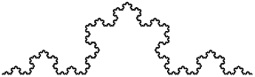
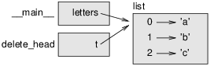
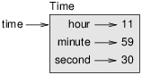

Think Python: How to Think Like a Computer Scientist
Allen B. Downey
2nd Edition, Version 2.4.0
Chapter 0 Preface
The strange history of this book
In January 1999 I was preparing to teach an introductory programming class in Java. I had taught it three times and I was getting frustrated. The failure rate in the class was too high and, even for students who succeeded, the overall level of achievement was too low.
One of the problems I saw was the books. They were too big, with too much unnecessary detail about Java, and not enough high-level guidance about how to program. And they all suffered from the trap door effect: they would start out easy, proceed gradually, and then somewhere around Chapter 5 the bottom would fall out. The students would get too much new material, too fast, and I would spend the rest of the semester picking up the pieces.
Two weeks before the first day of classes, I decided to write my own book. My goals were:
- Keep it short. It is better for students to read 10 pages than not read 50 pages.
- Be careful with vocabulary. I tried to minimize jargon and define each term at first use.
- Build gradually. To avoid trap doors, I took the most difficult topics and split them into a series of small steps.
- Focus on programming, not the programming language. I included the minimum useful subset of Java and left out the rest.
I needed a title, so on a whim I chose How to Think Like a Computer Scientist.
My first version was rough, but it worked. Students did the reading, and they understood enough that I could spend class time on the hard topics, the interesting topics and (most important) letting the students practice.
I released the book under the GNU Free Documentation License, which allows users to copy, modify, and distribute the book.
What happened next is the cool part. Jeff Elkner, a high school teacher in Virginia, adopted my book and translated it into Python. He sent me a copy of his translation, and I had the unusual experience of learning Python by reading my own book. As Green Tea Press, I published the first Python version in 2001.
In 2003 I started teaching at Olin College and I got to teach Python for the first time. The contrast with Java was striking. Students struggled less, learned more, worked on more interesting projects, and generally had a lot more fun.
Since then I’ve continued to develop the book, correcting errors, improving some of the examples and adding material, especially exercises.
The result is this book, now with the less grandiose title Think Python. Some of the changes are:
- I added a section about debugging at the end of each chapter. These sections present general techniques for finding and avoiding bugs, and warnings about Python pitfalls.
- I added more exercises, ranging from short tests of understanding to a few substantial projects. Most exercises include a link to my solution.
- I added a series of case studies—longer examples with exercises, solutions, and discussion.
- I expanded the discussion of program development plans and basic design patterns.
- I added appendices about debugging and analysis of algorithms.
The second edition of Think Python has these new features:
- The book and all supporting code have been updated to Python 3.
- I added a few sections, and more details on the web, to help beginners get started running Python in a browser, so you don’t have to deal with installing Python until you want to.
- For Chapter 4.1 I switched from my own turtle graphics package, called Swampy, to a more standard Python module, turtle, which is easier to install and more powerful.
- I added a new chapter called “The Goodies”, which introduces some additional Python features that are not strictly necessary, but sometimes handy.
I hope you enjoy working with this book, and that it helps you learn to program and think like a computer scientist, at least a little bit.
Allen B. Downey
Olin College
Acknowledgments
Many thanks to Jeff Elkner, who translated my Java book into Python, which got this project started and introduced me to what has turned out to be my favorite language.
Thanks also to Chris Meyers, who contributed several sections to How to Think Like a Computer Scientist.
Thanks to the Free Software Foundation for developing the GNU Free Documentation License, which helped make my collaboration with Jeff and Chris possible, and Creative Commons for the license I am using now.
Thanks to the editors at Lulu who worked on How to Think Like a Computer Scientist.
Thanks to the editors at O’Reilly Media who worked on Think Python.
Thanks to all the students who worked with earlier versions of this book and all the contributors (listed below) who sent in corrections and suggestions.
Contributor List
More than 100 sharp-eyed and thoughtful readers have sent in suggestions and corrections over the past few years. Their contributions, and enthusiasm for this project, have been a huge help.
If you have a suggestion or correction, please send email to feedback@thinkpython.com. If I make a change based on your feedback, I will add you to the contributor list (unless you ask to be omitted).
If you include at least part of the sentence the error appears in, that makes it easy for me to search. Page and section numbers are fine, too, but not quite as easy to work with. Thanks!
- Lloyd Hugh Allen sent in a correction to Section 8.4.
- Yvon Boulianne sent in a correction of a semantic error in Chapter 5.
- Fred Bremmer submitted a correction in Section 2.1.
- Jonah Cohen wrote the Perl scripts to convert the LaTeX source for this book into beautiful HTML.
- Michael Conlon sent in a grammar correction in Chapter 2 and an improvement in style in Chapter 1, and he initiated discussion on the technical aspects of interpreters.
- Benoît Girard sent in a correction to a humorous mistake in Section 5.6.
- Courtney Gleason and Katherine Smith wrote horsebet.py, which was used as a case study in an earlier version of the book. Their program can now be found on the website.
- Lee Harr submitted more corrections than we have room to list here, and indeed he should be listed as one of the principal editors of the text.
- James Kaylin is a student using the text. He has submitted numerous corrections.
- David Kershaw fixed the broken catTwice function in Section 3.10.
- Eddie Lam has sent in numerous corrections to Chapters 1, 2, and 3. He also fixed the Makefile so that it creates an index the first time it is run and helped us set up a versioning scheme.
- Man-Yong Lee sent in a correction to the example code in Section 2.4.
- David Mayo pointed out that the word “unconsciously" in Chapter 1 needed to be changed to “subconsciously".
- Chris McAloon sent in several corrections to Sections 3.9 and 3.10.
- Matthew J. Moelter has been a long-time contributor who sent in numerous corrections and suggestions to the book.
- Simon Dicon Montford reported a missing function definition and several typos in Chapter 3. He also found errors in the increment function in Chapter 13.
- John Ouzts corrected the definition of “return value" in Chapter 3.
- Kevin Parks sent in valuable comments and suggestions as to how to improve the distribution of the book.
- David Pool sent in a typo in the glossary of Chapter 1, as well as kind words of encouragement.
- Michael Schmitt sent in a correction to the chapter on files and exceptions.
- Robin Shaw pointed out an error in Section 13.1, where the printTime function was used in an example without being defined.
- Paul Sleigh found an error in Chapter 7 and a bug in Jonah Cohen’s Perl script that generates HTML from LaTeX.
- Craig T. Snydal is testing the text in a course at Drew University. He has contributed several valuable suggestions and corrections.
- Ian Thomas and his students are using the text in a programming course. They are the first ones to test the chapters in the latter half of the book, and they have made numerous corrections and suggestions.
- Keith Verheyden sent in a correction in Chapter 3.
- Peter Winstanley let us know about a longstanding error in our Latin in Chapter 3.
- Chris Wrobel made corrections to the code in the chapter on file I/O and exceptions.
- Moshe Zadka has made invaluable contributions to this project. In addition to writing the first draft of the chapter on Dictionaries, he provided continual guidance in the early stages of the book.
- Christoph Zwerschke sent several corrections and pedagogic suggestions, and explained the difference between gleich and selbe.
- James Mayer sent us a whole slew of spelling and typographical errors, including two in the contributor list.
- Hayden McAfee caught a potentially confusing inconsistency between two examples.
- Angel Arnal is part of an international team of translators working on the Spanish version of the text. He has also found several errors in the English version.
- Tauhidul Hoque and Lex Berezhny created the illustrations in Chapter 1 and improved many of the other illustrations.
- Dr. Michele Alzetta caught an error in Chapter 8 and sent some interesting pedagogic comments and suggestions about Fibonacci and Old Maid.
- Andy Mitchell caught a typo in Chapter 1 and a broken example in Chapter 2.
- Kalin Harvey suggested a clarification in Chapter 7 and caught some typos.
- Christopher P. Smith caught several typos and helped us update the book for Python 2.2.
- David Hutchins caught a typo in the Foreword.
- Gregor Lingl is teaching Python at a high school in Vienna, Austria. He is working on a German translation of the book, and he caught a couple of bad errors in Chapter 5.
- Julie Peters caught a typo in the Preface.
- Florin Oprina sent in an improvement in makeTime, a correction in printTime, and a nice typo.
- D. J. Webre suggested a clarification in Chapter 3.
- Ken found a fistful of errors in Chapters 8, 9 and 11.
- Ivo Wever caught a typo in Chapter 5 and suggested a clarification in Chapter 3.
- Curtis Yanko suggested a clarification in Chapter 2.
- Ben Logan sent in a number of typos and problems with translating the book into HTML.
- Jason Armstrong saw the missing word in Chapter 2.
- Louis Cordier noticed a spot in Chapter 16 where the code didn’t match the text.
- Brian Cain suggested several clarifications in Chapters 2 and 3.
- Rob Black sent in a passel of corrections, including some changes for Python 2.2.
- Jean-Philippe Rey at École Centrale Paris sent a number of patches, including some updates for Python 2.2 and other thoughtful improvements.
- Jason Mader at George Washington University made a number of useful suggestions and corrections.
- Jan Gundtofte-Bruun reminded us that “a error” is an error.
- Abel David and Alexis Dinno reminded us that the plural of “matrix” is “matrices”, not “matrixes”. This error was in the book for years, but two readers with the same initials reported it on the same day. Weird.
- Charles Thayer encouraged us to get rid of the semi-colons we had put at the ends of some statements and to clean up our use of “argument” and “parameter”.
- Roger Sperberg pointed out a twisted piece of logic in Chapter 3.
- Sam Bull pointed out a confusing paragraph in Chapter 2.
- Andrew Cheung pointed out two instances of “use before def”.
- C. Corey Capel spotted the missing word in the Third Theorem of Debugging and a typo in Chapter 4.
- Alessandra helped clear up some Turtle confusion.
- Wim Champagne found a brain-o in a dictionary example.
- Douglas Wright pointed out a problem with floor division in arc.
- Jared Spindor found some jetsam at the end of a sentence.
- Lin Peiheng sent a number of very helpful suggestions.
- Ray Hagtvedt sent in two errors and a not-quite-error.
- Torsten Hübsch pointed out an inconsistency in Swampy.
- Inga Petuhhov corrected an example in Chapter 14.
- Arne Babenhauserheide sent several helpful corrections.
- Mark E. Casida is is good at spotting repeated words.
- Scott Tyler filled in a that was missing. And then sent in a heap of corrections.
- Gordon Shephard sent in several corrections, all in separate emails.
- Andrew Turner spotted an error in Chapter 8.
- Adam Hobart fixed a problem with floor division in arc.
- Daryl Hammond and Sarah Zimmerman pointed out that I served up math.pi too early. And Zim spotted a typo.
- George Sass found a bug in a Debugging section.
- Brian Bingham suggested Exercise 5.
- Leah Engelbert-Fenton pointed out that I used tuple as a variable name, contrary to my own advice. And then found a bunch of typos and a “use before def”.
- Joe Funke spotted a typo.
- Chao-chao Chen found an inconsistency in the Fibonacci example.
- Jeff Paine knows the difference between space and spam.
- Lubos Pintes sent in a typo.
- Gregg Lind and Abigail Heithoff suggested Exercise 3.
- Max Hailperin has sent in a number of corrections and suggestions. Max is one of the authors of the extraordinary Concrete Abstractions, which you might want to read when you are done with this book.
- Chotipat Pornavalai found an error in an error message.
- Stanislaw Antol sent a list of very helpful suggestions.
- Eric Pashman sent a number of corrections for Chapters 4–11.
- Miguel Azevedo found some typos.
- Jianhua Liu sent in a long list of corrections.
- Nick King found a missing word.
- Martin Zuther sent a long list of suggestions.
- Adam Zimmerman found an inconsistency in my instance of an “instance” and several other errors.
- Ratnakar Tiwari suggested a footnote explaining degenerate triangles.
- Anurag Goel suggested another solution for
is_abecedarianand sent some additional corrections. And he knows how to spell Jane Austen. - Kelli Kratzer spotted one of the typos.
- Mark Griffiths pointed out a confusing example in Chapter 3.
- Roydan Ongie found an error in my Newton’s method.
- Patryk Wolowiec helped me with a problem in the HTML version.
- Mark Chonofsky told me about a new keyword in Python 3.
- Russell Coleman helped me with my geometry.
- Nam Nguyen found a typo and pointed out that I used the Decorator pattern but didn’t mention it by name.
- Stéphane Morin sent in several corrections and suggestions.
- Paul Stoop corrected a typo in
uses_only. - Eric Bronner pointed out a confusion in the discussion of the order of operations.
- Alexandros Gezerlis set a new standard for the number and quality of suggestions he submitted. We are deeply grateful!
- Gray Thomas knows his right from his left.
- Giovanni Escobar Sosa sent a long list of corrections and suggestions.
- Daniel Neilson corrected an error about the order of operations.
- Will McGinnis pointed out that polyline was defined differently in two places.
- Frank Hecker pointed out an exercise that was under-specified, and some broken links.
- Animesh B helped me clean up a confusing example.
- Martin Caspersen found two round-off errors.
- Gregor Ulm sent several corrections and suggestions.
- Dimitrios Tsirigkas suggested I clarify an exercise.
- Carlos Tafur sent a page of corrections and suggestions.
- Martin Nordsletten found a bug in an exercise solution.
- Sven Hoexter pointed out that a variable named input shadows a build-in function.
- Stephen Gregory pointed out the problem with cmp in Python 3.
- Ishwar Bhat corrected my statement of Fermat’s last theorem.
- Andrea Zanella translated the book into Italian, and sent a number of corrections along the way.
- Many, many thanks to Melissa Lewis and Luciano Ramalho for excellent comments and suggestions on the second edition.
- Thanks to Harry Percival from PythonAnywhere for his help getting people started running Python in a browser.
- Xavier Van Aubel made several useful corrections in the second edition.
- William Murray corrected my definition of floor division.
- Per Starbäck brought me up to date on universal newlines in Python 3.
- Laurent Rosenfeld and Mihaela Rotaru translated this book into French. Along the way, they sent many corrections and suggestions.
In addition, people who spotted typos or made corrections include Czeslaw Czapla, Dale Wilson, Francesco Carlo Cimini, Richard Fursa, Brian McGhie, Lokesh Kumar Makani, Matthew Shultz, Viet Le, Victor Simeone, Lars O.D. Christensen, Swarup Sahoo, Alix Etienne, Kuang He, Wei Huang, Karen Barber, and Eric Ransom.
Chapter 1 The way of the program
The goal of this book is to teach you to think like a computer scientist. This way of thinking combines some of the best features of mathematics, engineering, and natural science. Like mathematicians, computer scientists use formal languages to denote ideas (specifically computations). Like engineers, they design things, assembling components into systems and evaluating tradeoffs among alternatives. Like scientists, they observe the behavior of complex systems, form hypotheses, and test predictions.
The single most important skill for a computer scientist is problem solving. Problem solving means the ability to formulate problems, think creatively about solutions, and express a solution clearly and accurately. As it turns out, the process of learning to program is an excellent opportunity to practice problem-solving skills. That’s why this chapter is called, “The way of the program”.
On one level, you will be learning to program, a useful skill by itself. On another level, you will use programming as a means to an end. As we go along, that end will become clearer.
1.1 What is a program?
A program is a sequence of instructions that specifies how to perform a computation. The computation might be something mathematical, such as solving a system of equations or finding the roots of a polynomial, but it can also be a symbolic computation, such as searching and replacing text in a document or something graphical, like processing an image or playing a video.
The details look different in different languages, but a few basic instructions appear in just about every language:
- input:
- Get data from the keyboard, a file, the network, or some other device.
- output:
- Display data on the screen, save it in a file, send it over the network, etc.
- math:
- Perform basic mathematical operations like addition and multiplication.
- conditional execution:
- Check for certain conditions and run the appropriate code.
- repetition:
- Perform some action repeatedly, usually with some variation.
Believe it or not, that’s pretty much all there is to it. Every program you’ve ever used, no matter how complicated, is made up of instructions that look pretty much like these. So you can think of programming as the process of breaking a large, complex task into smaller and smaller subtasks until the subtasks are simple enough to be performed with one of these basic instructions.
1.2 Running Python
One of the challenges of getting started with Python is that you might have to install Python and related software on your computer. If you are familiar with your operating system, and especially if you are comfortable with the command-line interface, you will have no trouble installing Python. But for beginners, it can be painful to learn about system administration and programming at the same time.
To avoid that problem, I recommend that you start out running Python in a browser. Later, when you are comfortable with Python, I’ll make suggestions for installing Python on your computer.
There are a number of web pages you can use to run Python. If you already have a favorite, go ahead and use it. Otherwise I recommend PythonAnywhere. I provide detailed instructions for getting started at http://tinyurl.com/thinkpython2e.
There are two versions of Python, called Python 2 and Python 3. They are very similar, so if you learn one, it is easy to switch to the other. In fact, there are only a few differences you will encounter as a beginner. This book is written for Python 3, but I include some notes about Python 2.
The Python interpreter is a program that reads and executes Python code. Depending on your environment, you might start the interpreter by clicking on an icon, or by typing python on a command line. When it starts, you should see output like this:
Python 3.4.0 (default, Jun 19 2015, 14:20:21) [GCC 4.8.2] on linux Type "help", "copyright", "credits" or "license" for more information. >>>
The first three lines contain information about the interpreter and the operating system it’s running on, so it might be different for you. But you should check that the version number, which is 3.4.0 in this example, begins with 3, which indicates that you are running Python 3. If it begins with 2, you are running (you guessed it) Python 2.
The last line is a prompt that indicates that the interpreter is ready for you to enter code. If you type a line of code and hit Enter, the interpreter displays the result:
>>> 1 + 1 2
Now you’re ready to get started. From here on, I assume that you know how to start the Python interpreter and run code.
1.3 The first program
Traditionally, the first program you write in a new language is called “Hello, World!” because all it does is display the words “Hello, World!”. In Python, it looks like this:
>>> print('Hello, World!')
This is an example of a print statement, although it doesn’t actually print anything on paper. It displays a result on the screen. In this case, the result is the words
Hello, World!
The quotation marks in the program mark the beginning and end of the text to be displayed; they don’t appear in the result.
The parentheses indicate that print is a function. We’ll get to functions in Chapter 3.
In Python 2, the print statement is slightly different; it is not a function, so it doesn’t use parentheses.
>>> print 'Hello, World!'
This distinction will make more sense soon, but that’s enough to get started.
1.4 Arithmetic operators
After “Hello, World”, the next step is arithmetic. Python provides operators, which are special symbols that represent computations like addition and multiplication.
The operators +, -, and * perform addition, subtraction, and multiplication, as in the following examples:
>>> 40 + 2 42 >>> 43 - 1 42 >>> 6 * 7 42
The operator / performs division:
>>> 84 / 2 42.0
You might wonder why the result is 42.0 instead of 42. I’ll explain in the next section.
Finally, the operator ** performs exponentiation; that is, it raises a number to a power:
>>> 6**2 + 6 42
In some other languages, ^ is used for exponentiation, but
in Python it is a bitwise operator called XOR. If you are not
familiar with bitwise operators, the result will surprise you:
>>> 6 ^ 2 4
I won’t cover bitwise operators in this book, but you can read about them at http://wiki.python.org/moin/BitwiseOperators.
1.5 Values and types
A value is one of the basic things a program works with, like a
letter or a number. Some values we have seen so far are 2,
42.0, and 'Hello, World!'.
These values belong to different types:
2 is an integer, 42.0 is a floating-point number,
and 'Hello, World!' is a string,
so-called because the letters it contains are strung together.
If you are not sure what type a value has, the interpreter can tell you:
>>> type(2)
<class 'int'>
>>> type(42.0)
<class 'float'>
>>> type('Hello, World!')
<class 'str'>
In these results, the word “class” is used in the sense of a category; a type is a category of values.
Not surprisingly, integers belong to the type int, strings belong to str and floating-point numbers belong to float.
What about values like '2' and '42.0'?
They look like numbers, but they are in quotation marks like
strings.
>>> type('2')
<class 'str'>
>>> type('42.0')
<class 'str'>
They’re strings.
When you type a large integer, you might be tempted to use commas between groups of digits, as in 1,000,000. This is not a legal integer in Python, but it is legal:
>>> 1,000,000 (1, 0, 0)
That’s not what we expected at all! Python interprets 1,000,000 as a comma-separated sequence of integers. We’ll learn more about this kind of sequence later.
1.6 Formal and natural languages
Natural languages are the languages people speak, such as English, Spanish, and French. They were not designed by people (although people try to impose some order on them); they evolved naturally.
Formal languages are languages that are designed by people for specific applications. For example, the notation that mathematicians use is a formal language that is particularly good at denoting relationships among numbers and symbols. Chemists use a formal language to represent the chemical structure of molecules. And most importantly:
Programming languages are formal languages that have been designed to express computations.
Formal languages tend to have strict syntax rules that govern the structure of statements. For example, in mathematics the statement 3 + 3 = 6 has correct syntax, but 3 + = 3 $ 6 does not. In chemistry H2O is a syntactically correct formula, but 2Zz is not.
Syntax rules come in two flavors, pertaining to tokens and structure. Tokens are the basic elements of the language, such as words, numbers, and chemical elements. One of the problems with 3 += 3 $ 6 is that $ is not a legal token in mathematics (at least as far as I know). Similarly, 2Zz is not legal because there is no element with the abbreviation Zz.
The second type of syntax rule pertains to the way tokens are combined. The equation 3 +/ 3 is illegal because even though + and / are legal tokens, you can’t have one right after the other. Similarly, in a chemical formula the subscript comes after the element name, not before.
This is @ well-structured Engli$h sentence with invalid t*kens in it. This sentence all valid tokens has, but invalid structure with.
When you read a sentence in English or a statement in a formal language, you have to figure out the structure (although in a natural language you do this subconsciously). This process is called parsing.
Although formal and natural languages have many features in common—tokens, structure, and syntax—there are some differences:
- ambiguity:
- Natural languages are full of ambiguity, which people deal with by using contextual clues and other information. Formal languages are designed to be nearly or completely unambiguous, which means that any statement has exactly one meaning, regardless of context.
- redundancy:
- In order to make up for ambiguity and reduce misunderstandings, natural languages employ lots of redundancy. As a result, they are often verbose. Formal languages are less redundant and more concise.
- literalness:
- Natural languages are full of idiom and metaphor. If I say, “The penny dropped”, there is probably no penny and nothing dropping (this idiom means that someone understood something after a period of confusion). Formal languages mean exactly what they say.
Because we all grow up speaking natural languages, it is sometimes hard to adjust to formal languages. The difference between formal and natural language is like the difference between poetry and prose, but more so:
- Poetry:
- Words are used for their sounds as well as for their meaning, and the whole poem together creates an effect or emotional response. Ambiguity is not only common but often deliberate.
- Prose:
- The literal meaning of words is more important, and the structure contributes more meaning. Prose is more amenable to analysis than poetry but still often ambiguous.
- Programs:
- The meaning of a computer program is unambiguous and literal, and can be understood entirely by analysis of the tokens and structure.
Formal languages are more dense than natural languages, so it takes longer to read them. Also, the structure is important, so it is not always best to read from top to bottom, left to right. Instead, learn to parse the program in your head, identifying the tokens and interpreting the structure. Finally, the details matter. Small errors in spelling and punctuation, which you can get away with in natural languages, can make a big difference in a formal language.
1.7 Debugging
Programmers make mistakes. For whimsical reasons, programming errors are called bugs and the process of tracking them down is called debugging.
Programming, and especially debugging, sometimes brings out strong emotions. If you are struggling with a difficult bug, you might feel angry, despondent, or embarrassed.
There is evidence that people naturally respond to computers as if they were people. When they work well, we think of them as teammates, and when they are obstinate or rude, we respond to them the same way we respond to rude, obstinate people (Reeves and Nass, The Media Equation: How People Treat Computers, Television, and New Media Like Real People and Places).
Preparing for these reactions might help you deal with them. One approach is to think of the computer as an employee with certain strengths, like speed and precision, and particular weaknesses, like lack of empathy and inability to grasp the big picture.
Your job is to be a good manager: find ways to take advantage of the strengths and mitigate the weaknesses. And find ways to use your emotions to engage with the problem, without letting your reactions interfere with your ability to work effectively.
Learning to debug can be frustrating, but it is a valuable skill that is useful for many activities beyond programming. At the end of each chapter there is a section, like this one, with my suggestions for debugging. I hope they help!
1.8 Glossary
- problem solving:
- The process of formulating a problem, finding a solution, and expressing it.
- high-level language:
- A programming language like Python that is designed to be easy for humans to read and write.
- low-level language:
- A programming language that is designed to be easy for a computer to run; also called “machine language” or “assembly language”.
- portability:
- A property of a program that can run on more than one kind of computer.
- interpreter:
- A program that reads another program and executes it
- prompt:
- Characters displayed by the interpreter to indicate that it is ready to take input from the user.
- program:
- A set of instructions that specifies a computation.
- print statement:
- An instruction that causes the Python interpreter to display a value on the screen.
- operator:
- A special symbol that represents a simple computation like addition, multiplication, or string concatenation.
- value:
- One of the basic units of data, like a number or string, that a program manipulates.
- type:
- A category of values. The types we have seen so far are integers (type int), floating-point numbers (type float), and strings (type str).
- integer:
- A type that represents whole numbers.
- floating-point:
- A type that represents numbers with fractional parts.
- string:
- A type that represents sequences of characters.
- natural language:
- Any one of the languages that people speak that evolved naturally.
- formal language:
- Any one of the languages that people have designed for specific purposes, such as representing mathematical ideas or computer programs; all programming languages are formal languages.
- token:
- One of the basic elements of the syntactic structure of a program, analogous to a word in a natural language.
- syntax:
- The rules that govern the structure of a program.
- parse:
- To examine a program and analyze the syntactic structure.
- bug:
- An error in a program.
- debugging:
- The process of finding and correcting bugs.
1.9 Exercises
It is a good idea to read this book in front of a computer so you can try out the examples as you go.
Whenever you are experimenting with a new feature, you should try to make mistakes. For example, in the “Hello, world!” program, what happens if you leave out one of the quotation marks? What if you leave out both? What if you spell print wrong?
This kind of experiment helps you remember what you read; it also helps when you are programming, because you get to know what the error messages mean. It is better to make mistakes now and on purpose than later and accidentally.
- In a print statement, what happens if you leave out one of the parentheses, or both?
- If you are trying to print a string, what happens if you leave out one of the quotation marks, or both?
- You can use a minus sign to make a negative number like -2. What happens if you put a plus sign before a number? What about 2++2?
- In math notation, leading zeros are ok, as in 09. What happens if you try this in Python? What about 011?
- What happens if you have two values with no operator between them?
Start the Python interpreter and use it as a calculator.
- How many seconds are there in 42 minutes 42 seconds?
- How many miles are there in 10 kilometers? Hint: there are 1.61 kilometers in a mile.
- If you run a 10 kilometer race in 42 minutes 42 seconds, what is your average pace (time per mile in minutes and seconds)? What is your average speed in miles per hour?
Chapter 2 Variables, expressions and statements
One of the most powerful features of a programming language is the ability to manipulate variables. A variable is a name that refers to a value.
2.1 Assignment statements
An assignment statement creates a new variable and gives it a value:
>>> message = 'And now for something completely different' >>> n = 17 >>> pi = 3.1415926535897932
This example makes three assignments. The first assigns a string to a new variable named message; the second gives the integer 17 to n; the third assigns the (approximate) value of π to pi.
A common way to represent variables on paper is to write the name with an arrow pointing to its value. This kind of figure is called a state diagram because it shows what state each of the variables is in (think of it as the variable’s state of mind). Figure 2.1 shows the result of the previous example.
Figure 2.1: State diagram.
2.2 Variable names
Programmers generally choose names for their variables that are meaningful—they document what the variable is used for.
Variable names can be as long as you like. They can contain both letters and numbers, but they can’t begin with a number. It is legal to use uppercase letters, but it is conventional to use only lower case for variables names.
The underscore character, _, can appear in a name.
It is often used in names with multiple words, such as
your_name or airspeed_of_unladen_swallow.
If you give a variable an illegal name, you get a syntax error:
>>> 76trombones = 'big parade' SyntaxError: invalid syntax >>> more@ = 1000000 SyntaxError: invalid syntax >>> class = 'Advanced Theoretical Zymurgy' SyntaxError: invalid syntax
76trombones is illegal because it begins with a number. more@ is illegal because it contains an illegal character, @. But what’s wrong with class?
It turns out that class is one of Python’s keywords. The interpreter uses keywords to recognize the structure of the program, and they cannot be used as variable names.
Python 3 has these keywords:
False class finally is return None continue for lambda try True def from nonlocal while and del global not with as elif if or yield assert else import pass break except in raise
You don’t have to memorize this list. In most development environments, keywords are displayed in a different color; if you try to use one as a variable name, you’ll know.
2.3 Expressions and statements
An expression is a combination of values, variables, and operators. A value all by itself is considered an expression, and so is a variable, so the following are all legal expressions:
>>> 42 42 >>> n 17 >>> n + 25 42
When you type an expression at the prompt, the interpreter evaluates it, which means that it finds the value of the expression. In this example, n has the value 17 and n + 25 has the value 42.
A statement is a unit of code that has an effect, like creating a variable or displaying a value.
>>> n = 17 >>> print(n)
The first line is an assignment statement that gives a value to n. The second line is a print statement that displays the value of n.
When you type a statement, the interpreter executes it, which means that it does whatever the statement says. In general, statements don’t have values.
2.4 Script mode
So far we have run Python in interactive mode, which means that you interact directly with the interpreter. Interactive mode is a good way to get started, but if you are working with more than a few lines of code, it can be clumsy.
The alternative is to save code in a file called a script and then run the interpreter in script mode to execute the script. By convention, Python scripts have names that end with .py.
If you know how to create and run a script on your computer, you are ready to go. Otherwise I recommend using PythonAnywhere again. I have posted instructions for running in script mode at http://tinyurl.com/thinkpython2e.
Because Python provides both modes, you can test bits of code in interactive mode before you put them in a script. But there are differences between interactive mode and script mode that can be confusing.
For example, if you are using Python as a calculator, you might type
>>> miles = 26.2 >>> miles * 1.61 42.182
The first line assigns a value to miles, but it has no visible effect. The second line is an expression, so the interpreter evaluates it and displays the result. It turns out that a marathon is about 42 kilometers.
But if you type the same code into a script and run it, you get no output at all. In script mode an expression, all by itself, has no visible effect. Python evaluates the expression, but it doesn’t display the result. To display the result, you need a print statement like this:
miles = 26.2 print(miles * 1.61)
This behavior can be confusing at first. To check your understanding, type the following statements in the Python interpreter and see what they do:
5 x = 5 x + 1
Now put the same statements in a script and run it. What is the output? Modify the script by transforming each expression into a print statement and then run it again.
2.5 Order of operations
When an expression contains more than one operator, the order of evaluation depends on the order of operations. For mathematical operators, Python follows mathematical convention. The acronym PEMDAS is a useful way to remember the rules:
- Parentheses have the highest precedence and can be used to force an expression to evaluate in the order you want. Since expressions in parentheses are evaluated first, 2 * (3-1) is 4, and (1+1)**(5-2) is 8. You can also use parentheses to make an expression easier to read, as in (minute * 100) / 60, even if it doesn’t change the result.
- Exponentiation has the next highest precedence, so 1 + 2**3 is 9, not 27, and 2 * 3**2 is 18, not 36.
- Multiplication and Division have higher precedence than Addition and Subtraction. So 2*3-1 is 5, not 4, and 6+4/2 is 8, not 5.
- Operators with the same precedence are evaluated from left to right (except exponentiation). So in the expression degrees / 2 * pi, the division happens first and the result is multiplied by pi. To divide by 2 π, you can use parentheses or write degrees / 2 / pi.
I don’t work very hard to remember the precedence of operators. If I can’t tell by looking at the expression, I use parentheses to make it obvious.
2.6 String operations
In general, you can’t perform mathematical operations on strings, even if the strings look like numbers, so the following are illegal:
'chinese'-'food' 'eggs'/'easy' 'third'*'a charm'
But there are two exceptions, + and *.
The + operator performs string concatenation, which means it joins the strings by linking them end-to-end. For example:
>>> first = 'throat' >>> second = 'warbler' >>> first + second throatwarbler
The * operator also works on strings; it performs repetition.
For example, 'Spam'*3 is 'SpamSpamSpam'. If one of the
values is a string, the other has to be an integer.
This use of + and * makes sense by
analogy with addition and multiplication. Just as 4*3 is
equivalent to 4+4+4, we expect 'Spam'*3 to be the same as
'Spam'+'Spam'+'Spam', and it is. On the other hand, there is a
significant way in which string concatenation and repetition are
different from integer addition and multiplication.
Can you think of a property that addition has
that string concatenation does not?
2.7 Comments
As programs get bigger and more complicated, they get more difficult to read. Formal languages are dense, and it is often difficult to look at a piece of code and figure out what it is doing, or why.
For this reason, it is a good idea to add notes to your programs to explain
in natural language what the program is doing. These notes are called
comments, and they start with the # symbol:
# compute the percentage of the hour that has elapsed percentage = (minute * 100) / 60
In this case, the comment appears on a line by itself. You can also put comments at the end of a line:
percentage = (minute * 100) / 60 # percentage of an hour
Everything from the # to the end of the line is ignored—it has no effect on the execution of the program.
Comments are most useful when they document non-obvious features of the code. It is reasonable to assume that the reader can figure out what the code does; it is more useful to explain why.
This comment is redundant with the code and useless:
v = 5 # assign 5 to v
This comment contains useful information that is not in the code:
v = 5 # velocity in meters/second.
Good variable names can reduce the need for comments, but long names can make complex expressions hard to read, so there is a tradeoff.
2.8 Debugging
Three kinds of errors can occur in a program: syntax errors, runtime errors, and semantic errors. It is useful to distinguish between them in order to track them down more quickly.
- Syntax error:
- “Syntax” refers to the structure of a program
and the rules about that structure. For example, parentheses have
to come in matching pairs, so (1 + 2) is legal, but 8)
is a syntax error.
If there is a syntax error anywhere in your program, Python displays an error message and quits, and you will not be able to run the program. During the first few weeks of your programming career, you might spend a lot of time tracking down syntax errors. As you gain experience, you will make fewer errors and find them faster.
- Runtime error:
- The second type of error is a runtime error, so
called because the error does not appear until after the program has
started running. These errors are also called exceptions
because they usually indicate that something exceptional (and bad)
has happened.
Runtime errors are rare in the simple programs you will see in the first few chapters, so it might be a while before you encounter one.
- Semantic error:
- The third type of error is “semantic”, which
means related to meaning. If there is a semantic error in your
program, it will run without generating error messages, but it will
not do the right thing. It will do something else. Specifically,
it will do what you told it to do.
Identifying semantic errors can be tricky because it requires you to work backward by looking at the output of the program and trying to figure out what it is doing.
2.9 Glossary
- variable:
- A name that refers to a value.
- assignment:
- A statement that assigns a value to a variable.
- state diagram:
- A graphical representation of a set of variables and the values they refer to.
- keyword:
- A reserved word that is used to parse a program; you cannot use keywords like if, def, and while as variable names.
- operand:
- One of the values on which an operator operates.
- expression:
- A combination of variables, operators, and values that represents a single result.
- evaluate:
- To simplify an expression by performing the operations in order to yield a single value.
- statement:
- A section of code that represents a command or action. So far, the statements we have seen are assignments and print statements.
- execute:
- To run a statement and do what it says.
- interactive mode:
- A way of using the Python interpreter by typing code at the prompt.
- script mode:
- A way of using the Python interpreter to read code from a script and run it.
- script:
- A program stored in a file.
- order of operations:
- Rules governing the order in which expressions involving multiple operators and operands are evaluated.
- concatenate:
- To join two operands end-to-end.
- comment:
- Information in a program that is meant for other programmers (or anyone reading the source code) and has no effect on the execution of the program.
- syntax error:
- An error in a program that makes it impossible to parse (and therefore impossible to interpret).
- exception:
- An error that is detected while the program is running.
- semantics:
- The meaning of a program.
- semantic error:
- An error in a program that makes it do something other than what the programmer intended.
2.10 Exercises
Repeating my advice from the previous chapter, whenever you learn a new feature, you should try it out in interactive mode and make errors on purpose to see what goes wrong.
- We’ve seen that n = 42 is legal. What about 42 = n?
- How about x = y = 1?
- In some languages every statement ends with a semi-colon, ;. What happens if you put a semi-colon at the end of a Python statement?
- What if you put a period at the end of a statement?
- In math notation you can multiply x and y like this: x y. What happens if you try that in Python?
Practice using the Python interpreter as a calculator:
- The volume of a sphere with radius r is 4/3 π r3. What is the volume of a sphere with radius 5?
- Suppose the cover price of a book is $24.95, but bookstores get a 40% discount. Shipping costs $3 for the first copy and 75 cents for each additional copy. What is the total wholesale cost for 60 copies?
- If I leave my house at 6:52 am and run 1 mile at an easy pace (8:15 per mile), then 3 miles at tempo (7:12 per mile) and 1 mile at easy pace again, what time do I get home for breakfast?
Chapter 3 Functions
In the context of programming, a function is a named sequence of statements that performs a computation. When you define a function, you specify the name and the sequence of statements. Later, you can “call” the function by name.
3.1 Function calls
We have already seen one example of a function call:
>>> type(42) <class 'int'>
The name of the function is type. The expression in parentheses is called the argument of the function. The result, for this function, is the type of the argument.
It is common to say that a function “takes” an argument and “returns” a result. The result is also called the return value.
Python provides functions that convert values from one type to another. The int function takes any value and converts it to an integer, if it can, or complains otherwise:
>>> int('32')
32
>>> int('Hello')
ValueError: invalid literal for int(): Hello
int can convert floating-point values to integers, but it doesn’t round off; it chops off the fraction part:
>>> int(3.99999) 3 >>> int(-2.3) -2
float converts integers and strings to floating-point numbers:
>>> float(32)
32.0
>>> float('3.14159')
3.14159
Finally, str converts its argument to a string:
>>> str(32) '32' >>> str(3.14159) '3.14159'
3.2 Math functions
Python has a math module that provides most of the familiar mathematical functions. A module is a file that contains a collection of related functions.
Before we can use the functions in a module, we have to import it with an import statement:
>>> import math
This statement creates a module object named math. If you display the module object, you get some information about it:
>>> math <module 'math' (built-in)>
The module object contains the functions and variables defined in the module. To access one of the functions, you have to specify the name of the module and the name of the function, separated by a dot (also known as a period). This format is called dot notation.
>>> ratio = signal_power / noise_power >>> decibels = 10 * math.log10(ratio) >>> radians = 0.7 >>> height = math.sin(radians)
The first example uses math.log10 to compute
a signal-to-noise ratio in decibels (assuming that signal_power and
noise_power are defined). The math module also provides log,
which computes logarithms base e.
The second example finds the sine of radians. The variable name radians is a hint that sin and the other trigonometric functions (cos, tan, etc.) take arguments in radians. To convert from degrees to radians, divide by 180 and multiply by π:
>>> degrees = 45 >>> radians = degrees / 180.0 * math.pi >>> math.sin(radians) 0.707106781187
The expression math.pi gets the variable pi from the math module. Its value is a floating-point approximation of π, accurate to about 15 digits.
If you know trigonometry, you can check the previous result by comparing it to the square root of two, divided by two:
>>> math.sqrt(2) / 2.0 0.707106781187
3.3 Composition
So far, we have looked at the elements of a program—variables, expressions, and statements—in isolation, without talking about how to combine them.
One of the most useful features of programming languages is their ability to take small building blocks and compose them. For example, the argument of a function can be any kind of expression, including arithmetic operators:
x = math.sin(degrees / 360.0 * 2 * math.pi)
And even function calls:
x = math.exp(math.log(x+1))
Almost anywhere you can put a value, you can put an arbitrary expression, with one exception: the left side of an assignment statement has to be a variable name. Any other expression on the left side is a syntax error (we will see exceptions to this rule later).
>>> minutes = hours * 60 # right >>> hours * 60 = minutes # wrong! SyntaxError: can't assign to operator
3.4 Adding new functions
So far, we have only been using the functions that come with Python, but it is also possible to add new functions. A function definition specifies the name of a new function and the sequence of statements that run when the function is called.
Here is an example:
def print_lyrics():
print("I'm a lumberjack, and I'm okay.")
print("I sleep all night and I work all day.")
def is a keyword that indicates that this is a function
definition. The name of the function is print_lyrics. The
rules for function names are the same as for variable names: letters,
numbers and underscore are legal, but the first character
can’t be a number. You can’t use a keyword as the name of a function,
and you should avoid having a variable and a function with the same
name.
The empty parentheses after the name indicate that this function doesn’t take any arguments.
The first line of the function definition is called the header; the rest is called the body. The header has to end with a colon and the body has to be indented. By convention, indentation is always four spaces. The body can contain any number of statements.
The strings in the print statements are enclosed in double quotes. Single quotes and double quotes do the same thing; most people use single quotes except in cases like this where a single quote (which is also an apostrophe) appears in the string.
All quotation marks (single and double) must be “straight quotes”, usually located next to Enter on the keyboard. “Curly quotes”, like the ones in this sentence, are not legal in Python.
If you type a function definition in interactive mode, the interpreter prints dots (...) to let you know that the definition isn’t complete:
>>> def print_lyrics():
... print("I'm a lumberjack, and I'm okay.")
... print("I sleep all night and I work all day.")
...
To end the function, you have to enter an empty line.
Defining a function creates a function object, which
has type function:
>>> print(print_lyrics) <function print_lyrics at 0xb7e99e9c> >>> type(print_lyrics) <class 'function'>
The syntax for calling the new function is the same as for built-in functions:
>>> print_lyrics() I'm a lumberjack, and I'm okay. I sleep all night and I work all day.
Once you have defined a function, you can use it inside another
function. For example, to repeat the previous refrain, we could write
a function called repeat_lyrics:
def repeat_lyrics():
print_lyrics()
print_lyrics()
And then call repeat_lyrics:
>>> repeat_lyrics() I'm a lumberjack, and I'm okay. I sleep all night and I work all day. I'm a lumberjack, and I'm okay. I sleep all night and I work all day.
But that’s not really how the song goes.
3.5 Definitions and uses
Pulling together the code fragments from the previous section, the whole program looks like this:
def print_lyrics():
print("I'm a lumberjack, and I'm okay.")
print("I sleep all night and I work all day.")
def repeat_lyrics():
print_lyrics()
print_lyrics()
repeat_lyrics()
This program contains two function definitions: print_lyrics and
repeat_lyrics. Function definitions get executed just like other
statements, but the effect is to create function objects. The statements
inside the function do not run until the function is called, and
the function definition generates no output.
As you might expect, you have to create a function before you can run it. In other words, the function definition has to run before the function gets called.
As an exercise, move the last line of this program to the top, so the function call appears before the definitions. Run the program and see what error message you get.
Now move the function call back to the bottom
and move the definition of print_lyrics after the definition of
repeat_lyrics. What happens when you run this program?
3.6 Flow of execution
To ensure that a function is defined before its first use, you have to know the order statements run in, which is called the flow of execution.
Execution always begins at the first statement of the program. Statements are run one at a time, in order from top to bottom.
Function definitions do not alter the flow of execution of the program, but remember that statements inside the function don’t run until the function is called.
A function call is like a detour in the flow of execution. Instead of going to the next statement, the flow jumps to the body of the function, runs the statements there, and then comes back to pick up where it left off.
That sounds simple enough, until you remember that one function can call another. While in the middle of one function, the program might have to run the statements in another function. Then, while running that new function, the program might have to run yet another function!
Fortunately, Python is good at keeping track of where it is, so each time a function completes, the program picks up where it left off in the function that called it. When it gets to the end of the program, it terminates.
In summary, when you read a program, you don’t always want to read from top to bottom. Sometimes it makes more sense if you follow the flow of execution.
3.7 Parameters and arguments
Some of the functions we have seen require arguments. For example, when you call math.sin you pass a number as an argument. Some functions take more than one argument: math.pow takes two, the base and the exponent.
Inside the function, the arguments are assigned to variables called parameters. Here is a definition for a function that takes an argument:
def print_twice(bruce):
print(bruce)
print(bruce)
This function assigns the argument to a parameter named bruce. When the function is called, it prints the value of the parameter (whatever it is) twice.
This function works with any value that can be printed.
>>> print_twice('Spam')
Spam
Spam
>>> print_twice(42)
42
42
>>> print_twice(math.pi)
3.14159265359
3.14159265359
The same rules of composition that apply to built-in functions also
apply to programmer-defined functions, so we can use any kind of expression
as an argument for print_twice:
>>> print_twice('Spam '*4)
Spam Spam Spam Spam
Spam Spam Spam Spam
>>> print_twice(math.cos(math.pi))
-1.0
-1.0
The argument is evaluated before the function is called, so
in the examples the expressions 'Spam '*4 and
math.cos(math.pi) are only evaluated once.
You can also use a variable as an argument:
>>> michael = 'Eric, the half a bee.' >>> print_twice(michael) Eric, the half a bee. Eric, the half a bee.
The name of the variable we pass as an argument (michael) has
nothing to do with the name of the parameter (bruce). It
doesn’t matter what the value was called back home (in the caller);
here in print_twice, we call everybody bruce.
3.8 Variables and parameters are local
When you create a variable inside a function, it is local, which means that it only exists inside the function. For example:
def cat_twice(part1, part2):
cat = part1 + part2
print_twice(cat)
This function takes two arguments, concatenates them, and prints the result twice. Here is an example that uses it:
>>> line1 = 'Bing tiddle ' >>> line2 = 'tiddle bang.' >>> cat_twice(line1, line2) Bing tiddle tiddle bang. Bing tiddle tiddle bang.
When cat_twice terminates, the variable cat
is destroyed. If we try to print it, we get an exception:
>>> print(cat) NameError: name 'cat' is not defined
Parameters are also local.
For example, outside print_twice, there is no
such thing as bruce.
3.9 Stack diagrams
To keep track of which variables can be used where, it is sometimes useful to draw a stack diagram. Like state diagrams, stack diagrams show the value of each variable, but they also show the function each variable belongs to.
Each function is represented by a frame. A frame is a box with the name of a function beside it and the parameters and variables of the function inside it. The stack diagram for the previous example is shown in Figure 3.1.
Figure 3.1: Stack diagram.
The frames are arranged in a stack that indicates which function
called which, and so on. In this example, print_twice
was called by cat_twice, and cat_twice was called by
__main__, which is a special name for the topmost frame. When
you create a variable outside of any function, it belongs to
__main__.
Each parameter refers to the same value as its corresponding argument. So, part1 has the same value as line1, part2 has the same value as line2, and bruce has the same value as cat.
If an error occurs during a function call, Python prints the
name of the function, the name of the function that called
it, and the name of the function that called that, all the
way back to __main__.
For example, if you try to access cat from within
print_twice, you get a NameError:
Traceback (innermost last):
File "test.py", line 13, in __main__
cat_twice(line1, line2)
File "test.py", line 5, in cat_twice
print_twice(cat)
File "test.py", line 9, in print_twice
print(cat)
NameError: name 'cat' is not defined
This list of functions is called a traceback. It tells you what program file the error occurred in, and what line, and what functions were executing at the time. It also shows the line of code that caused the error.
The order of the functions in the traceback is the same as the order of the frames in the stack diagram. The function that is currently running is at the bottom.
3.10 Fruitful functions and void functions
Some of the functions we have used, such as the math functions, return
results; for lack of a better name, I call them fruitful
functions. Other functions, like print_twice, perform an
action but don’t return a value. They are called void
functions.
When you call a fruitful function, you almost always want to do something with the result; for example, you might assign it to a variable or use it as part of an expression:
x = math.cos(radians) golden = (math.sqrt(5) + 1) / 2
When you call a function in interactive mode, Python displays the result:
>>> math.sqrt(5) 2.2360679774997898
But in a script, if you call a fruitful function all by itself, the return value is lost forever!
math.sqrt(5)
This script computes the square root of 5, but since it doesn’t store or display the result, it is not very useful.
Void functions might display something on the screen or have some other effect, but they don’t have a return value. If you assign the result to a variable, you get a special value called None.
>>> result = print_twice('Bing')
Bing
Bing
>>> print(result)
None
The value None is not the same as the string 'None'.
It is a special value that has its own type:
>>> type(None) <class 'NoneType'>
The functions we have written so far are all void. We will start writing fruitful functions in a few chapters.
3.11 Why functions?
It may not be clear why it is worth the trouble to divide a program into functions. There are several reasons:
- Creating a new function gives you an opportunity to name a group of statements, which makes your program easier to read and debug.
- Functions can make a program smaller by eliminating repetitive code. Later, if you make a change, you only have to make it in one place.
- Dividing a long program into functions allows you to debug the parts one at a time and then assemble them into a working whole.
- Well-designed functions are often useful for many programs. Once you write and debug one, you can reuse it.
3.12 Debugging
One of the most important skills you will acquire is debugging. Although it can be frustrating, debugging is one of the most intellectually rich, challenging, and interesting parts of programming.
In some ways debugging is like detective work. You are confronted with clues and you have to infer the processes and events that led to the results you see.
Debugging is also like an experimental science. Once you have an idea about what is going wrong, you modify your program and try again. If your hypothesis was correct, you can predict the result of the modification, and you take a step closer to a working program. If your hypothesis was wrong, you have to come up with a new one. As Sherlock Holmes pointed out, “When you have eliminated the impossible, whatever remains, however improbable, must be the truth.” (A. Conan Doyle, The Sign of Four)
For some people, programming and debugging are the same thing. That is, programming is the process of gradually debugging a program until it does what you want. The idea is that you should start with a working program and make small modifications, debugging them as you go.
For example, Linux is an operating system that contains millions of lines of code, but it started out as a simple program Linus Torvalds used to explore the Intel 80386 chip. According to Larry Greenfield, “One of Linus’s earlier projects was a program that would switch between printing AAAA and BBBB. This later evolved to Linux.” (The Linux Users’ Guide Beta Version 1).
3.13 Glossary
- function:
- A named sequence of statements that performs some useful operation. Functions may or may not take arguments and may or may not produce a result.
- function definition:
- A statement that creates a new function, specifying its name, parameters, and the statements it contains.
- function object:
- A value created by a function definition. The name of the function is a variable that refers to a function object.
- header:
- The first line of a function definition.
- body:
- The sequence of statements inside a function definition.
- parameter:
- A name used inside a function to refer to the value passed as an argument.
- function call:
- A statement that runs a function. It consists of the function name followed by an argument list in parentheses.
- argument:
- A value provided to a function when the function is called. This value is assigned to the corresponding parameter in the function.
- local variable:
- A variable defined inside a function. A local variable can only be used inside its function.
- return value:
- The result of a function. If a function call is used as an expression, the return value is the value of the expression.
- fruitful function:
- A function that returns a value.
- void function:
- A function that always returns None.
- None:
- A special value returned by void functions.
- module:
- A file that contains a collection of related functions and other definitions.
- import statement:
- A statement that reads a module file and creates a module object.
- module object:
- A value created by an import statement that provides access to the values defined in a module.
- dot notation:
- The syntax for calling a function in another module by specifying the module name followed by a dot (period) and the function name.
- composition:
- Using an expression as part of a larger expression, or a statement as part of a larger statement.
- flow of execution:
- The order statements run in.
- stack diagram:
- A graphical representation of a stack of functions, their variables, and the values they refer to.
- frame:
- A box in a stack diagram that represents a function call. It contains the local variables and parameters of the function.
- traceback:
- A list of the functions that are executing, printed when an exception occurs.
3.14 Exercises
Write a function named right_justify that takes a string
named s as a parameter and prints the string with enough
leading spaces so that the last letter of the string is in column 70
of the display.
>>> right_justify('monty')
monty
Hint: Use string concatenation and repetition. Also,
Python provides a built-in function called len that
returns the length of a string, so the value of len('monty') is 5.
A function object is a value you can assign to a variable
or pass as an argument. For example, do_twice is a function
that takes a function object as an argument and calls it twice:
def do_twice(f):
f()
f()
Here’s an example that uses do_twice to call a function
named print_spam twice.
def print_spam():
print('spam')
do_twice(print_spam)
- Type this example into a script and test it.
- Modify
do_twiceso that it takes two arguments, a function object and a value, and calls the function twice, passing the value as an argument. - Copy the definition of
print_twicefrom earlier in this chapter to your script. - Use the modified version of
do_twiceto callprint_twicetwice, passing'spam'as an argument. - Define a new function called
do_fourthat takes a function object and a value and calls the function four times, passing the value as a parameter. There should be only two statements in the body of this function, not four.
Solution: https://thinkpython.com/code/do_four.py.
Note: This exercise should be done using only the statements and other features we have learned so far.
- Write a function that draws a grid like the following:
+ - - - - + - - - - + | | | | | | | | | | | | + - - - - + - - - - + | | | | | | | | | | | | + - - - - + - - - - +
Hint: to print more than one value on a line, you can print a comma-separated sequence of values:
print('+', '-')By default, print advances to the next line, but you can override that behavior and put a space at the end, like this:
print('+', end=' ') print('-')The output of these statements is
'+ -'on the same line. The output from the next print statement would begin on the next line. - Write a function that draws a similar grid with four rows and four columns.
Solution: https://thinkpython.com/code/grid.py. Credit: This exercise is based on an exercise in Oualline, Practical C Programming, Third Edition, O’Reilly Media, 1997.
Chapter 4 Case study: interface design
This chapter presents a case study that demonstrates a process for designing functions that work together.
It introduces the turtle module, which allows you to create images using turtle graphics. The turtle module is included in most Python installations, but if you are running Python using PythonAnywhere, you won’t be able to run the turtle examples (at least you couldn’t when I wrote this).
If you have already installed Python on your computer, you should be able to run the examples. Otherwise, now is a good time to install. I have posted instructions at http://tinyurl.com/thinkpython2e.
Code examples from this chapter are available from https://thinkpython.com/code/polygon.py.
4.1 The turtle module
To check whether you have the turtle module, open the Python interpreter and type
>>> import turtle >>> bob = turtle.Turtle()
When you run this code, it should create a new window with small arrow that represents the turtle. Close the window.
Create a file named mypolygon.py and type in the following code:
import turtle bob = turtle.Turtle() print(bob) turtle.mainloop()
The turtle module (with a lowercase ’t’) provides a function called Turtle (with an uppercase ’T’) that creates a Turtle object, which we assign to a variable named bob. Printing bob displays something like:
<turtle.Turtle object at 0xb7bfbf4c>
This means that bob refers to an object with type Turtle as defined in module turtle.
mainloop tells the window to wait for the user
to do something, although in this case there’s not much for
the user to do except close the window.
Once you create a Turtle, you can call a method to move it around the window. A method is similar to a function, but it uses slightly different syntax. For example, to move the turtle forward:
bob.fd(100)
The method, fd, is associated with the turtle object we’re calling bob. Calling a method is like making a request: you are asking bob to move forward.
The argument of fd is a distance in pixels, so the actual size depends on your display.
Other methods you can call on a Turtle are bk to move backward, lt for left turn, and rt right turn. The argument for lt and rt is an angle in degrees.
Also, each Turtle is holding a pen, which is either down or up; if the pen is down, the Turtle leaves a trail when it moves. The methods pu and pd stand for “pen up” and “pen down”.
To draw a right angle, add these lines to the program
(after creating bob and before calling mainloop):
bob.fd(100) bob.lt(90) bob.fd(100)
When you run this program, you should see bob move east and then north, leaving two line segments behind.
Now modify the program to draw a square. Don’t go on until you’ve got it working!
4.2 Simple repetition
Chances are you wrote something like this:
bob.fd(100) bob.lt(90) bob.fd(100) bob.lt(90) bob.fd(100) bob.lt(90) bob.fd(100)
We can do the same thing more concisely with a for statement. Add this example to mypolygon.py and run it again:
for i in range(4):
print('Hello!')
You should see something like this:
Hello! Hello! Hello! Hello!
This is the simplest use of the for statement; we will see more later. But that should be enough to let you rewrite your square-drawing program. Don’t go on until you do.
Here is a for statement that draws a square:
for i in range(4):
bob.fd(100)
bob.lt(90)
The syntax of a for statement is similar to a function definition. It has a header that ends with a colon and an indented body. The body can contain any number of statements.
A for statement is also called a loop because the flow of execution runs through the body and then loops back to the top. In this case, it runs the body four times.
This version is actually a little different from the previous square-drawing code because it makes another turn after drawing the last side of the square. The extra turn takes more time, but it simplifies the code if we do the same thing every time through the loop. This version also has the effect of leaving the turtle back in the starting position, facing in the starting direction.
4.3 Exercises
The following is a series of exercises using the turtle module. They are meant to be fun, but they have a point, too. While you are working on them, think about what the point is.
The following sections have solutions to the exercises, so don’t look until you have finished (or at least tried).
- Write a function called square that takes a parameter
named t, which is a turtle. It should use the turtle to draw
a square.
Write a function call that passes bob as an argument to square, and then run the program again.
- Add another parameter, named length, to square. Modify the body so length of the sides is length, and then modify the function call to provide a second argument. Run the program again. Test your program with a range of values for length.
- Make a copy of square and change the name to polygon. Add another parameter named n and modify the body so it draws an n-sided regular polygon. Hint: The exterior angles of an n-sided regular polygon are 360/n degrees.
- Write a function called circle that takes a turtle,
t, and radius, r, as parameters and that draws an
approximate circle by calling polygon with an appropriate
length and number of sides. Test your function with a range of values
of r.
Hint: figure out the circumference of the circle and make sure that length * n = circumference.
- Make a more general version of circle called arc that takes an additional parameter angle, which determines what fraction of a circle to draw. angle is in units of degrees, so when angle=360, arc should draw a complete circle.
4.4 Encapsulation
The first exercise asks you to put your square-drawing code into a function definition and then call the function, passing the turtle as a parameter. Here is a solution:
def square(t):
for i in range(4):
t.fd(100)
t.lt(90)
square(bob)
The innermost statements, fd and lt are indented twice to show that they are inside the for loop, which is inside the function definition. The next line, square(bob), is flush with the left margin, which indicates the end of both the for loop and the function definition.
Inside the function, t refers to the same turtle bob, so t.lt(90) has the same effect as bob.lt(90). In that case, why not call the parameter bob? The idea is that t can be any turtle, not just bob, so you could create a second turtle and pass it as an argument to square:
alice = turtle.Turtle() square(alice)
Wrapping a piece of code up in a function is called encapsulation. One of the benefits of encapsulation is that it attaches a name to the code, which serves as a kind of documentation. Another advantage is that if you re-use the code, it is more concise to call a function twice than to copy and paste the body!
4.5 Generalization
The next step is to add a length parameter to square. Here is a solution:
def square(t, length):
for i in range(4):
t.fd(length)
t.lt(90)
square(bob, 100)
Adding a parameter to a function is called generalization because it makes the function more general: in the previous version, the square is always the same size; in this version it can be any size.
The next step is also a generalization. Instead of drawing squares, polygon draws regular polygons with any number of sides. Here is a solution:
def polygon(t, n, length):
angle = 360 / n
for i in range(n):
t.fd(length)
t.lt(angle)
polygon(bob, 7, 70)
This example draws a 7-sided polygon with side length 70.
If you are using Python 2, the value of angle might be off because of integer division. A simple solution is to compute angle = 360.0 / n. Because the numerator is a floating-point number, the result is floating point.
When a function has more than a few numeric arguments, it is easy to forget what they are, or what order they should be in. In that case it is often a good idea to include the names of the parameters in the argument list:
polygon(bob, n=7, length=70)
These are called keyword arguments because they include the parameter names as “keywords” (not to be confused with Python keywords like while and def).
This syntax makes the program more readable. It is also a reminder about how arguments and parameters work: when you call a function, the arguments are assigned to the parameters.
4.6 Interface design
The next step is to write circle, which takes a radius, r, as a parameter. Here is a simple solution that uses polygon to draw a 50-sided polygon:
import math
def circle(t, r):
circumference = 2 * math.pi * r
n = 50
length = circumference / n
polygon(t, n, length)
The first line computes the circumference of a circle with radius r using the formula 2 π r. Since we use math.pi, we have to import math. By convention, import statements are usually at the beginning of the script.
n is the number of line segments in our approximation of a circle, so length is the length of each segment. Thus, polygon draws a 50-sided polygon that approximates a circle with radius r.
One limitation of this solution is that n is a constant, which means that for very big circles, the line segments are too long, and for small circles, we waste time drawing very small segments. One solution would be to generalize the function by taking n as a parameter. This would give the user (whoever calls circle) more control, but the interface would be less clean.
The interface of a function is a summary of how it is used: what are the parameters? What does the function do? And what is the return value? An interface is “clean” if it allows the caller to do what they want without dealing with unnecessary details.
In this example, r belongs in the interface because it specifies the circle to be drawn. n is less appropriate because it pertains to the details of how the circle should be rendered.
Rather than clutter up the interface, it is better to choose an appropriate value of n depending on circumference:
def circle(t, r):
circumference = 2 * math.pi * r
n = int(circumference / 3) + 3
length = circumference / n
polygon(t, n, length)
Now the number of segments is an integer near circumference/3, so the length of each segment is approximately 3, which is small enough that the circles look good, but big enough to be efficient, and acceptable for any size circle.
Adding 3 to n guarantees that the polygon has at least 3 sides.
4.7 Refactoring
When I wrote circle, I was able to re-use polygon because a many-sided polygon is a good approximation of a circle. But arc is not as cooperative; we can’t use polygon or circle to draw an arc.
One alternative is to start with a copy of polygon and transform it into arc. The result might look like this:
def arc(t, r, angle):
arc_length = 2 * math.pi * r * angle / 360
n = int(arc_length / 3) + 1
step_length = arc_length / n
step_angle = angle / n
for i in range(n):
t.fd(step_length)
t.lt(step_angle)
The second half of this function looks like polygon, but we can’t re-use polygon without changing the interface. We could generalize polygon to take an angle as a third argument, but then polygon would no longer be an appropriate name! Instead, let’s call the more general function polyline:
def polyline(t, n, length, angle):
for i in range(n):
t.fd(length)
t.lt(angle)
Now we can rewrite polygon and arc to use polyline:
def polygon(t, n, length):
angle = 360.0 / n
polyline(t, n, length, angle)
def arc(t, r, angle):
arc_length = 2 * math.pi * r * angle / 360
n = int(arc_length / 3) + 1
step_length = arc_length / n
step_angle = float(angle) / n
polyline(t, n, step_length, step_angle)
Finally, we can rewrite circle to use arc:
def circle(t, r):
arc(t, r, 360)
This process—rearranging a program to improve interfaces and facilitate code re-use—is called refactoring. In this case, we noticed that there was similar code in arc and polygon, so we “factored it out” into polyline.
If we had planned ahead, we might have written polyline first and avoided refactoring, but often you don’t know enough at the beginning of a project to design all the interfaces. Once you start coding, you understand the problem better. Sometimes refactoring is a sign that you have learned something.
4.8 A development plan
A development plan is a process for writing programs. The process we used in this case study is “encapsulation and generalization”. The steps of this process are:
- Start by writing a small program with no function definitions.
- Once you get the program working, identify a coherent piece of it, encapsulate the piece in a function and give it a name.
- Generalize the function by adding appropriate parameters.
- Repeat steps 1–3 until you have a set of working functions. Copy and paste working code to avoid retyping (and re-debugging).
- Look for opportunities to improve the program by refactoring. For example, if you have similar code in several places, consider factoring it into an appropriately general function.
This process has some drawbacks—we will see alternatives later—but it can be useful if you don’t know ahead of time how to divide the program into functions. This approach lets you design as you go along.
4.9 docstring
A docstring is a string at the beginning of a function that explains the interface (“doc” is short for “documentation”). Here is an example:
def polyline(t, n, length, angle):
"""Draws n line segments with the given length and
angle (in degrees) between them. t is a turtle.
"""
for i in range(n):
t.fd(length)
t.lt(angle)
By convention, all docstrings are triple-quoted strings, also known as multiline strings because the triple quotes allow the string to span more than one line.
It is terse, but it contains the essential information someone would need to use this function. It explains concisely what the function does (without getting into the details of how it does it). It explains what effect each parameter has on the behavior of the function and what type each parameter should be (if it is not obvious).
Writing this kind of documentation is an important part of interface design. A well-designed interface should be simple to explain; if you have a hard time explaining one of your functions, maybe the interface could be improved.
4.10 Debugging
An interface is like a contract between a function and a caller. The caller agrees to provide certain parameters and the function agrees to do certain work.
For example, polyline requires four arguments: t has to be a Turtle; n has to be an integer; length should be a positive number; and angle has to be a number, which is understood to be in degrees.
These requirements are called preconditions because they are supposed to be true before the function starts executing. Conversely, conditions at the end of the function are postconditions. Postconditions include the intended effect of the function (like drawing line segments) and any side effects (like moving the Turtle or making other changes).
Preconditions are the responsibility of the caller. If the caller violates a (properly documented!) precondition and the function doesn’t work correctly, the bug is in the caller, not the function.
If the preconditions are satisfied and the postconditions are not, the bug is in the function. If your pre- and postconditions are clear, they can help with debugging.
4.11 Glossary
- method:
- A function that is associated with an object and called using dot notation.
- loop:
- A part of a program that can run repeatedly.
- encapsulation:
- The process of transforming a sequence of statements into a function definition.
- generalization:
- The process of replacing something unnecessarily specific (like a number) with something appropriately general (like a variable or parameter).
- keyword argument:
- An argument that includes the name of the parameter as a “keyword”.
- interface:
- A description of how to use a function, including the name and descriptions of the arguments and return value.
- refactoring:
- The process of modifying a working program to improve function interfaces and other qualities of the code.
- development plan:
- A process for writing programs.
- docstring:
- A string that appears at the top of a function definition to document the function’s interface.
- precondition:
- A requirement that should be satisfied by the caller before a function starts.
- postcondition:
- A requirement that should be satisfied by the function before it ends.
4.12 Exercises
Download the code in this chapter from https://thinkpython.com/code/polygon.py.
- Draw a stack diagram that shows the state of the program while executing circle(bob, radius). You can do the arithmetic by hand or add print statements to the code.
- The version of arc in Section 4.7 is not very accurate because the linear approximation of the circle is always outside the true circle. As a result, the Turtle ends up a few pixels away from the correct destination. My solution shows a way to reduce the effect of this error. Read the code and see if it makes sense to you. If you draw a diagram, you might see how it works.
Figure 4.1: Turtle flowers.
Write an appropriately general set of functions that can draw flowers as in Figure 4.1.
Solution: https://thinkpython.com/code/flower.py, also requires https://thinkpython.com/code/polygon.py.
Figure 4.2: Turtle pies.
Write an appropriately general set of functions that can draw shapes as in Figure 4.2.
Solution: https://thinkpython.com/code/pie.py.
The letters of the alphabet can be constructed from a moderate number of basic elements, like vertical and horizontal lines and a few curves. Design an alphabet that can be drawn with a minimal number of basic elements and then write functions that draw the letters.
You should write one function for each letter, with names
draw_a, draw_b, etc., and put your functions
in a file named letters.py. You can download a
“turtle typewriter” from https://thinkpython.com/code/typewriter.py
to help you test your code.
You can get a solution from https://thinkpython.com/code/letters.py; it also requires https://thinkpython.com/code/polygon.py.
Read about spirals at http://en.wikipedia.org/wiki/Spiral; then write a program that draws an Archimedian spiral (or one of the other kinds). Solution: https://thinkpython.com/code/spiral.py.
Chapter 5 Conditionals and recursion
The main topic of this chapter is the if statement, which executes different code depending on the state of the program. But first I want to introduce two new operators: floor division and modulus.
5.1 Floor division and modulus
The floor division operator, //, divides
two numbers and rounds down to an integer. For example, suppose the
run time of a movie is 105 minutes. You might want to know how
long that is in hours. Conventional division
returns a floating-point number:
>>> minutes = 105 >>> minutes / 60 1.75
But we don’t normally write hours with decimal points. Floor division returns the integer number of hours, rounding down:
>>> minutes = 105 >>> hours = minutes // 60 >>> hours 1
To get the remainder, you could subtract off one hour in minutes:
>>> remainder = minutes - hours * 60 >>> remainder 45
An alternative is to use the modulus operator, %, which
divides two numbers and returns the remainder.
>>> remainder = minutes % 60 >>> remainder 45
The modulus operator is more useful than it seems. For example, you can check whether one number is divisible by another—if x % y is zero, then x is divisible by y.
Also, you can extract the right-most digit or digits from a number. For example, x % 10 yields the right-most digit of x (in base 10). Similarly x % 100 yields the last two digits.
If you are using Python 2, division works differently. The
division operator, /, performs floor division if both
operands are integers, and floating-point division if either
operand is a float.
5.2 Boolean expressions
A boolean expression is an expression that is either true or false. The following examples use the operator ==, which compares two operands and produces True if they are equal and False otherwise:
>>> 5 == 5 True >>> 5 == 6 False
True and False are special values that belong to the type bool; they are not strings:
>>> type(True) <class 'bool'> >>> type(False) <class 'bool'>
The == operator is one of the relational operators; the others are:
x != y # x is not equal to y
x > y # x is greater than y
x < y # x is less than y
x >= y # x is greater than or equal to y
x <= y # x is less than or equal to y
Although these operations are probably familiar to you, the Python symbols are different from the mathematical symbols. A common error is to use a single equal sign (=) instead of a double equal sign (==). Remember that = is an assignment operator and == is a relational operator. There is no such thing as =< or =>.
5.3 Logical operators
There are three logical operators: and, or, and not. The semantics (meaning) of these operators is similar to their meaning in English. For example, x > 0 and x < 10 is true only if x is greater than 0 and less than 10.
n%2 == 0 or n%3 == 0 is true if either or both of the conditions is true, that is, if the number is divisible by 2 or 3.
Finally, the not operator negates a boolean expression, so not (x > y) is true if x > y is false, that is, if x is less than or equal to y.
Strictly speaking, the operands of the logical operators should be boolean expressions, but Python is not very strict. Any nonzero number is interpreted as True:
>>> 42 and True True
This flexibility can be useful, but there are some subtleties to it that might be confusing. You might want to avoid it (unless you know what you are doing).
5.4 Conditional execution
In order to write useful programs, we almost always need the ability to check conditions and change the behavior of the program accordingly. Conditional statements give us this ability. The simplest form is the if statement:
if x > 0:
print('x is positive')
The boolean expression after if is called the condition. If it is true, the indented statement runs. If not, nothing happens.
if statements have the same structure as function definitions: a header followed by an indented body. Statements like this are called compound statements.
There is no limit on the number of statements that can appear in the body, but there has to be at least one. Occasionally, it is useful to have a body with no statements (usually as a place keeper for code you haven’t written yet). In that case, you can use the pass statement, which does nothing.
if x < 0:
pass # TODO: need to handle negative values!
5.5 Alternative execution
A second form of the if statement is “alternative execution”, in which there are two possibilities and the condition determines which one runs. The syntax looks like this:
if x % 2 == 0:
print('x is even')
else:
print('x is odd')
If the remainder when x is divided by 2 is 0, then we know that x is even, and the program displays an appropriate message. If the condition is false, the second set of statements runs. Since the condition must be true or false, exactly one of the alternatives will run. The alternatives are called branches, because they are branches in the flow of execution.
5.6 Chained conditionals
Sometimes there are more than two possibilities and we need more than two branches. One way to express a computation like that is a chained conditional:
if x < y:
print('x is less than y')
elif x > y:
print('x is greater than y')
else:
print('x and y are equal')
elif is an abbreviation of “else if”. Again, exactly one branch will run. There is no limit on the number of elif statements. If there is an else clause, it has to be at the end, but there doesn’t have to be one.
if choice == 'a':
draw_a()
elif choice == 'b':
draw_b()
elif choice == 'c':
draw_c()
Each condition is checked in order. If the first is false, the next is checked, and so on. If one of them is true, the corresponding branch runs and the statement ends. Even if more than one condition is true, only the first true branch runs.
5.7 Nested conditionals
One conditional can also be nested within another. We could have written the example in the previous section like this:
if x == y:
print('x and y are equal')
else:
if x < y:
print('x is less than y')
else:
print('x is greater than y')
The outer conditional contains two branches. The first branch contains a simple statement. The second branch contains another if statement, which has two branches of its own. Those two branches are both simple statements, although they could have been conditional statements as well.
Although the indentation of the statements makes the structure apparent, nested conditionals become difficult to read very quickly. It is a good idea to avoid them when you can.
Logical operators often provide a way to simplify nested conditional statements. For example, we can rewrite the following code using a single conditional:
if 0 < x:
if x < 10:
print('x is a positive single-digit number.')
The print statement runs only if we make it past both conditionals, so we can get the same effect with the and operator:
if 0 < x and x < 10:
print('x is a positive single-digit number.')
For this kind of condition, Python provides a more concise option:
if 0 < x < 10:
print('x is a positive single-digit number.')
5.8 Recursion
It is legal for one function to call another; it is also legal for a function to call itself. It may not be obvious why that is a good thing, but it turns out to be one of the most magical things a program can do. For example, look at the following function:
def countdown(n):
if n <= 0:
print('Blastoff!')
else:
print(n)
countdown(n-1)
If n is 0 or negative, it outputs the word, “Blastoff!” Otherwise, it outputs n and then calls a function named countdown—itself—passing n-1 as an argument.
What happens if we call this function like this?
>>> countdown(3)
The execution of countdown begins with n=3, and since n is greater than 0, it outputs the value 3, and then calls itself...
The execution of countdown begins with n=2, and since n is greater than 0, it outputs the value 2, and then calls itself...The execution of countdown begins with n=1, and since n is greater than 0, it outputs the value 1, and then calls itself...The execution of countdown begins with n=0, and since n is not greater than 0, it outputs the word, “Blastoff!” and then returns.The countdown that got n=1 returns.
The countdown that got n=2 returns.
The countdown that got n=3 returns.
And then you’re back in __main__. So, the
total output looks like this:
3 2 1 Blastoff!
A function that calls itself is recursive; the process of executing it is called recursion.
As another example, we can write a function that prints a string n times.
def print_n(s, n):
if n <= 0:
return
print(s)
print_n(s, n-1)
If n <= 0 the return statement exits the function. The flow of execution immediately returns to the caller, and the remaining lines of the function don’t run.
The rest of the function is similar to countdown: it displays s and then calls itself to display s n−1 additional times. So the number of lines of output is 1 + (n - 1), which adds up to n.
For simple examples like this, it is probably easier to use a for loop. But we will see examples later that are hard to write with a for loop and easy to write with recursion, so it is good to start early.
5.9 Stack diagrams for recursive functions
In Section 3.9, we used a stack diagram to represent the state of a program during a function call. The same kind of diagram can help interpret a recursive function.
Every time a function gets called, Python creates a frame to contain the function’s local variables and parameters. For a recursive function, there might be more than one frame on the stack at the same time.
Figure 5.1 shows a stack diagram for countdown called with n = 3.
Figure 5.1: Stack diagram.
As usual, the top of the stack is the frame for __main__.
It is empty because we did not create any variables in
__main__ or pass any arguments to it.
The four countdown frames have different values for the parameter n. The bottom of the stack, where n=0, is called the base case. It does not make a recursive call, so there are no more frames.
As an exercise, draw a stack diagram for print_n called with
s = 'Hello' and n=2.
Then write a function called do_n that takes a function
object and a number, n, as arguments, and that calls
the given function n times.
5.10 Infinite recursion
If a recursion never reaches a base case, it goes on making recursive calls forever, and the program never terminates. This is known as infinite recursion, and it is generally not a good idea. Here is a minimal program with an infinite recursion:
def recurse():
recurse()
In most programming environments, a program with infinite recursion does not really run forever. Python reports an error message when the maximum recursion depth is reached:
File "<stdin>", line 2, in recurse
File "<stdin>", line 2, in recurse
File "<stdin>", line 2, in recurse
.
.
.
File "<stdin>", line 2, in recurse
RuntimeError: Maximum recursion depth exceeded
This traceback is a little bigger than the one we saw in the previous chapter. When the error occurs, there are 1000 recurse frames on the stack!
If you encounter an infinite recursion by accident, review your function to confirm that there is a base case that does not make a recursive call. And if there is a base case, check whether you are guaranteed to reach it.
5.11 Keyboard input
The programs we have written so far accept no input from the user. They just do the same thing every time.
Python provides a built-in function called input that
stops the program and
waits for the user to type something. When the user presses Return or Enter, the program resumes and input
returns what the user typed as a string. In Python 2, the same
function is called raw_input.
>>> text = input() What are you waiting for? >>> text 'What are you waiting for?'
Before getting input from the user, it is a good idea to print a
prompt telling the user what to type. input can take a
prompt as an argument:
>>> name = input('What...is your name?\n')
What...is your name?
Arthur, King of the Britons!
>>> name
'Arthur, King of the Britons!'
The sequence \n at the end of the prompt represents a newline, which is a special character that causes a line break.
That’s why the user’s input appears below the prompt.
If you expect the user to type an integer, you can try to convert the return value to int:
>>> prompt = 'What...is the airspeed velocity of an unladen swallow?\n' >>> speed = input(prompt) What...is the airspeed velocity of an unladen swallow? 42 >>> int(speed) 42
But if the user types something other than a string of digits, you get an error:
>>> speed = input(prompt) What...is the airspeed velocity of an unladen swallow? What do you mean, an African or a European swallow? >>> int(speed) ValueError: invalid literal for int() with base 10
We will see how to handle this kind of error later.
5.12 Debugging
When a syntax or runtime error occurs, the error message contains a lot of information, but it can be overwhelming. The most useful parts are usually:
- What kind of error it was, and
- Where it occurred.
Syntax errors are usually easy to find, but there are a few gotchas. Whitespace errors can be tricky because spaces and tabs are invisible and we are used to ignoring them.
>>> x = 5
>>> y = 6
File "<stdin>", line 1
y = 6
^
IndentationError: unexpected indent
In this example, the problem is that the second line is indented by one space. But the error message points to y, which is misleading. In general, error messages indicate where the problem was discovered, but the actual error might be earlier in the code, sometimes on a previous line.
The same is true of runtime errors. Suppose you are trying to compute a signal-to-noise ratio in decibels. The formula is SNRdb = 10 log10 (Psignal / Pnoise). In Python, you might write something like this:
import math signal_power = 9 noise_power = 10 ratio = signal_power // noise_power decibels = 10 * math.log10(ratio) print(decibels)
When you run this program, you get an exception:
Traceback (most recent call last):
File "snr.py", line 5, in ?
decibels = 10 * math.log10(ratio)
ValueError: math domain error
The error message indicates line 5, but there is nothing wrong with that line. To find the real error, it might be useful to print the value of ratio, which turns out to be 0. The problem is in line 4, which uses floor division instead of floating-point division.
You should take the time to read error messages carefully, but don’t assume that everything they say is correct.
5.13 Glossary
- floor division:
- An operator, denoted //, that divides two numbers and rounds down (toward negative infinity) to an integer.
- modulus operator:
- An operator, denoted with a percent sign (%), that works on integers and returns the remainder when one number is divided by another.
- boolean expression:
- An expression whose value is either True or False.
- relational operator:
- One of the operators that compares its operands: ==, !=, >, <, >=, and <=.
- logical operator:
- One of the operators that combines boolean expressions: and, or, and not.
- conditional statement:
- A statement that controls the flow of execution depending on some condition.
- condition:
- The boolean expression in a conditional statement that determines which branch runs.
- compound statement:
- A statement that consists of a header and a body. The header ends with a colon (:). The body is indented relative to the header.
- branch:
- One of the alternative sequences of statements in a conditional statement.
- chained conditional:
- A conditional statement with a series of alternative branches.
- nested conditional:
- A conditional statement that appears in one of the branches of another conditional statement.
- return statement:
- A statement that causes a function to end immediately and return to the caller.
- recursion:
- The process of calling the function that is currently executing.
- base case:
- A conditional branch in a recursive function that does not make a recursive call.
- infinite recursion:
- A recursion that doesn’t have a base case, or never reaches it. Eventually, an infinite recursion causes a runtime error.
5.14 Exercises
The time module provides a function, also named time, that returns the current Greenwich Mean Time in “the epoch”, which is an arbitrary time used as a reference point. On UNIX systems, the epoch is 1 January 1970.
>>> import time >>> time.time() 1437746094.5735958
Write a script that reads the current time and converts it to a time of day in hours, minutes, and seconds, plus the number of days since the epoch.
Fermat’s Last Theorem says that there are no positive integers a, b, and c such that
| an + bn = cn |
for any values of n greater than 2.
- Write a function named
check_fermatthat takes four parameters—a, b, c and n—and checks to see if Fermat’s theorem holds. If n is greater than 2 andan + bn = cn the program should print, “Holy smokes, Fermat was wrong!” Otherwise the program should print, “No, that doesn’t work.”
- Write a function that prompts the user to input values
for a, b, c and n, converts them to
integers, and uses
check_fermatto check whether they violate Fermat’s theorem.
If you are given three sticks, you may or may not be able to arrange them in a triangle. For example, if one of the sticks is 12 inches long and the other two are one inch long, you will not be able to get the short sticks to meet in the middle. For any three lengths, there is a simple test to see if it is possible to form a triangle:
If any of the three lengths is greater than the sum of the other two, then you cannot form a triangle. Otherwise, you can. (If the sum of two lengths equals the third, they form what is called a “degenerate” triangle.)
- Write a function named
is_trianglethat takes three integers as arguments, and that prints either “Yes” or “No”, depending on whether you can or cannot form a triangle from sticks with the given lengths. - Write a function that prompts the user to input three stick
lengths, converts them to integers, and uses
is_triangleto check whether sticks with the given lengths can form a triangle.
def recurse(n, s):
if n == 0:
print(s)
else:
recurse(n-1, n+s)
recurse(3, 0)
- What would happen if you called this function like this: recurse(-1, 0)?
- Write a docstring that explains everything someone would need to know in order to use this function (and nothing else).
The following exercises use the turtle module, described in Chapter 4:
Read the following function and see if you can figure out what it does (see the examples in Chapter 4). Then run it and see if you got it right.
def draw(t, length, n):
if n == 0:
return
angle = 50
t.fd(length*n)
t.lt(angle)
draw(t, length, n-1)
t.rt(2*angle)
draw(t, length, n-1)
t.lt(angle)
t.bk(length*n)

Figure 5.2: A Koch curve.
The Koch curve is a fractal that looks something like Figure 5.2. To draw a Koch curve with length x, all you have to do is
- Draw a Koch curve with length x/3.
- Turn left 60 degrees.
- Draw a Koch curve with length x/3.
- Turn right 120 degrees.
- Draw a Koch curve with length x/3.
- Turn left 60 degrees.
- Draw a Koch curve with length x/3.
The exception is if x is less than 3: in that case, you can just draw a straight line with length x.
- Write a function called koch that takes a turtle and a length as parameters, and that uses the turtle to draw a Koch curve with the given length.
- Write a function called snowflake that draws three
Koch curves to make the outline of a snowflake.
Solution: https://thinkpython.com/code/koch.py.
- The Koch curve can be generalized in several ways. See http://en.wikipedia.org/wiki/Koch_snowflake for examples and implement your favorite.
Chapter 6 Fruitful functions
Many of the Python functions we have used, such as the math functions, produce return values. But the functions we’ve written are all void: they have an effect, like printing a value or moving a turtle, but they don’t have a return value. In this chapter you will learn to write fruitful functions.
6.1 Return values
Calling the function generates a return value, which we usually assign to a variable or use as part of an expression.
e = math.exp(1.0) height = radius * math.sin(radians)
The functions we have written so far are void. Speaking casually, they have no return value; more precisely, their return value is None.
In this chapter, we are (finally) going to write fruitful functions. The first example is area, which returns the area of a circle with the given radius:
def area(radius):
a = math.pi * radius**2
return a
We have seen the return statement before, but in a fruitful function the return statement includes an expression. This statement means: “Return immediately from this function and use the following expression as a return value.” The expression can be arbitrarily complicated, so we could have written this function more concisely:
def area(radius):
return math.pi * radius**2
On the other hand, temporary variables like a can make debugging easier.
Sometimes it is useful to have multiple return statements, one in each branch of a conditional:
def absolute_value(x):
if x < 0:
return -x
else:
return x
Since these return statements are in an alternative conditional, only one runs.
As soon as a return statement runs, the function terminates without executing any subsequent statements. Code that appears after a return statement, or any other place the flow of execution can never reach, is called dead code.
In a fruitful function, it is a good idea to ensure that every possible path through the program hits a return statement. For example:
def absolute_value(x):
if x < 0:
return -x
if x > 0:
return x
This function is incorrect because if x happens to be 0, neither condition is true, and the function ends without hitting a return statement. If the flow of execution gets to the end of a function, the return value is None, which is not the absolute value of 0.
>>> print(absolute_value(0)) None
By the way, Python provides a built-in function called abs that computes absolute values.
As an exercise, write a compare function that takes two values, x and y, and returns 1 if x > y, 0 if x == y, and -1 if x < y.
6.2 Incremental development
As you write larger functions, you might find yourself spending more time debugging.
To deal with increasingly complex programs, you might want to try a process called incremental development. The goal of incremental development is to avoid long debugging sessions by adding and testing only a small amount of code at a time.
As an example, suppose you want to find the distance between two points, given by the coordinates (x1, y1) and (x2, y2). By the Pythagorean theorem, the distance is:
| distance = | √ |
|
The first step is to consider what a distance function should look like in Python. In other words, what are the inputs (parameters) and what is the output (return value)?
In this case, the inputs are two points, which you can represent using four numbers. The return value is the distance represented by a floating-point value.
Immediately you can write an outline of the function:
def distance(x1, y1, x2, y2):
return 0.0
Obviously, this version doesn’t compute distances; it always returns zero. But it is syntactically correct, and it runs, which means that you can test it before you make it more complicated.
To test the new function, call it with sample arguments:
>>> distance(1, 2, 4, 6) 0.0
I chose these values so that the horizontal distance is 3 and the vertical distance is 4; that way, the result is 5, the hypotenuse of a 3-4-5 right triangle. When testing a function, it is useful to know the right answer.
At this point we have confirmed that the function is syntactically correct, and we can start adding code to the body. A reasonable next step is to find the differences x2 − x1 and y2 − y1. The next version stores those values in temporary variables and prints them.
def distance(x1, y1, x2, y2):
dx = x2 - x1
dy = y2 - y1
print('dx is', dx)
print('dy is', dy)
return 0.0
If the function is working, it should display dx is 3 and
dy is 4. If so, we know that the function is getting the right
arguments and performing the first computation correctly. If not,
there are only a few lines to check.
Next we compute the sum of squares of dx and dy:
def distance(x1, y1, x2, y2):
dx = x2 - x1
dy = y2 - y1
dsquared = dx**2 + dy**2
print('dsquared is: ', dsquared)
return 0.0
Again, you would run the program at this stage and check the output (which should be 25). Finally, you can use math.sqrt to compute and return the result:
def distance(x1, y1, x2, y2):
dx = x2 - x1
dy = y2 - y1
dsquared = dx**2 + dy**2
result = math.sqrt(dsquared)
return result
If that works correctly, you are done. Otherwise, you might want to print the value of result before the return statement.
The final version of the function doesn’t display anything when it runs; it only returns a value. The print statements we wrote are useful for debugging, but once you get the function working, you should remove them. Code like that is called scaffolding because it is helpful for building the program but is not part of the final product.
When you start out, you should add only a line or two of code at a time. As you gain more experience, you might find yourself writing and debugging bigger chunks. Either way, incremental development can save you a lot of debugging time.
The key aspects of the process are:
- Start with a working program and make small incremental changes. At any point, if there is an error, you should have a good idea where it is.
- Use variables to hold intermediate values so you can display and check them.
- Once the program is working, you might want to remove some of the scaffolding or consolidate multiple statements into compound expressions, but only if it does not make the program difficult to read.
As an exercise, use incremental development to write a function called hypotenuse that returns the length of the hypotenuse of a right triangle given the lengths of the other two legs as arguments. Record each stage of the development process as you go.
6.3 Composition
As you should expect by now, you can call one function from within another. As an example, we’ll write a function that takes two points, the center of the circle and a point on the perimeter, and computes the area of the circle.
Assume that the center point is stored in the variables xc and yc, and the perimeter point is in xp and yp. The first step is to find the radius of the circle, which is the distance between the two points. We just wrote a function, distance, that does that:
radius = distance(xc, yc, xp, yp)
The next step is to find the area of a circle with that radius; we just wrote that, too:
result = area(radius)
Encapsulating these steps in a function, we get:
def circle_area(xc, yc, xp, yp):
radius = distance(xc, yc, xp, yp)
result = area(radius)
return result
The temporary variables radius and result are useful for development and debugging, but once the program is working, we can make it more concise by composing the function calls:
def circle_area(xc, yc, xp, yp):
return area(distance(xc, yc, xp, yp))
6.4 Boolean functions
Functions can return booleans, which is often convenient for hiding complicated tests inside functions. For example:
def is_divisible(x, y):
if x % y == 0:
return True
else:
return False
It is common to give boolean functions names that sound like yes/no
questions; is_divisible returns either True or False
to indicate whether x is divisible by y.
Here is an example:
>>> is_divisible(6, 4) False >>> is_divisible(6, 3) True
The result of the == operator is a boolean, so we can write the function more concisely by returning it directly:
def is_divisible(x, y):
return x % y == 0
Boolean functions are often used in conditional statements:
if is_divisible(x, y):
print('x is divisible by y')
It might be tempting to write something like:
if is_divisible(x, y) == True:
print('x is divisible by y')
But the extra comparison is unnecessary.
As an exercise, write a function is_between(x, y, z) that
returns True if x ≤ y ≤ z or False otherwise.
6.5 More recursion
We have only covered a small subset of Python, but you might be interested to know that this subset is a complete programming language, which means that anything that can be computed can be expressed in this language. Any program ever written could be rewritten using only the language features you have learned so far (actually, you would need a few commands to control devices like the mouse, disks, etc., but that’s all).
Proving that claim is a nontrivial exercise first accomplished by Alan Turing, one of the first computer scientists (some would argue that he was a mathematician, but a lot of early computer scientists started as mathematicians). Accordingly, it is known as the Turing Thesis. For a more complete (and accurate) discussion of the Turing Thesis, I recommend Michael Sipser’s book Introduction to the Theory of Computation.
To give you an idea of what you can do with the tools you have learned so far, we’ll evaluate a few recursively defined mathematical functions. A recursive definition is similar to a circular definition, in the sense that the definition contains a reference to the thing being defined. A truly circular definition is not very useful:
If you saw that definition in the dictionary, you might be annoyed. On the other hand, if you looked up the definition of the factorial function, denoted with the symbol !, you might get something like this:
|
This definition says that the factorial of 0 is 1, and the factorial of any other value, n, is n multiplied by the factorial of n−1.
So 3! is 3 times 2!, which is 2 times 1!, which is 1 times 0!. Putting it all together, 3! equals 3 times 2 times 1 times 1, which is 6.
If you can write a recursive definition of something, you can write a Python program to evaluate it. The first step is to decide what the parameters should be. In this case it should be clear that factorial takes an integer:
def factorial(n):
If the argument happens to be 0, all we have to do is return 1:
def factorial(n):
if n == 0:
return 1
Otherwise, and this is the interesting part, we have to make a recursive call to find the factorial of n−1 and then multiply it by n:
def factorial(n):
if n == 0:
return 1
else:
recurse = factorial(n-1)
result = n * recurse
return result
The flow of execution for this program is similar to the flow of countdown in Section 5.8. If we call factorial with the value 3:
Since 3 is not 0, we take the second branch and calculate the factorial of n-1...
Since 2 is not 0, we take the second branch and calculate the factorial of n-1...Since 1 is not 0, we take the second branch and calculate the factorial of n-1...Since 0 equals 0, we take the first branch and return 1 without making any more recursive calls.The return value, 1, is multiplied by n, which is 1, and the result is returned.
The return value, 1, is multiplied by n, which is 2, and the result is returned.
The return value (2) is multiplied by n, which is 3, and the result, 6, becomes the return value of the function call that started the whole process.
Figure 6.1 shows what the stack diagram looks like for this sequence of function calls.
Figure 6.1: Stack diagram.
The return values are shown being passed back up the stack. In each frame, the return value is the value of result, which is the product of n and recurse.
In the last frame, the local variables recurse and result do not exist, because the branch that creates them does not run.
6.6 Leap of faith
Following the flow of execution is one way to read programs, but it can quickly become overwhelming. An alternative is what I call the “leap of faith”. When you come to a function call, instead of following the flow of execution, you assume that the function works correctly and returns the right result.
In fact, you are already practicing this leap of faith when you use built-in functions. When you call math.cos or math.exp, you don’t examine the bodies of those functions. You just assume that they work because the people who wrote the built-in functions were good programmers.
The same is true when you call one of your own functions. For
example, in Section 6.4, we wrote a function called
is_divisible that determines whether one number is divisible by
another. Once we have convinced ourselves that this function is
correct—by examining the code and testing—we can use the function
without looking at the body again.
The same is true of recursive programs. When you get to the recursive call, instead of following the flow of execution, you should assume that the recursive call works (returns the correct result) and then ask yourself, “Assuming that I can find the factorial of n−1, can I compute the factorial of n?” It is clear that you can, by multiplying by n.
Of course, it’s a bit strange to assume that the function works correctly when you haven’t finished writing it, but that’s why it’s called a leap of faith!
6.7 One more example
After factorial, the most common example of a recursively defined mathematical function is fibonacci, which has the following definition (see http://en.wikipedia.org/wiki/Fibonacci_number):
|
Translated into Python, it looks like this:
def fibonacci(n):
if n == 0:
return 0
elif n == 1:
return 1
else:
return fibonacci(n-1) + fibonacci(n-2)
If you try to follow the flow of execution here, even for fairly small values of n, your head explodes. But according to the leap of faith, if you assume that the two recursive calls work correctly, then it is clear that you get the right result by adding them together.
6.8 Checking types
What happens if we call factorial and give it 1.5 as an argument?
>>> factorial(1.5) RuntimeError: Maximum recursion depth exceeded
It looks like an infinite recursion. How can that be? The function has a base case—when n == 0. But if n is not an integer, we can miss the base case and recurse forever.
In the first recursive call, the value of n is 0.5. In the next, it is -0.5. From there, it gets smaller (more negative), but it will never be 0.
We have two choices. We can try to generalize the factorial function to work with floating-point numbers, or we can make factorial check the type of its argument. The first option is called the gamma function and it’s a little beyond the scope of this book. So we’ll go for the second.
We can use the built-in function isinstance to verify the type of the argument. While we’re at it, we can also make sure the argument is positive:
def factorial(n):
if not isinstance(n, int):
print('Factorial is only defined for integers.')
return None
elif n < 0:
print('Factorial is not defined for negative integers.')
return None
elif n == 0:
return 1
else:
return n * factorial(n-1)
The first base case handles nonintegers; the second handles negative integers. In both cases, the program prints an error message and returns None to indicate that something went wrong:
>>> print(factorial('fred'))
Factorial is only defined for integers.
None
>>> print(factorial(-2))
Factorial is not defined for negative integers.
None
If we get past both checks, we know that n is a non-negative integer, so we can prove that the recursion terminates.
This program demonstrates a pattern sometimes called a guardian. The first two conditionals act as guardians, protecting the code that follows from values that might cause an error. The guardians make it possible to prove the correctness of the code.
In Section 11.4 we will see a more flexible alternative to printing an error message: raising an exception.
6.9 Debugging
Breaking a large program into smaller functions creates natural checkpoints for debugging. If a function is not working, there are three possibilities to consider:
- There is something wrong with the arguments the function is getting; a precondition is violated.
- There is something wrong with the function; a postcondition is violated.
- There is something wrong with the return value or the way it is being used.
To rule out the first possibility, you can add a print statement at the beginning of the function and display the values of the parameters (and maybe their types). Or you can write code that checks the preconditions explicitly.
If the parameters look good, add a print statement before each return statement and display the return value. If possible, check the result by hand. Consider calling the function with values that make it easy to check the result (as in Section 6.2).
If the function seems to be working, look at the function call to make sure the return value is being used correctly (or used at all!).
Adding print statements at the beginning and end of a function can help make the flow of execution more visible. For example, here is a version of factorial with print statements:
def factorial(n):
space = ' ' * (4 * n)
print(space, 'factorial', n)
if n == 0:
print(space, 'returning 1')
return 1
else:
recurse = factorial(n-1)
result = n * recurse
print(space, 'returning', result)
return result
space is a string of space characters that controls the indentation of the output. Here is the result of factorial(4) :
factorial 4
factorial 3
factorial 2
factorial 1
factorial 0
returning 1
returning 1
returning 2
returning 6
returning 24
If you are confused about the flow of execution, this kind of output can be helpful. It takes some time to develop effective scaffolding, but a little bit of scaffolding can save a lot of debugging.
6.10 Glossary
- temporary variable:
- A variable used to store an intermediate value in a complex calculation.
- dead code:
- Part of a program that can never run, often because it appears after a return statement.
- incremental development:
- A program development plan intended to avoid debugging by adding and testing only a small amount of code at a time.
- scaffolding:
- Code that is used during program development but is not part of the final version.
- guardian:
- A programming pattern that uses a conditional statement to check for and handle circumstances that might cause an error.
6.11 Exercises
Draw a stack diagram for the following program. What does the program print?
def b(z):
prod = a(z, z)
print(z, prod)
return prod
def a(x, y):
x = x + 1
return x * y
def c(x, y, z):
total = x + y + z
square = b(total)**2
return square
x = 1
y = x + 1
print(c(x, y+3, x+y))
The Ackermann function, A(m, n), is defined:
|
See http://en.wikipedia.org/wiki/Ackermann_function. Write a function named ack that evaluates the Ackermann function. Use your function to evaluate ack(3, 4), which should be 125. What happens for larger values of m and n? Solution: https://thinkpython.com/code/ackermann.py.
A palindrome is a word that is spelled the same backward and forward, like “noon” and “redivider”. Recursively, a word is a palindrome if the first and last letters are the same and the middle is a palindrome.
The following are functions that take a string argument and return the first, last, and middle letters:
def first(word):
return word[0]
def last(word):
return word[-1]
def middle(word):
return word[1:-1]
We’ll see how they work in Chapter 8.
- Type these functions into a file named palindrome.py
and test them out. What happens if you call middle with
a string with two letters? One letter? What about the empty
string, which is written
''and contains no letters? - Write a function called
is_palindromethat takes a string argument and returns True if it is a palindrome and False otherwise. Remember that you can use the built-in function len to check the length of a string.
A number, a, is a power of b if it is divisible by b
and a/b is a power of b. Write a function called
is_power that takes parameters a and b
and returns True if a is a power of b.
Note: you will have to think about the base case.
The greatest common divisor (GCD) of a and b is the largest number that divides both of them with no remainder.
One way to find the GCD of two numbers is based on the observation that if r is the remainder when a is divided by b, then gcd(a, b) = gcd(b, r). As a base case, we can use gcd(a, 0) = a.
Write a function called
gcd that takes parameters a and b
and returns their greatest common divisor.
Credit: This exercise is based on an example from Abelson and Sussman’s Structure and Interpretation of Computer Programs.
Chapter 7 Iteration
This chapter is about iteration, which is the ability to run a block of statements repeatedly. We saw a kind of iteration, using recursion, in Section 5.8. We saw another kind, using a for loop, in Section 4.2. In this chapter we’ll see yet another kind, using a while statement. But first I want to say a little more about variable assignment.
7.1 Reassignment
As you may have discovered, it is legal to make more than one assignment to the same variable. A new assignment makes an existing variable refer to a new value (and stop referring to the old value).
>>> x = 5 >>> x 5 >>> x = 7 >>> x 7
The first time we display x, its value is 5; the second time, its value is 7.
Figure 7.1 shows what reassignment looks like in a state diagram.
At this point I want to address a common source of confusion. Because Python uses the equal sign (=) for assignment, it is tempting to interpret a statement like a = b as a mathematical proposition of equality; that is, the claim that a and b are equal. But this interpretation is wrong.
First, equality is a symmetric relationship and assignment is not. For example, in mathematics, if a=7 then 7=a. But in Python, the statement a = 7 is legal and 7 = a is not.
Also, in mathematics, a proposition of equality is either true or false for all time. If a=b now, then a will always equal b. In Python, an assignment statement can make two variables equal, but they don’t have to stay that way:
>>> a = 5 >>> b = a # a and b are now equal >>> a = 3 # a and b are no longer equal >>> b 5
The third line changes the value of a but does not change the value of b, so they are no longer equal.
Reassigning variables is often useful, but you should use it with caution. If the values of variables change frequently, it can make the code difficult to read and debug.
Figure 7.1: State diagram.
7.2 Updating variables
A common kind of reassignment is an update, where the new value of the variable depends on the old.
>>> x = x + 1
This means “get the current value of x, add one, and then update x with the new value.”
If you try to update a variable that doesn’t exist, you get an error, because Python evaluates the right side before it assigns a value to x:
>>> x = x + 1 NameError: name 'x' is not defined
Before you can update a variable, you have to initialize it, usually with a simple assignment:
>>> x = 0 >>> x = x + 1
Updating a variable by adding 1 is called an increment; subtracting 1 is called a decrement.
7.3 The while statement
Computers are often used to automate repetitive tasks. Repeating identical or similar tasks without making errors is something that computers do well and people do poorly. In a computer program, repetition is also called iteration.
We have already seen two functions, countdown and
print_n, that iterate using recursion. Because iteration is so
common, Python provides language features to make it easier.
One is the for statement we saw in Section 4.2.
We’ll get back to that later.
Another is the while statement. Here is a version of countdown that uses a while statement:
def countdown(n):
while n > 0:
print(n)
n = n - 1
print('Blastoff!')
You can almost read the while statement as if it were English. It means, “While n is greater than 0, display the value of n and then decrement n. When you get to 0, display the word Blastoff!”
More formally, here is the flow of execution for a while statement:
- Determine whether the condition is true or false.
- If false, exit the while statement and continue execution at the next statement.
- If the condition is true, run the body and then go back to step 1.
This type of flow is called a loop because the third step loops back around to the top.
The body of the loop should change the value of one or more variables so that the condition becomes false eventually and the loop terminates. Otherwise the loop will repeat forever, which is called an infinite loop. An endless source of amusement for computer scientists is the observation that the directions on shampoo, “Lather, rinse, repeat”, are an infinite loop.
In the case of countdown, we can prove that the loop terminates: if n is zero or negative, the loop never runs. Otherwise, n gets smaller each time through the loop, so eventually we have to get to 0.
For some other loops, it is not so easy to tell. For example:
def sequence(n):
while n != 1:
print(n)
if n % 2 == 0: # n is even
n = n / 2
else: # n is odd
n = n*3 + 1
The condition for this loop is n != 1, so the loop will continue until n is 1, which makes the condition false.
Each time through the loop, the program outputs the value of n and then checks whether it is even or odd. If it is even, n is divided by 2. If it is odd, the value of n is replaced with n*3 + 1. For example, if the argument passed to sequence is 3, the resulting values of n are 3, 10, 5, 16, 8, 4, 2, 1.
Since n sometimes increases and sometimes decreases, there is no obvious proof that n will ever reach 1, or that the program terminates. For some particular values of n, we can prove termination. For example, if the starting value is a power of two, n will be even every time through the loop until it reaches 1. The previous example ends with such a sequence, starting with 16.
The hard question is whether we can prove that this program terminates for all positive values of n. So far, no one has been able to prove it or disprove it! (See http://en.wikipedia.org/wiki/Collatz_conjecture.)
As an exercise, rewrite the function print_n from
Section 5.8 using iteration instead of recursion.
7.4 break
Sometimes you don’t know it’s time to end a loop until you get half way through the body. In that case you can use the break statement to jump out of the loop.
For example, suppose you want to take input from the user until they type done. You could write:
while True:
line = input('> ')
if line == 'done':
break
print(line)
print('Done!')
The loop condition is True, which is always true, so the loop runs until it hits the break statement.
Each time through, it prompts the user with an angle bracket. If the user types done, the break statement exits the loop. Otherwise the program echoes whatever the user types and goes back to the top of the loop. Here’s a sample run:
> not done not done > done Done!
This way of writing while loops is common because you can check the condition anywhere in the loop (not just at the top) and you can express the stop condition affirmatively (“stop when this happens”) rather than negatively (“keep going until that happens”).
7.5 Square roots
Loops are often used in programs that compute numerical results by starting with an approximate answer and iteratively improving it.
For example, one way of computing square roots is Newton’s method. Suppose that you want to know the square root of a. If you start with almost any estimate, x, you can compute a better estimate with the following formula:
| y = |
|
For example, if a is 4 and x is 3:
>>> a = 4 >>> x = 3 >>> y = (x + a/x) / 2 >>> y 2.16666666667
The result is closer to the correct answer (√4 = 2). If we repeat the process with the new estimate, it gets even closer:
>>> x = y >>> y = (x + a/x) / 2 >>> y 2.00641025641
After a few more updates, the estimate is almost exact:
>>> x = y >>> y = (x + a/x) / 2 >>> y 2.00001024003 >>> x = y >>> y = (x + a/x) / 2 >>> y 2.00000000003
In general we don’t know ahead of time how many steps it takes to get to the right answer, but we know when we get there because the estimate stops changing:
>>> x = y >>> y = (x + a/x) / 2 >>> y 2.0 >>> x = y >>> y = (x + a/x) / 2 >>> y 2.0
When y == x, we can stop. Here is a loop that starts with an initial estimate, x, and improves it until it stops changing:
while True:
print(x)
y = (x + a/x) / 2
if y == x:
break
x = y
For most values of a this works fine, but in general it is dangerous to test float equality. Floating-point values are only approximately right: most rational numbers, like 1/3, and irrational numbers, like √2, can’t be represented exactly with a float.
Rather than checking whether x and y are exactly equal, it is safer to use the built-in function abs to compute the absolute value, or magnitude, of the difference between them:
if abs(y-x) < epsilon:
break
Where epsilon has a value like 0.0000001 that
determines how close is close enough.
7.6 Algorithms
Newton’s method is an example of an algorithm: it is a mechanical process for solving a category of problems (in this case, computing square roots).
To understand what an algorithm is, it might help to start with something that is not an algorithm. When you learned to multiply single-digit numbers, you probably memorized the multiplication table. In effect, you memorized 100 specific solutions. That kind of knowledge is not algorithmic.
But if you were “lazy”, you might have learned a few tricks. For example, to find the product of n and 9, you can write n−1 as the first digit and 10−n as the second digit. This trick is a general solution for multiplying any single-digit number by 9. That’s an algorithm!
Similarly, the techniques you learned for addition with carrying, subtraction with borrowing, and long division are all algorithms. One of the characteristics of algorithms is that they do not require any intelligence to carry out. They are mechanical processes where each step follows from the last according to a simple set of rules.
Executing algorithms is boring, but designing them is interesting, intellectually challenging, and a central part of computer science.
Some of the things that people do naturally, without difficulty or conscious thought, are the hardest to express algorithmically. Understanding natural language is a good example. We all do it, but so far no one has been able to explain how we do it, at least not in the form of an algorithm.
7.7 Debugging
As you start writing bigger programs, you might find yourself spending more time debugging. More code means more chances to make an error and more places for bugs to hide.
One way to cut your debugging time is “debugging by bisection”. For example, if there are 100 lines in your program and you check them one at a time, it would take 100 steps.
Instead, try to break the problem in half. Look at the middle of the program, or near it, for an intermediate value you can check. Add a print statement (or something else that has a verifiable effect) and run the program.
If the mid-point check is incorrect, there must be a problem in the first half of the program. If it is correct, the problem is in the second half.
Every time you perform a check like this, you halve the number of lines you have to search. After six steps (which is fewer than 100), you would be down to one or two lines of code, at least in theory.
In practice it is not always clear what the “middle of the program” is and not always possible to check it. It doesn’t make sense to count lines and find the exact midpoint. Instead, think about places in the program where there might be errors and places where it is easy to put a check. Then choose a spot where you think the chances are about the same that the bug is before or after the check.
7.8 Glossary
- reassignment:
- Assigning a new value to a variable that already exists.
- update:
- An assignment where the new value of the variable depends on the old.
- initialization:
- An assignment that gives an initial value to a variable that will be updated.
- increment:
- An update that increases the value of a variable (often by one).
- decrement:
- An update that decreases the value of a variable.
- iteration:
- Repeated execution of a set of statements using either a recursive function call or a loop.
- infinite loop:
- A loop in which the terminating condition is never satisfied.
- algorithm:
- A general process for solving a category of problems.
7.9 Exercises
Copy the loop from Section 7.5
and encapsulate it in a function called
mysqrt that takes a as a parameter, chooses a
reasonable value of x, and returns an estimate of the square
root of a.
To test it, write a function named test_square_root
that prints a table like this:
a mysqrt(a) math.sqrt(a) diff - --------- ------------ ---- 1.0 1.0 1.0 0.0 2.0 1.41421356237 1.41421356237 2.22044604925e-16 3.0 1.73205080757 1.73205080757 0.0 4.0 2.0 2.0 0.0 5.0 2.2360679775 2.2360679775 0.0 6.0 2.44948974278 2.44948974278 0.0 7.0 2.64575131106 2.64575131106 0.0 8.0 2.82842712475 2.82842712475 4.4408920985e-16 9.0 3.0 3.0 0.0
The first column is a number, a; the second column is the square
root of a computed with mysqrt; the third column is the
square root computed by math.sqrt; the fourth column is the
absolute value of the difference between the two estimates.
The built-in function eval takes a string and evaluates it using the Python interpreter. For example:
>>> eval('1 + 2 * 3')
7
>>> import math
>>> eval('math.sqrt(5)')
2.2360679774997898
>>> eval('type(math.pi)')
<class 'float'>
Write a function called eval_loop that iteratively
prompts the user, takes the resulting input and evaluates
it using eval, and prints the result.
It should continue until the user enters 'done', and then
return the value of the last expression it evaluated.
The mathematician Srinivasa Ramanujan found an infinite series that can be used to generate a numerical approximation of 1 / π:
| = |
|
|
|
Write a function called estimate_pi that uses this formula
to compute and return an estimate of π. It should use a while
loop to compute terms of the summation until the last term is
smaller than 1e-15 (which is Python notation for 10−15).
You can check the result by comparing it to math.pi.
Solution: https://thinkpython.com/code/pi.py.
Chapter 8 Strings
Strings are not like integers, floats, and booleans. A string is a sequence, which means it is an ordered collection of other values. In this chapter you’ll see how to access the characters that make up a string, and you’ll learn about some of the methods strings provide.
8.1 A string is a sequence
A string is a sequence of characters. You can access the characters one at a time with the bracket operator:
>>> fruit = 'banana' >>> letter = fruit[1]
The second statement selects character number 1 from fruit and assigns it to letter.
The expression in brackets is called an index. The index indicates which character in the sequence you want (hence the name).
But you might not get what you expect:
>>> letter 'a'
For most people, the first letter of 'banana' is b, not
a. But for computer scientists, the index is an offset from the
beginning of the string, and the offset of the first letter is zero.
>>> letter = fruit[0] >>> letter 'b'
So b is the 0th letter (“zero-eth”) of 'banana', a is the 1th letter (“one-eth”), and n is the 2th letter
(“two-eth”).
As an index you can use an expression that contains variables and operators:
>>> i = 1 >>> fruit[i] 'a' >>> fruit[i+1] 'n'
But the value of the index has to be an integer. Otherwise you get:
>>> letter = fruit[1.5] TypeError: string indices must be integers
8.2 len
len is a built-in function that returns the number of characters in a string:
>>> fruit = 'banana' >>> len(fruit) 6
To get the last letter of a string, you might be tempted to try something like this:
>>> length = len(fruit) >>> last = fruit[length] IndexError: string index out of range
The reason for the IndexError is that there is no letter in ’banana’ with the index 6. Since we started counting at zero, the six letters are numbered 0 to 5. To get the last character, you have to subtract 1 from length:
>>> last = fruit[length-1] >>> last 'a'
Or you can use negative indices, which count backward from the end of the string. The expression fruit[-1] yields the last letter, fruit[-2] yields the second to last, and so on.
8.3 Traversal with a for loop
A lot of computations involve processing a string one character at a time. Often they start at the beginning, select each character in turn, do something to it, and continue until the end. This pattern of processing is called a traversal. One way to write a traversal is with a while loop:
index = 0
while index < len(fruit):
letter = fruit[index]
print(letter)
index = index + 1
This loop traverses the string and displays each letter on a line by itself. The loop condition is index < len(fruit), so when index is equal to the length of the string, the condition is false, and the body of the loop doesn’t run. The last character accessed is the one with the index len(fruit)-1, which is the last character in the string.
As an exercise, write a function that takes a string as an argument and displays the letters backward, one per line.
Another way to write a traversal is with a for loop:
for letter in fruit:
print(letter)
Each time through the loop, the next character in the string is assigned to the variable letter. The loop continues until no characters are left.
The following example shows how to use concatenation (string addition) and a for loop to generate an abecedarian series (that is, in alphabetical order). In Robert McCloskey’s book Make Way for Ducklings, the names of the ducklings are Jack, Kack, Lack, Mack, Nack, Ouack, Pack, and Quack. This loop outputs these names in order:
prefixes = 'JKLMNOPQ'
suffix = 'ack'
for letter in prefixes:
print(letter + suffix)
The output is:
Jack Kack Lack Mack Nack Oack Pack Qack
Of course, that’s not quite right because “Ouack” and “Quack” are misspelled. As an exercise, modify the program to fix this error.
8.4 String slices
A segment of a string is called a slice. Selecting a slice is similar to selecting a character:
>>> s = 'Monty Python' >>> s[0:5] 'Monty' >>> s[6:12] 'Python'
The operator [n:m] returns the part of the string from the “n-eth” character to the “m-eth” character, including the first but excluding the last. This behavior is counterintuitive, but it might help to imagine the indices pointing between the characters, as in Figure 8.1.
Figure 8.1: Slice indices.
If you omit the first index (before the colon), the slice starts at the beginning of the string. If you omit the second index, the slice goes to the end of the string:
>>> fruit = 'banana' >>> fruit[:3] 'ban' >>> fruit[3:] 'ana'
If the first index is greater than or equal to the second the result is an empty string, represented by two quotation marks:
>>> fruit = 'banana' >>> fruit[3:3] ''
An empty string contains no characters and has length 0, but other than that, it is the same as any other string.
Continuing this example, what do you think fruit[:] means? Try it and see.
8.5 Strings are immutable
It is tempting to use the [] operator on the left side of an assignment, with the intention of changing a character in a string. For example:
>>> greeting = 'Hello, world!' >>> greeting[0] = 'J' TypeError: 'str' object does not support item assignment
The “object” in this case is the string and the “item” is the character you tried to assign. For now, an object is the same thing as a value, but we will refine that definition later (Section 10.10).
The reason for the error is that strings are immutable, which means you can’t change an existing string. The best you can do is create a new string that is a variation on the original:
>>> greeting = 'Hello, world!' >>> new_greeting = 'J' + greeting[1:] >>> new_greeting 'Jello, world!'
This example concatenates a new first letter onto a slice of greeting. It has no effect on the original string.
8.6 Searching
What does the following function do?
def find(word, letter):
index = 0
while index < len(word):
if word[index] == letter:
return index
index = index + 1
return -1
In a sense, find is the inverse of the [] operator. Instead of taking an index and extracting the corresponding character, it takes a character and finds the index where that character appears. If the character is not found, the function returns -1.
This is the first example we have seen of a return statement inside a loop. If word[index] == letter, the function breaks out of the loop and returns immediately.
If the character doesn’t appear in the string, the program exits the loop normally and returns -1.
This pattern of computation—traversing a sequence and returning when we find what we are looking for—is called a search.
As an exercise, modify find so that it has a third parameter, the index in word where it should start looking.
8.7 Looping and counting
The following program counts the number of times the letter a appears in a string:
word = 'banana'
count = 0
for letter in word:
if letter == 'a':
count = count + 1
print(count)
This program demonstrates another pattern of computation called a counter. The variable count is initialized to 0 and then incremented each time an a is found. When the loop exits, count contains the result—the total number of a’s.
As an exercise, encapsulate this code in a function named count, and generalize it so that it accepts the string and the letter as arguments.
Then rewrite the function so that instead of traversing the string, it uses the three-parameter version of find from the previous section.
8.8 String methods
Strings provide methods that perform a variety of useful operations. A method is similar to a function—it takes arguments and returns a value—but the syntax is different. For example, the method upper takes a string and returns a new string with all uppercase letters.
Instead of the function syntax upper(word), it uses the method syntax word.upper().
>>> word = 'banana' >>> new_word = word.upper() >>> new_word 'BANANA'
This form of dot notation specifies the name of the method, upper, and the name of the string to apply the method to, word. The empty parentheses indicate that this method takes no arguments.
A method call is called an invocation; in this case, we would say that we are invoking upper on word.
As it turns out, there is a string method named find that is remarkably similar to the function we wrote:
>>> word = 'banana'
>>> index = word.find('a')
>>> index
1
In this example, we invoke find on word and pass the letter we are looking for as a parameter.
Actually, the find method is more general than our function; it can find substrings, not just characters:
>>> word.find('na')
2
By default, find starts at the beginning of the string, but it can take a second argument, the index where it should start:
>>> word.find('na', 3)
4
This is an example of an optional argument; find can also take a third argument, the index where it should stop:
>>> name = 'bob'
>>> name.find('b', 1, 2)
-1
This search fails because b does not appear in the index range from 1 to 2, not including 2. Searching up to, but not including, the second index makes find consistent with the slice operator.
8.9 The in operator
The word in is a boolean operator that takes two strings and returns True if the first appears as a substring in the second:
>>> 'a' in 'banana' True >>> 'seed' in 'banana' False
For example, the following function prints all the letters from word1 that also appear in word2:
def in_both(word1, word2):
for letter in word1:
if letter in word2:
print(letter)
With well-chosen variable names, Python sometimes reads like English. You could read this loop, “for (each) letter in (the first) word, if (the) letter (appears) in (the second) word, print (the) letter.”
Here’s what you get if you compare apples and oranges:
>>> in_both('apples', 'oranges')
a
e
s
8.10 String comparison
The relational operators work on strings. To see if two strings are equal:
if word == 'banana':
print('All right, bananas.')
Other relational operations are useful for putting words in alphabetical order:
if word < 'banana':
print('Your word, ' + word + ', comes before banana.')
elif word > 'banana':
print('Your word, ' + word + ', comes after banana.')
else:
print('All right, bananas.')
Python does not handle uppercase and lowercase letters the same way people do. All the uppercase letters come before all the lowercase letters, so:
Your word, Pineapple, comes before banana.
A common way to address this problem is to convert strings to a standard format, such as all lowercase, before performing the comparison. Keep that in mind in case you have to defend yourself against a man armed with a Pineapple.
8.11 Debugging
When you use indices to traverse the values in a sequence, it is tricky to get the beginning and end of the traversal right. Here is a function that is supposed to compare two words and return True if one of the words is the reverse of the other, but it contains two errors:
def is_reverse(word1, word2):
if len(word1) != len(word2):
return False
i = 0
j = len(word2)
while j > 0:
if word1[i] != word2[j]:
return False
i = i+1
j = j-1
return True
The first if statement checks whether the words are the same length. If not, we can return False immediately. Otherwise, for the rest of the function, we can assume that the words are the same length. This is an example of the guardian pattern in Section 6.8.
i and j are indices: i traverses word1 forward while j traverses word2 backward. If we find two letters that don’t match, we can return False immediately. If we get through the whole loop and all the letters match, we return True.
If we test this function with the words “pots” and “stop”, we expect the return value True, but we get an IndexError:
>>> is_reverse('pots', 'stop')
...
File "reverse.py", line 15, in is_reverse
if word1[i] != word2[j]:
IndexError: string index out of range
For debugging this kind of error, my first move is to print the values of the indices immediately before the line where the error appears.
while j > 0:
print(i, j) # print here
if word1[i] != word2[j]:
return False
i = i+1
j = j-1
Now when I run the program again, I get more information:
>>> is_reverse('pots', 'stop')
0 4
...
IndexError: string index out of range
The first time through the loop, the value of j is 4,
which is out of range for the string 'pots'.
The index of the last character is 3, so the
initial value for j should be len(word2)-1.
If I fix that error and run the program again, I get:
>>> is_reverse('pots', 'stop')
0 3
1 2
2 1
True
This time we get the right answer, but it looks like the loop only ran
three times, which is suspicious. To get a better idea of what is
happening, it is useful to draw a state diagram. During the first
iteration, the frame for is_reverse is shown in
Figure 8.2.
Figure 8.2: State diagram.
I took some license by arranging the variables in the frame and adding dotted lines to show that the values of i and j indicate characters in word1 and word2.
Starting with this diagram, run the program on paper, changing the values of i and j during each iteration. Find and fix the second error in this function.
8.12 Glossary
- object:
- Something a variable can refer to. For now, you can use “object” and “value” interchangeably.
- sequence:
- An ordered collection of values where each value is identified by an integer index.
- item:
- One of the values in a sequence.
- index:
- An integer value used to select an item in a sequence, such as a character in a string. In Python indices start from 0.
- slice:
- A part of a string specified by a range of indices.
- empty string:
- A string with no characters and length 0, represented by two quotation marks.
- immutable:
- The property of a sequence whose items cannot be changed.
- traverse:
- To iterate through the items in a sequence, performing a similar operation on each.
- search:
- A pattern of traversal that stops when it finds what it is looking for.
- counter:
- A variable used to count something, usually initialized to zero and then incremented.
- invocation:
- A statement that calls a method.
- optional argument:
- A function or method argument that is not required.
8.13 Exercises
Read the documentation of the string methods at http://docs.python.org/3/library/stdtypes.html#string-methods. You might want to experiment with some of them to make sure you understand how they work. strip and replace are particularly useful.
The documentation uses a syntax that might be confusing.
For example, in find(sub[, start[, end]]), the brackets
indicate optional arguments. So sub is required, but
start is optional, and if you include start,
then end is optional.
There is a string method called count that is similar
to the function in Section 8.7. Read the documentation
of this method
and write an invocation that counts the number of a’s
in 'banana'.
A string slice can take a third index that specifies the “step size”; that is, the number of spaces between successive characters. A step size of 2 means every other character; 3 means every third, etc.
>>> fruit = 'banana' >>> fruit[0:5:2] 'bnn'
A step size of -1 goes through the word backwards, so
the slice [::-1] generates a reversed string.
Use this idiom to write a one-line version of is_palindrome
from Exercise 3.
The following functions are all intended to check whether a string contains any lowercase letters, but at least some of them are wrong. For each function, describe what the function actually does (assuming that the parameter is a string).
def any_lowercase1(s):
for c in s:
if c.islower():
return True
else:
return False
def any_lowercase2(s):
for c in s:
if 'c'.islower():
return 'True'
else:
return 'False'
def any_lowercase3(s):
for c in s:
flag = c.islower()
return flag
def any_lowercase4(s):
flag = False
for c in s:
flag = flag or c.islower()
return flag
def any_lowercase5(s):
for c in s:
if not c.islower():
return False
return True
A Caesar cypher is a weak form of encryption that involves “rotating” each letter by a fixed number of places. To rotate a letter means to shift it through the alphabet, wrapping around to the beginning if necessary, so ’A’ rotated by 3 is ’D’ and ’Z’ rotated by 1 is ’A’.
To rotate a word, rotate each letter by the same amount. For example, “cheer” rotated by 7 is “jolly” and “melon” rotated by -10 is “cubed”. In the movie 2001: A Space Odyssey, the ship computer is called HAL, which is IBM rotated by -1.
Write a function called rotate_word
that takes a string and an integer as parameters, and returns
a new string that contains the letters from the original string
rotated by the given amount.
You might want to use the built-in function ord, which converts a character to a numeric code, and chr, which converts numeric codes to characters. Letters of the alphabet are encoded in alphabetical order, so for example:
>>> ord('c') - ord('a')
2
Because 'c' is the two-eth letter of the alphabet. But
beware: the numeric codes for upper case letters are different.
Potentially offensive jokes on the Internet are sometimes encoded in ROT13, which is a Caesar cypher with rotation 13. If you are not easily offended, find and decode some of them. Solution: https://thinkpython.com/code/rotate.py.
Chapter 9 Case study: word play
This chapter presents the second case study, which involves solving word puzzles by searching for words that have certain properties. For example, we’ll find the longest palindromes in English and search for words whose letters appear in alphabetical order. And I will present another program development plan: reduction to a previously solved problem.
9.1 Reading word lists
For the exercises in this chapter we need a list of English words. There are lots of word lists available on the Web, but the one most suitable for our purpose is one of the word lists collected and contributed to the public domain by Grady Ward as part of the Moby lexicon project (see http://wikipedia.org/wiki/Moby_Project). It is a list of 113,809 official crosswords; that is, words that are considered valid in crossword puzzles and other word games. In the Moby collection, the filename is 113809of.fic; you can download a copy, with the simpler name words.txt, from https://thinkpython.com/code/words.txt.
This file is in plain text, so you can open it with a text editor, but you can also read it from Python. The built-in function open takes the name of the file as a parameter and returns a file object you can use to read the file.
>>> fin = open('words.txt')
fin is a common name for a file object used for input. The file object provides several methods for reading, including readline, which reads characters from the file until it gets to a newline and returns the result as a string:
>>> fin.readline() 'aa\n'
The first word in this particular list is “aa”, which is a kind of
lava. The sequence \n represents the newline character that
separates this word from the next.
The file object keeps track of where it is in the file, so if you call readline again, you get the next word:
>>> fin.readline() 'aah\n'
The next word is “aah”, which is a perfectly legitimate word, so stop looking at me like that. Or, if it’s the newline character that’s bothering you, we can get rid of it with the string method strip:
>>> line = fin.readline() >>> word = line.strip() >>> word 'aahed'
You can also use a file object as part of a for loop. This program reads words.txt and prints each word, one per line:
fin = open('words.txt')
for line in fin:
word = line.strip()
print(word)
9.2 Exercises
There are solutions to these exercises in the next section. You should at least attempt each one before you read the solutions.
In 1939 Ernest Vincent Wright published a 50,000 word novel called Gadsby that does not contain the letter “e”. Since “e” is the most common letter in English, that’s not easy to do.
In fact, it is difficult to construct a solitary thought without using that most common symbol. It is slow going at first, but with caution and hours of training you can gradually gain facility.
All right, I’ll stop now.
Write a function called has_no_e that returns True if
the given word doesn’t have the letter “e” in it.
Write a program that reads words.txt and prints only the words that have no “e”. Compute the percentage of words in the list that have no “e”.
Write a function named avoids that takes a word and a string of forbidden letters, and that returns True if the word doesn’t use any of the forbidden letters.
Write a program that prompts the user to enter a string of forbidden letters and then prints the number of words that don’t contain any of them. Can you find a combination of 5 forbidden letters that excludes the smallest number of words?
Write a function named uses_only that takes a word and a
string of letters, and that returns True if the word contains
only letters in the list. Can you make a sentence using only the
letters acefhlo? Other than “Hoe alfalfa”?
Write a function named uses_all that takes a word and a
string of required letters, and that returns True if the word
uses all the required letters at least once. How many words are there
that use all the vowels aeiou? How about aeiouy?
Write a function called is_abecedarian that returns
True if the letters in a word appear in alphabetical order
(double letters are ok).
How many abecedarian words are there?
9.3 Search
All of the exercises in the previous section have something in common; they can be solved with the search pattern we saw in Section 8.6. The simplest example is:
def has_no_e(word):
for letter in word:
if letter == 'e':
return False
return True
The for loop traverses the characters in word. If we find the letter “e”, we can immediately return False; otherwise we have to go to the next letter. If we exit the loop normally, that means we didn’t find an “e”, so we return True.
You could write this function more concisely using the in operator, but I started with this version because it demonstrates the logic of the search pattern.
avoids is a more general version of has_no_e but it
has the same structure:
def avoids(word, forbidden):
for letter in word:
if letter in forbidden:
return False
return True
We can return False as soon as we find a forbidden letter; if we get to the end of the loop, we return True.
uses_only is similar except that the sense of the condition
is reversed:
def uses_only(word, available):
for letter in word:
if letter not in available:
return False
return True
Instead of a list of forbidden letters, we have a list of available letters. If we find a letter in word that is not in available, we can return False.
uses_all is similar except that we reverse the role
of the word and the string of letters:
def uses_all(word, required):
for letter in required:
if letter not in word:
return False
return True
Instead of traversing the letters in word, the loop traverses the required letters. If any of the required letters do not appear in the word, we can return False.
If you were really thinking like a computer scientist, you would
have recognized that uses_all was an instance of a
previously solved problem, and you would have written:
def uses_all(word, required):
return uses_only(required, word)
This is an example of a program development plan called reduction to a previously solved problem, which means that you recognize the problem you are working on as an instance of a solved problem and apply an existing solution.
9.4 Looping with indices
I wrote the functions in the previous section with for loops because I only needed the characters in the strings; I didn’t have to do anything with the indices.
For is_abecedarian we have to compare adjacent letters,
which is a little tricky with a for loop:
def is_abecedarian(word):
previous = word[0]
for c in word:
if c < previous:
return False
previous = c
return True
An alternative is to use recursion:
def is_abecedarian(word):
if len(word) <= 1:
return True
if word[0] > word[1]:
return False
return is_abecedarian(word[1:])
Another option is to use a while loop:
def is_abecedarian(word):
i = 0
while i < len(word)-1:
if word[i+1] < word[i]:
return False
i = i+1
return True
The loop starts at i=0 and ends when i=len(word)-1. Each time through the loop, it compares the ith character (which you can think of as the current character) to the i+1th character (which you can think of as the next).
If the next character is less than (alphabetically before) the current one, then we have discovered a break in the abecedarian trend, and we return False.
If we get to the end of the loop without finding a fault, then the
word passes the test. To convince yourself that the loop ends
correctly, consider an example like 'flossy'. The
length of the word is 6, so
the last time the loop runs is when i is 4, which is the
index of the second-to-last character. On the last iteration,
it compares the second-to-last character to the last, which is
what we want.
Here is a version of is_palindrome (see
Exercise 3) that uses two indices; one starts at the
beginning and goes up; the other starts at the end and goes down.
def is_palindrome(word):
i = 0
j = len(word)-1
while i<j:
if word[i] != word[j]:
return False
i = i+1
j = j-1
return True
Or we could reduce to a previously solved problem and write:
def is_palindrome(word):
return is_reverse(word, word)
Using is_reverse from Section 8.11.
9.5 Debugging
Testing programs is hard. The functions in this chapter are relatively easy to test because you can check the results by hand. Even so, it is somewhere between difficult and impossible to choose a set of words that test for all possible errors.
Taking has_no_e as an example, there are two obvious
cases to check: words that have an ‘e’ should return False, and
words that don’t should return True. You should have no
trouble coming up with one of each.
Within each case, there are some less obvious subcases. Among the words that have an “e”, you should test words with an “e” at the beginning, the end, and somewhere in the middle. You should test long words, short words, and very short words, like the empty string. The empty string is an example of a special case, which is one of the non-obvious cases where errors often lurk.
In addition to the test cases you generate, you can also test your program with a word list like words.txt. By scanning the output, you might be able to catch errors, but be careful: you might catch one kind of error (words that should not be included, but are) and not another (words that should be included, but aren’t).
In general, testing can help you find bugs, but it is not easy to generate a good set of test cases, and even if you do, you can’t be sure your program is correct. According to a legendary computer scientist:
Program testing can be used to show the presence of bugs, but never to show their absence!— Edsger W. Dijkstra
9.6 Glossary
- file object:
- A value that represents an open file.
- reduction to a previously solved problem:
- A way of solving a problem by expressing it as an instance of a previously solved problem.
- special case:
- A test case that is atypical or non-obvious (and less likely to be handled correctly).
9.7 Exercises
This question is based on a Puzzler that was broadcast on the radio program Car Talk (http://www.cartalk.com/content/puzzlers):
Give me a word with three consecutive double letters. I’ll give you a couple of words that almost qualify, but don’t. For example, the word committee, c-o-m-m-i-t-t-e-e. It would be great except for the ‘i’ that sneaks in there. Or Mississippi: M-i-s-s-i-s-s-i-p-p-i. If you could take out those i’s it would work. But there is a word that has three consecutive pairs of letters and to the best of my knowledge this may be the only word. Of course there are probably 500 more but I can only think of one. What is the word?
Write a program to find it. Solution: https://thinkpython.com/code/cartalk1.py.
“I was driving on the highway the other day and I happened to notice my odometer. Like most odometers, it shows six digits, in whole miles only. So, if my car had 300,000 miles, for example, I’d see 3-0-0-0-0-0.“Now, what I saw that day was very interesting. I noticed that the last 4 digits were palindromic; that is, they read the same forward as backward. For example, 5-4-4-5 is a palindrome, so my odometer could have read 3-1-5-4-4-5.
“One mile later, the last 5 numbers were palindromic. For example, it could have read 3-6-5-4-5-6. One mile after that, the middle 4 out of 6 numbers were palindromic. And you ready for this? One mile later, all 6 were palindromic!
“The question is, what was on the odometer when I first looked?”
Write a Python program that tests all the six-digit numbers and prints any numbers that satisfy these requirements. Solution: https://thinkpython.com/code/cartalk2.py.
“Recently I had a visit with my mom and we realized that the two digits that make up my age when reversed resulted in her age. For example, if she’s 73, I’m 37. We wondered how often this has happened over the years but we got sidetracked with other topics and we never came up with an answer.“When I got home I figured out that the digits of our ages have been reversible six times so far. I also figured out that if we’re lucky it would happen again in a few years, and if we’re really lucky it would happen one more time after that. In other words, it would have happened 8 times over all. So the question is, how old am I now?”
Write a Python program that searches for solutions to this Puzzler. Hint: you might find the string method zfill useful.
Solution: https://thinkpython.com/code/cartalk3.py.
Chapter 10 Lists
This chapter presents one of Python’s most useful built-in types, lists. You will also learn more about objects and what can happen when you have more than one name for the same object.
10.1 A list is a sequence
Like a string, a list is a sequence of values. In a string, the values are characters; in a list, they can be any type. The values in a list are called elements or sometimes items.
There are several ways to create a new list; the simplest is to
enclose the elements in square brackets ([ and ]):
[10, 20, 30, 40] ['crunchy frog', 'ram bladder', 'lark vomit']
The first example is a list of four integers. The second is a list of three strings. The elements of a list don’t have to be the same type. The following list contains a string, a float, an integer, and (lo!) another list:
['spam', 2.0, 5, [10, 20]]
A list within another list is nested.
A list that contains no elements is
called an empty list; you can create one with empty
brackets, [].
As you might expect, you can assign list values to variables:
>>> cheeses = ['Cheddar', 'Edam', 'Gouda'] >>> numbers = [42, 123] >>> empty = [] >>> print(cheeses, numbers, empty) ['Cheddar', 'Edam', 'Gouda'] [42, 123] []
10.2 Lists are mutable
The syntax for accessing the elements of a list is the same as for accessing the characters of a string—the bracket operator. The expression inside the brackets specifies the index. Remember that the indices start at 0:
>>> cheeses[0] 'Cheddar'
Unlike strings, lists are mutable. When the bracket operator appears on the left side of an assignment, it identifies the element of the list that will be assigned.
>>> numbers = [42, 123] >>> numbers[1] = 5 >>> numbers [42, 5]
The one-eth element of numbers, which used to be 123, is now 5.
Figure 10.1 shows the state diagram for cheeses, numbers and empty.
Figure 10.1: State diagram.
Lists are represented by boxes with the word “list” outside and the elements of the list inside. cheeses refers to a list with three elements indexed 0, 1 and 2. numbers contains two elements; the diagram shows that the value of the second element has been reassigned from 123 to 5. empty refers to a list with no elements.
List indices work the same way as string indices:
- Any integer expression can be used as an index.
- If you try to read or write an element that does not exist, you get an IndexError.
- If an index has a negative value, it counts backward from the end of the list.
The in operator also works on lists.
>>> cheeses = ['Cheddar', 'Edam', 'Gouda'] >>> 'Edam' in cheeses True >>> 'Brie' in cheeses False
10.3 Traversing a list
The most common way to traverse the elements of a list is with a for loop. The syntax is the same as for strings:
for cheese in cheeses:
print(cheese)
This works well if you only need to read the elements of the list. But if you want to write or update the elements, you need the indices. A common way to do that is to combine the built-in functions range and len:
for i in range(len(numbers)):
numbers[i] = numbers[i] * 2
This loop traverses the list and updates each element. len returns the number of elements in the list. range returns a list of indices from 0 to n−1, where n is the length of the list. Each time through the loop i gets the index of the next element. The assignment statement in the body uses i to read the old value of the element and to assign the new value.
A for loop over an empty list never runs the body:
for x in []:
print('This never happens.')
Although a list can contain another list, the nested list still counts as a single element. The length of this list is four:
['spam', 1, ['Brie', 'Roquefort', 'Pol le Veq'], [1, 2, 3]]
10.4 List operations
The + operator concatenates lists:
>>> a = [1, 2, 3] >>> b = [4, 5, 6] >>> c = a + b >>> c [1, 2, 3, 4, 5, 6]
The * operator repeats a list a given number of times:
>>> [0] * 4 [0, 0, 0, 0] >>> [1, 2, 3] * 3 [1, 2, 3, 1, 2, 3, 1, 2, 3]
The first example repeats [0] four times. The second example repeats the list [1, 2, 3] three times.
10.5 List slices
The slice operator also works on lists:
>>> t = ['a', 'b', 'c', 'd', 'e', 'f'] >>> t[1:3] ['b', 'c'] >>> t[:4] ['a', 'b', 'c', 'd'] >>> t[3:] ['d', 'e', 'f']
If you omit the first index, the slice starts at the beginning. If you omit the second, the slice goes to the end. So if you omit both, the slice is a copy of the whole list.
>>> t[:] ['a', 'b', 'c', 'd', 'e', 'f']
Since lists are mutable, it is often useful to make a copy before performing operations that modify lists.
A slice operator on the left side of an assignment can update multiple elements:
>>> t = ['a', 'b', 'c', 'd', 'e', 'f'] >>> t[1:3] = ['x', 'y'] >>> t ['a', 'x', 'y', 'd', 'e', 'f']
10.6 List methods
Python provides methods that operate on lists. For example, append adds a new element to the end of a list:
>>> t = ['a', 'b', 'c']
>>> t.append('d')
>>> t
['a', 'b', 'c', 'd']
extend takes a list as an argument and appends all of the elements:
>>> t1 = ['a', 'b', 'c'] >>> t2 = ['d', 'e'] >>> t1.extend(t2) >>> t1 ['a', 'b', 'c', 'd', 'e']
This example leaves t2 unmodified.
sort arranges the elements of the list from low to high:
>>> t = ['d', 'c', 'e', 'b', 'a'] >>> t.sort() >>> t ['a', 'b', 'c', 'd', 'e']
Most list methods are void; they modify the list and return None. If you accidentally write t = t.sort(), you will be disappointed with the result.
10.7 Map, filter and reduce
To add up all the numbers in a list, you can use a loop like this:
def add_all(t):
total = 0
for x in t:
total += x
return total
total is initialized to 0. Each time through the loop, x gets one element from the list. The += operator provides a short way to update a variable. This augmented assignment statement,
total += x
is equivalent to
total = total + x
As the loop runs, total accumulates the sum of the elements; a variable used this way is sometimes called an accumulator.
Adding up the elements of a list is such a common operation that Python provides it as a built-in function, sum:
>>> t = [1, 2, 3] >>> sum(t) 6
An operation like this that combines a sequence of elements into a single value is sometimes called reduce.
Sometimes you want to traverse one list while building another. For example, the following function takes a list of strings and returns a new list that contains capitalized strings:
def capitalize_all(t):
res = []
for s in t:
res.append(s.capitalize())
return res
res is initialized with an empty list; each time through the loop, we append the next element. So res is another kind of accumulator.
An operation like capitalize_all is sometimes called a map because it “maps” a function (in this case the method capitalize) onto each of the elements in a sequence.
Another common operation is to select some of the elements from a list and return a sublist. For example, the following function takes a list of strings and returns a list that contains only the uppercase strings:
def only_upper(t):
res = []
for s in t:
if s.isupper():
res.append(s)
return res
isupper is a string method that returns True if the string contains only upper case letters.
An operation like only_upper is called a filter because
it selects some of the elements and filters out the others.
Most common list operations can be expressed as a combination of map, filter and reduce.
10.8 Deleting elements
There are several ways to delete elements from a list. If you know the index of the element you want, you can use pop:
>>> t = ['a', 'b', 'c'] >>> x = t.pop(1) >>> t ['a', 'c'] >>> x 'b'
pop modifies the list and returns the element that was removed. If you don’t provide an index, it deletes and returns the last element.
If you don’t need the removed value, you can use the del operator:
>>> t = ['a', 'b', 'c'] >>> del t[1] >>> t ['a', 'c']
If you know the element you want to remove (but not the index), you can use remove:
>>> t = ['a', 'b', 'c']
>>> t.remove('b')
>>> t
['a', 'c']
The return value from remove is None.
To remove more than one element, you can use del with a slice index:
>>> t = ['a', 'b', 'c', 'd', 'e', 'f'] >>> del t[1:5] >>> t ['a', 'f']
As usual, the slice selects all the elements up to but not including the second index.
10.9 Lists and strings
A string is a sequence of characters and a list is a sequence of values, but a list of characters is not the same as a string. To convert from a string to a list of characters, you can use list:
>>> s = 'spam' >>> t = list(s) >>> t ['s', 'p', 'a', 'm']
Because list is the name of a built-in function, you should avoid using it as a variable name. I also avoid l because it looks too much like 1. So that’s why I use t.
The list function breaks a string into individual letters. If you want to break a string into words, you can use the split method:
>>> s = 'pining for the fjords' >>> t = s.split() >>> t ['pining', 'for', 'the', 'fjords']
An optional argument called a delimiter specifies which characters to use as word boundaries. The following example uses a hyphen as a delimiter:
>>> s = 'spam-spam-spam' >>> delimiter = '-' >>> t = s.split(delimiter) >>> t ['spam', 'spam', 'spam']
join is the inverse of split. It takes a list of strings and concatenates the elements. join is a string method, so you have to invoke it on the delimiter and pass the list as a parameter:
>>> t = ['pining', 'for', 'the', 'fjords'] >>> delimiter = ' ' >>> s = delimiter.join(t) >>> s 'pining for the fjords'
In this case the delimiter is a space character, so
join puts a space between words. To concatenate
strings without spaces, you can use the empty string,
'', as a delimiter.
10.10 Objects and values
If we run these assignment statements:
a = 'banana' b = 'banana'
We know that a and b both refer to a string, but we don’t know whether they refer to the same string. There are two possible states, shown in Figure 10.2.
Figure 10.2: State diagram.
In one case, a and b refer to two different objects that have the same value. In the second case, they refer to the same object.
To check whether two variables refer to the same object, you can use the is operator.
>>> a = 'banana' >>> b = 'banana' >>> a is b True
In this example, Python only created one string object, and both a and b refer to it. But when you create two lists, you get two objects:
>>> a = [1, 2, 3] >>> b = [1, 2, 3] >>> a is b False
So the state diagram looks like Figure 10.3.
Figure 10.3: State diagram.
In this case we would say that the two lists are equivalent, because they have the same elements, but not identical, because they are not the same object. If two objects are identical, they are also equivalent, but if they are equivalent, they are not necessarily identical.
Until now, we have been using “object” and “value” interchangeably, but it is more precise to say that an object has a value. If you evaluate [1, 2, 3], you get a list object whose value is a sequence of integers. If another list has the same elements, we say it has the same value, but it is not the same object.
10.11 Aliasing
If a refers to an object and you assign b = a, then both variables refer to the same object:
>>> a = [1, 2, 3] >>> b = a >>> b is a True
The state diagram looks like Figure 10.4.
Figure 10.4: State diagram.

The association of a variable with an object is called a reference. In this example, there are two references to the same object.
An object with more than one reference has more than one name, so we say that the object is aliased.
If the aliased object is mutable, changes made with one alias affect the other:
>>> b[0] = 42 >>> a [42, 2, 3]
Although this behavior can be useful, it is error-prone. In general, it is safer to avoid aliasing when you are working with mutable objects.
For immutable objects like strings, aliasing is not as much of a problem. In this example:
a = 'banana' b = 'banana'
It almost never makes a difference whether a and b refer to the same string or not.
10.12 List arguments
When you pass a list to a function, the function gets a reference to
the list. If the function modifies the list, the caller sees
the change. For example, delete_head removes the first element
from a list:
def delete_head(t):
del t[0]
Here’s how it is used:
>>> letters = ['a', 'b', 'c'] >>> delete_head(letters) >>> letters ['b', 'c']
The parameter t and the variable letters are aliases for the same object. The stack diagram looks like Figure 10.5.

Figure 10.5: Stack diagram.
Since the list is shared by two frames, I drew it between them.
It is important to distinguish between operations that modify lists and operations that create new lists. For example, the append method modifies a list, but the + operator creates a new list.
Here’s an example using append:
>>> t1 = [1, 2] >>> t2 = t1.append(3) >>> t1 [1, 2, 3] >>> t2 None
The return value from append is None.
Here’s an example using the + operator:
>>> t3 = t1 + [4] >>> t1 [1, 2, 3] >>> t3 [1, 2, 3, 4]
The result of the operator is a new list, and the original list is unchanged.
This difference is important when you write functions that are supposed to modify lists. For example, this function does not delete the head of a list:
def bad_delete_head(t):
t = t[1:] # WRONG!
The slice operator creates a new list and the assignment makes t refer to it, but that doesn’t affect the caller.
>>> t4 = [1, 2, 3] >>> bad_delete_head(t4) >>> t4 [1, 2, 3]
At the beginning of bad_delete_head, t and t4
refer to the same list. At the end, t refers to a new list,
but t4 still refers to the original, unmodified list.
An alternative is to write a function that creates and returns a new list. For example, tail returns all but the first element of a list:
def tail(t):
return t[1:]
This function leaves the original list unmodified. Here’s how it is used:
>>> letters = ['a', 'b', 'c'] >>> rest = tail(letters) >>> rest ['b', 'c']
10.13 Debugging
Careless use of lists (and other mutable objects) can lead to long hours of debugging. Here are some common pitfalls and ways to avoid them:
- Most list methods modify the argument and
return None. This is the opposite of the string methods,
which return a new string and leave the original alone.
If you are used to writing string code like this:
word = word.strip()
It is tempting to write list code like this:
t = t.sort() # WRONG!
Because sort returns None, the next operation you perform with t is likely to fail.
Before using list methods and operators, you should read the documentation carefully and then test them in interactive mode.
- Pick an idiom and stick with it.
Part of the problem with lists is that there are too many ways to do things. For example, to remove an element from a list, you can use pop, remove, del, or even a slice assignment.
To add an element, you can use the append method or the + operator. Assuming that t is a list and x is a list element, these are correct:
t.append(x) t = t + [x] t += [x]
And these are wrong:
t.append([x]) # WRONG! t = t.append(x) # WRONG! t + [x] # WRONG! t = t + x # WRONG!
Try out each of these examples in interactive mode to make sure you understand what they do. Notice that only the last one causes a runtime error; the other three are legal, but they do the wrong thing.
- Make copies to avoid aliasing.
If you want to use a method like sort that modifies the argument, but you need to keep the original list as well, you can make a copy.
>>> t = [3, 1, 2] >>> t2 = t[:] >>> t2.sort() >>> t [3, 1, 2] >>> t2 [1, 2, 3]
In this example you could also use the built-in function sorted, which returns a new, sorted list and leaves the original alone.
>>> t2 = sorted(t) >>> t [3, 1, 2] >>> t2 [1, 2, 3]
10.14 Glossary
- list:
- A sequence of values.
- element:
- One of the values in a list (or other sequence), also called items.
- nested list:
- A list that is an element of another list.
- accumulator:
- A variable used in a loop to add up or accumulate a result.
- augmented assignment:
- A statement that updates the value
of a variable using an operator like
+=. - reduce:
- A processing pattern that traverses a sequence and accumulates the elements into a single result.
- map:
- A processing pattern that traverses a sequence and performs an operation on each element.
- filter:
- A processing pattern that traverses a list and selects the elements that satisfy some criterion.
- object:
- Something a variable can refer to. An object has a type and a value.
- equivalent:
- Having the same value.
- identical:
- Being the same object (which implies equivalence).
- reference:
- The association between a variable and its value.
- aliasing:
- A circumstance where two or more variables refer to the same object.
- delimiter:
- A character or string used to indicate where a string should be split.
10.15 Exercises
You can download solutions to these exercises from https://thinkpython.com/code/list_exercises.py.
Write a function called nested_sum that takes a list of lists
of integers and adds up the elements from all of the nested lists.
For example:
>>> t = [[1, 2], [3], [4, 5, 6]] >>> nested_sum(t) 21
Write a function called cumsum that takes a list of numbers and returns the cumulative sum; that is, a new list where the ith element is the sum of the first i+1 elements from the original list. For example:
>>> t = [1, 2, 3] >>> cumsum(t) [1, 3, 6]
Write a function called middle that takes a list and
returns a new list that contains all but the first and last
elements. For example:
>>> t = [1, 2, 3, 4] >>> middle(t) [2, 3]
Write a function called chop that takes a list, modifies it
by removing the first and last elements, and returns None.
For example:
>>> t = [1, 2, 3, 4] >>> chop(t) >>> t [2, 3]
is_sorted that takes a list as a
parameter and returns True if the list is sorted in ascending
order and False otherwise. For example:>>> is_sorted([1, 2, 2]) True >>> is_sorted(['b', 'a']) False
Two words are anagrams if you can rearrange the letters from one
to spell the other. Write a function called is_anagram
that takes two strings and returns True if they are anagrams.
Write a function called has_duplicates that takes
a list and returns True if there is any element that
appears more than once. It should not modify the original
list.
This exercise pertains to the so-called Birthday Paradox, which you can read about at http://en.wikipedia.org/wiki/Birthday_paradox.
If there are 23 students in your class, what are the chances that two of them have the same birthday? You can estimate this probability by generating random samples of 23 birthdays and checking for matches. Hint: you can generate random birthdays with the randint function in the random module.
You can download my solution from https://thinkpython.com/code/birthday.py.
Write a function that reads the file words.txt and builds a list with one element per word. Write two versions of this function, one using the append method and the other using the idiom t = t + [x]. Which one takes longer to run? Why?
Solution: https://thinkpython.com/code/wordlist.py.
To check whether a word is in the word list, you could use the in operator, but it would be slow because it searches through the words in order.
Because the words are in alphabetical order, we can speed things up with a bisection search (also known as binary search), which is similar to what you do when you look a word up in the dictionary (the book, not the data structure). You start in the middle and check to see whether the word you are looking for comes before the word in the middle of the list. If so, you search the first half of the list the same way. Otherwise you search the second half.
Either way, you cut the remaining search space in half. If the word list has 113,809 words, it will take about 17 steps to find the word or conclude that it’s not there.
Write a function called in_bisect that takes a sorted list
and a target value and returns True if the word is
in the list and False if it’s not.
Or you could read the documentation of the bisect module and use that! Solution: https://thinkpython.com/code/inlist.py.
Two words are a “reverse pair” if each is the reverse of the other. Write a program that finds all the reverse pairs in the word list. Solution: https://thinkpython.com/code/reverse_pair.py.
Two words “interlock” if taking alternating letters from each forms a new word. For example, “shoe” and “cold” interlock to form “schooled”. Solution: https://thinkpython.com/code/interlock.py. Credit: This exercise is inspired by an example at http://puzzlers.org.
- Write a program that finds all pairs of words that interlock. Hint: don’t enumerate all pairs!
- Can you find any words that are three-way interlocked; that is, every third letter forms a word, starting from the first, second or third?
Chapter 11 Dictionaries
This chapter presents another built-in type called a dictionary. Dictionaries are one of Python’s best features; they are the building blocks of many efficient and elegant algorithms.
11.1 A dictionary is a mapping
A dictionary is like a list, but more general. In a list, the indices have to be integers; in a dictionary they can be (almost) any type.
A dictionary contains a collection of indices, which are called keys, and a collection of values. Each key is associated with a single value. The association of a key and a value is called a key-value pair or sometimes an item.
In mathematical language, a dictionary represents a mapping from keys to values, so you can also say that each key “maps to” a value. As an example, we’ll build a dictionary that maps from English to Spanish words, so the keys and the values are all strings.
The function dict creates a new dictionary with no items. Because dict is the name of a built-in function, you should avoid using it as a variable name.
>>> eng2sp = dict()
>>> eng2sp
{}
The squiggly-brackets, {}, represent an empty dictionary.
To add items to the dictionary, you can use square brackets:
>>> eng2sp['one'] = 'uno'
This line creates an item that maps from the key
'one' to the value 'uno'. If we print the
dictionary again, we see a key-value pair with a colon
between the key and value:
>>> eng2sp
{'one': 'uno'}
This output format is also an input format. For example, you can create a new dictionary with three items:
>>> eng2sp = {'one': 'uno', 'two': 'dos', 'three': 'tres'}
But if you print eng2sp, you might be surprised:
>>> eng2sp
{'one': 'uno', 'three': 'tres', 'two': 'dos'}
The order of the key-value pairs might not be the same. If you type the same example on your computer, you might get a different result. In general, the order of items in a dictionary is unpredictable.
But that’s not a problem because the elements of a dictionary are never indexed with integer indices. Instead, you use the keys to look up the corresponding values:
>>> eng2sp['two'] 'dos'
The key 'two' always maps to the value 'dos' so the order
of the items doesn’t matter.
If the key isn’t in the dictionary, you get an exception:
>>> eng2sp['four'] KeyError: 'four'
The len function works on dictionaries; it returns the number of key-value pairs:
>>> len(eng2sp) 3
The in operator works on dictionaries, too; it tells you whether something appears as a key in the dictionary (appearing as a value is not good enough).
>>> 'one' in eng2sp True >>> 'uno' in eng2sp False
To see whether something appears as a value in a dictionary, you can use the method values, which returns a collection of values, and then use the in operator:
>>> vals = eng2sp.values() >>> 'uno' in vals True
The in operator uses different algorithms for lists and dictionaries. For lists, it searches the elements of the list in order, as in Section 8.6. As the list gets longer, the search time gets longer in direct proportion.
Python dictionaries use a data structure called a hashtable that has a remarkable property: the in operator takes about the same amount of time no matter how many items are in the dictionary. I explain how that’s possible in Section B.4, but the explanation might not make sense until you’ve read a few more chapters.
11.2 Dictionary as a collection of counters
Suppose you are given a string and you want to count how many times each letter appears. There are several ways you could do it:
- You could create 26 variables, one for each letter of the alphabet. Then you could traverse the string and, for each character, increment the corresponding counter, probably using a chained conditional.
- You could create a list with 26 elements. Then you could convert each character to a number (using the built-in function ord), use the number as an index into the list, and increment the appropriate counter.
- You could create a dictionary with characters as keys and counters as the corresponding values. The first time you see a character, you would add an item to the dictionary. After that you would increment the value of an existing item.
Each of these options performs the same computation, but each of them implements that computation in a different way.
An implementation is a way of performing a computation; some implementations are better than others. For example, an advantage of the dictionary implementation is that we don’t have to know ahead of time which letters appear in the string and we only have to make room for the letters that do appear.
Here is what the code might look like:
def histogram(s):
d = dict()
for c in s:
if c not in d:
d[c] = 1
else:
d[c] += 1
return d
The name of the function is histogram, which is a statistical term for a collection of counters (or frequencies).
The first line of the function creates an empty dictionary. The for loop traverses the string. Each time through the loop, if the character c is not in the dictionary, we create a new item with key c and the initial value 1 (since we have seen this letter once). If c is already in the dictionary we increment d[c].
Here’s how it works:
>>> h = histogram('brontosaurus')
>>> h
{'a': 1, 'b': 1, 'o': 2, 'n': 1, 's': 2, 'r': 2, 'u': 2, 't': 1}
The histogram indicates that the letters 'a' and 'b'
appear once; 'o' appears twice, and so on.
Dictionaries have a method called get that takes a key and a default value. If the key appears in the dictionary, get returns the corresponding value; otherwise it returns the default value. For example:
>>> h = histogram('a')
>>> h
{'a': 1}
>>> h.get('a', 0)
1
>>> h.get('c', 0)
0
As an exercise, use get to write histogram more concisely. You should be able to eliminate the if statement.
11.3 Looping and dictionaries
If you use a dictionary in a for statement, it traverses
the keys of the dictionary. For example, print_hist
prints each key and the corresponding value:
def print_hist(h):
for c in h:
print(c, h[c])
Here’s what the output looks like:
>>> h = histogram('parrot')
>>> print_hist(h)
a 1
p 1
r 2
t 1
o 1
Again, the keys are in no particular order. To traverse the keys in sorted order, you can use the built-in function sorted:
>>> for key in sorted(h): ... print(key, h[key]) a 1 o 1 p 1 r 2 t 1
11.4 Reverse lookup
Given a dictionary d and a key k, it is easy to find the corresponding value v = d[k]. This operation is called a lookup.
But what if you have v and you want to find k? You have two problems: first, there might be more than one key that maps to the value v. Depending on the application, you might be able to pick one, or you might have to make a list that contains all of them. Second, there is no simple syntax to do a reverse lookup; you have to search.
Here is a function that takes a value and returns the first key that maps to that value:
def reverse_lookup(d, v):
for k in d:
if d[k] == v:
return k
raise LookupError()
This function is yet another example of the search pattern, but it uses a feature we haven’t seen before, raise. The raise statement causes an exception; in this case it causes a LookupError, which is a built-in exception used to indicate that a lookup operation failed.
If we get to the end of the loop, that means v doesn’t appear in the dictionary as a value, so we raise an exception.
Here is an example of a successful reverse lookup:
>>> h = histogram('parrot')
>>> key = reverse_lookup(h, 2)
>>> key
'r'
And an unsuccessful one:
>>> key = reverse_lookup(h, 3) Traceback (most recent call last): File "<stdin>", line 1, in <module> File "<stdin>", line 5, in reverse_lookup LookupError
The effect when you raise an exception is the same as when Python raises one: it prints a traceback and an error message.
When you raise an exception, you can provide a detailed error message as an optional argument. For example:
>>> raise LookupError('value does not appear in the dictionary')
Traceback (most recent call last):
File "<stdin>", line 1, in ?
LookupError: value does not appear in the dictionary
A reverse lookup is much slower than a forward lookup; if you have to do it often, or if the dictionary gets big, the performance of your program will suffer.
11.5 Dictionaries and lists
Lists can appear as values in a dictionary. For example, if you are given a dictionary that maps from letters to frequencies, you might want to invert it; that is, create a dictionary that maps from frequencies to letters. Since there might be several letters with the same frequency, each value in the inverted dictionary should be a list of letters.
Here is a function that inverts a dictionary:
def invert_dict(d):
inverse = dict()
for key in d:
val = d[key]
if val not in inverse:
inverse[val] = [key]
else:
inverse[val].append(key)
return inverse
Each time through the loop, key gets a key from d and val gets the corresponding value. If val is not in inverse, that means we haven’t seen it before, so we create a new item and initialize it with a singleton (a list that contains a single element). Otherwise we have seen this value before, so we append the corresponding key to the list.
Here is an example:
>>> hist = histogram('parrot')
>>> hist
{'a': 1, 'p': 1, 'r': 2, 't': 1, 'o': 1}
>>> inverse = invert_dict(hist)
>>> inverse
{1: ['a', 'p', 't', 'o'], 2: ['r']}
Figure 11.1: State diagram.
Figure 11.1 is a state diagram showing hist and inverse. A dictionary is represented as a box with the type dict above it and the key-value pairs inside. If the values are integers, floats or strings, I draw them inside the box, but I usually draw lists outside the box, just to keep the diagram simple.
Lists can be values in a dictionary, as this example shows, but they cannot be keys. Here’s what happens if you try:
>>> t = [1, 2, 3] >>> d = dict() >>> d[t] = 'oops' Traceback (most recent call last): File "<stdin>", line 1, in ? TypeError: list objects are unhashable
I mentioned earlier that a dictionary is implemented using a hashtable and that means that the keys have to be hashable.
A hash is a function that takes a value (of any kind) and returns an integer. Dictionaries use these integers, called hash values, to store and look up key-value pairs.
This system works fine if the keys are immutable. But if the keys are mutable, like lists, bad things happen. For example, when you create a key-value pair, Python hashes the key and stores it in the corresponding location. If you modify the key and then hash it again, it would go to a different location. In that case you might have two entries for the same key, or you might not be able to find a key. Either way, the dictionary wouldn’t work correctly.
That’s why keys have to be hashable, and why mutable types like lists aren’t. The simplest way to get around this limitation is to use tuples, which we will see in the next chapter.
Since dictionaries are mutable, they can’t be used as keys, but they can be used as values.
11.6 Memos
If you played with the fibonacci function from Section 6.7, you might have noticed that the bigger the argument you provide, the longer the function takes to run. Furthermore, the run time increases quickly.
To understand why, consider Figure 11.2, which shows the call graph for fibonacci with n=4:
Figure 11.2: Call graph.
A call graph shows a set of function frames, with lines connecting each frame to the frames of the functions it calls. At the top of the graph, fibonacci with n=4 calls fibonacci with n=3 and n=2. In turn, fibonacci with n=3 calls fibonacci with n=2 and n=1. And so on.
Count how many times fibonacci(0) and fibonacci(1) are called. This is an inefficient solution to the problem, and it gets worse as the argument gets bigger.
One solution is to keep track of values that have already been computed by storing them in a dictionary. A previously computed value that is stored for later use is called a memo. Here is a “memoized” version of fibonacci:
known = {0:0, 1:1}
def fibonacci(n):
if n in known:
return known[n]
res = fibonacci(n-1) + fibonacci(n-2)
known[n] = res
return res
known is a dictionary that keeps track of the Fibonacci numbers we already know. It starts with two items: 0 maps to 0 and 1 maps to 1.
Whenever fibonacci is called, it checks known. If the result is already there, it can return immediately. Otherwise it has to compute the new value, add it to the dictionary, and return it.
If you run this version of fibonacci and compare it with the original, you will find that it is much faster.
11.7 Global variables
In the previous example, known is created outside the function,
so it belongs to the special frame called __main__.
Variables in __main__ are sometimes called global
because they can be accessed from any function. Unlike local
variables, which disappear when their function ends, global variables
persist from one function call to the next.
It is common to use global variables for flags; that is, boolean variables that indicate (“flag”) whether a condition is true. For example, some programs use a flag named verbose to control the level of detail in the output:
verbose = True
def example1():
if verbose:
print('Running example1')
If you try to reassign a global variable, you might be surprised. The following example is supposed to keep track of whether the function has been called:
been_called = False
def example2():
been_called = True # WRONG
But if you run it you will see that the value of been_called
doesn’t change. The problem is that example2 creates a new local
variable named been_called. The local variable goes away when
the function ends, and has no effect on the global variable.
To reassign a global variable inside a function you have to declare the global variable before you use it:
been_called = False
def example2():
global been_called
been_called = True
The global statement tells the interpreter
something like, “In this function, when I say been_called, I
mean the global variable; don’t create a local one.”
Here’s an example that tries to update a global variable:
count = 0
def example3():
count = count + 1 # WRONG
UnboundLocalError: local variable 'count' referenced before assignment
Python assumes that count is local, and under that assumption you are reading it before writing it. The solution, again, is to declare count global.
def example3():
global count
count += 1
If a global variable refers to a mutable value, you can modify the value without declaring the variable:
known = {0:0, 1:1}
def example4():
known[2] = 1
So you can add, remove and replace elements of a global list or dictionary, but if you want to reassign the variable, you have to declare it:
def example5():
global known
known = dict()
Global variables can be useful, but if you have a lot of them, and you modify them frequently, they can make programs hard to debug.
11.8 Debugging
As you work with bigger datasets it can become unwieldy to debug by printing and checking the output by hand. Here are some suggestions for debugging large datasets:
- Scale down the input:
- If possible, reduce the size of the
dataset. For example if the program reads a text file, start with
just the first 10 lines, or with the smallest example you can find.
You can either edit the files themselves, or (better) modify the
program so it reads only the first n lines.
If there is an error, you can reduce n to the smallest value that manifests the error, and then increase it gradually as you find and correct errors.
- Check summaries and types:
- Instead of printing and checking the
entire dataset, consider printing summaries of the data: for example,
the number of items in a dictionary or the total of a list of numbers.
A common cause of runtime errors is a value that is not the right type. For debugging this kind of error, it is often enough to print the type of a value.
- Write self-checks:
- Sometimes you can write code to check
for errors automatically. For example, if you are computing the
average of a list of numbers, you could check that the result is
not greater than the largest element in the list or less than
the smallest. This is called a “sanity check” because it detects
results that are “insane”.
Another kind of check compares the results of two different computations to see if they are consistent. This is called a “consistency check”.
- Format the output:
- Formatting debugging output can make it easier to spot an error. We saw an example in Section 6.9. Another tool you might find useful is the pprint module, which provides a pprint function that displays built-in types in a more human-readable format (pprint stands for “pretty print”).
Again, time you spend building scaffolding can reduce the time you spend debugging.
11.9 Glossary
- mapping:
- A relationship in which each element of one set corresponds to an element of another set.
- dictionary:
- A mapping from keys to their corresponding values.
- key-value pair:
- The representation of the mapping from a key to a value.
- item:
- In a dictionary, another name for a key-value pair.
- key:
- An object that appears in a dictionary as the first part of a key-value pair.
- value:
- An object that appears in a dictionary as the second part of a key-value pair. This is more specific than our previous use of the word “value”.
- implementation:
- A way of performing a computation.
- hashtable:
- The algorithm used to implement Python dictionaries.
- hash function:
- A function used by a hashtable to compute the location for a key.
- hashable:
- A type that has a hash function. Immutable types like integers, floats and strings are hashable; mutable types like lists and dictionaries are not.
- lookup:
- A dictionary operation that takes a key and finds the corresponding value.
- reverse lookup:
- A dictionary operation that takes a value and finds one or more keys that map to it.
- raise statement:
- A statement that (deliberately) raises an exception.
- singleton:
- A list (or other sequence) with a single element.
- call graph:
- A diagram that shows every frame created during the execution of a program, with an arrow from each caller to each callee.
- memo:
- A computed value stored to avoid unnecessary future computation.
- global variable:
- A variable defined outside a function. Global variables can be accessed from any function.
- global statement:
- A statement that declares a variable name global.
- flag:
- A boolean variable used to indicate whether a condition is true.
- declaration:
- A statement like global that tells the interpreter something about a variable.
11.10 Exercises
Write a function that reads the words in words.txt and stores them as keys in a dictionary. It doesn’t matter what the values are. Then you can use the in operator as a fast way to check whether a string is in the dictionary.
If you did Exercise 10, you can compare the speed of this implementation with the list in operator and the bisection search.
Read the documentation of the dictionary method setdefault
and use it to write a more concise version of invert_dict.
Solution: https://thinkpython.com/code/invert_dict.py.
If you did Exercise 7, you already have
a function named has_duplicates that takes a list
as a parameter and returns True if there is any object
that appears more than once in the list.
Use a dictionary to write a faster, simpler version of
has_duplicates.
Solution: https://thinkpython.com/code/has_duplicates.py.
Two words are “rotate pairs” if you can rotate one of them
and get the other (see rotate_word in Exercise 5).
Write a program that reads a wordlist and finds all the rotate pairs. Solution: https://thinkpython.com/code/rotate_pairs.py.
Here’s another Puzzler from Car Talk (http://www.cartalk.com/content/puzzlers):
This was sent in by a fellow named Dan O’Leary. He came upon a common one-syllable, five-letter word recently that has the following unique property. When you remove the first letter, the remaining letters form a homophone of the original word, that is a word that sounds exactly the same. Replace the first letter, that is, put it back and remove the second letter and the result is yet another homophone of the original word. And the question is, what’s the word?Now I’m going to give you an example that doesn’t work. Let’s look at the five-letter word, ‘wrack.’ W-R-A-C-K, you know like to ‘wrack with pain.’ If I remove the first letter, I am left with a four-letter word, ’R-A-C-K.’ As in, ‘Holy cow, did you see the rack on that buck! It must have been a nine-pointer!’ It’s a perfect homophone. If you put the ‘w’ back, and remove the ‘r,’ instead, you’re left with the word, ‘wack,’ which is a real word, it’s just not a homophone of the other two words.
But there is, however, at least one word that Dan and we know of, which will yield two homophones if you remove either of the first two letters to make two, new four-letter words. The question is, what’s the word?
You can use the dictionary from Exercise 1 to check whether a string is in the word list.
To check whether two words are homophones, you can use the CMU
Pronouncing Dictionary. You can download it from
http://www.speech.cs.cmu.edu/cgi-bin/cmudict or from
https://thinkpython.com/code/c06d and you can also download
https://thinkpython.com/code/pronounce.py, which provides a function
named read_dictionary that reads the pronouncing dictionary and
returns a Python dictionary that maps from each word to a string that
describes its primary pronunciation.
Write a program that lists all the words that solve the Puzzler. Solution: https://thinkpython.com/code/homophone.py.
Chapter 12 Tuples
This chapter presents one more built-in type, the tuple, and then shows how lists, dictionaries, and tuples work together. I also present a useful feature for variable-length argument lists, the gather and scatter operators.
One note: there is no consensus on how to pronounce “tuple”. Some people say “tuh-ple”, which rhymes with “supple”. But in the context of programming, most people say “too-ple”, which rhymes with “quadruple”.
12.1 Tuples are immutable
A tuple is a sequence of values. The values can be any type, and they are indexed by integers, so in that respect tuples are a lot like lists. The important difference is that tuples are immutable.
Syntactically, a tuple is a comma-separated list of values:
>>> t = 'a', 'b', 'c', 'd', 'e'
Although it is not necessary, it is common to enclose tuples in parentheses:
>>> t = ('a', 'b', 'c', 'd', 'e')
To create a tuple with a single element, you have to include a final comma:
>>> t1 = 'a', >>> type(t1) <class 'tuple'>
A value in parentheses is not a tuple:
>>> t2 = ('a')
>>> type(t2)
<class 'str'>
Another way to create a tuple is the built-in function tuple. With no argument, it creates an empty tuple:
>>> t = tuple() >>> t ()
If the argument is a sequence (string, list or tuple), the result is a tuple with the elements of the sequence:
>>> t = tuple('lupins')
>>> t
('l', 'u', 'p', 'i', 'n', 's')
Because tuple is the name of a built-in function, you should avoid using it as a variable name.
Most list operators also work on tuples. The bracket operator indexes an element:
>>> t = ('a', 'b', 'c', 'd', 'e')
>>> t[0]
'a'
And the slice operator selects a range of elements.
>>> t[1:3]
('b', 'c')
But if you try to modify one of the elements of the tuple, you get an error:
>>> t[0] = 'A' TypeError: object doesn't support item assignment
Because tuples are immutable, you can’t modify the elements. But you can replace one tuple with another:
>>> t = ('A',) + t[1:]
>>> t
('A', 'b', 'c', 'd', 'e')
This statement makes a new tuple and then makes t refer to it.
The relational operators work with tuples and other sequences; Python starts by comparing the first element from each sequence. If they are equal, it goes on to the next elements, and so on, until it finds elements that differ. Subsequent elements are not considered (even if they are really big).
>>> (0, 1, 2) < (0, 3, 4) True >>> (0, 1, 2000000) < (0, 3, 4) True
12.2 Tuple assignment
It is often useful to swap the values of two variables. With conventional assignments, you have to use a temporary variable. For example, to swap a and b:
>>> temp = a >>> a = b >>> b = temp
This solution is cumbersome; tuple assignment is more elegant:
>>> a, b = b, a
The left side is a tuple of variables; the right side is a tuple of expressions. Each value is assigned to its respective variable. All the expressions on the right side are evaluated before any of the assignments.
The number of variables on the left and the number of values on the right have to be the same:
>>> a, b = 1, 2, 3 ValueError: too many values to unpack
More generally, the right side can be any kind of sequence (string, list or tuple). For example, to split an email address into a user name and a domain, you could write:
>>> addr = 'monty@python.org'
>>> uname, domain = addr.split('@')
The return value from split is a list with two elements; the first element is assigned to uname, the second to domain.
>>> uname 'monty' >>> domain 'python.org'
12.3 Tuples as return values
Strictly speaking, a function can only return one value, but if the value is a tuple, the effect is the same as returning multiple values. For example, if you want to divide two integers and compute the quotient and remainder, it is inefficient to compute x//y and then x%y. It is better to compute them both at the same time.
The built-in function divmod takes two arguments and returns a tuple of two values, the quotient and remainder. You can store the result as a tuple:
>>> t = divmod(7, 3) >>> t (2, 1)
Or use tuple assignment to store the elements separately:
>>> quot, rem = divmod(7, 3) >>> quot 2 >>> rem 1
Here is an example of a function that returns a tuple:
def min_max(t):
return min(t), max(t)
max and min are built-in functions that find
the largest and smallest elements of a sequence. min_max
computes both and returns a tuple of two values.
12.4 Variable-length argument tuples
Functions can take a variable number of arguments. A parameter name that begins with * gathers arguments into a tuple. For example, printall takes any number of arguments and prints them:
def printall(*args):
print(args)
The gather parameter can have any name you like, but args is conventional. Here’s how the function works:
>>> printall(1, 2.0, '3') (1, 2.0, '3')
The complement of gather is scatter. If you have a sequence of values and you want to pass it to a function as multiple arguments, you can use the * operator. For example, divmod takes exactly two arguments; it doesn’t work with a tuple:
>>> t = (7, 3) >>> divmod(t) TypeError: divmod expected 2 arguments, got 1
But if you scatter the tuple, it works:
>>> divmod(*t) (2, 1)
Many of the built-in functions use variable-length argument tuples. For example, max and min can take any number of arguments:
>>> max(1, 2, 3) 3
>>> sum(1, 2, 3) TypeError: sum expected at most 2 arguments, got 3
As an exercise, write a function called sum_all that takes any number
of arguments and returns their sum.
12.5 Lists and tuples
zip is a built-in function that takes two or more sequences and interleaves them. The name of the function refers to a zipper, which interleaves two rows of teeth.
This example zips a string and a list:
>>> s = 'abc' >>> t = [0, 1, 2] >>> zip(s, t) <zip object at 0x7f7d0a9e7c48>
The result is a zip object that knows how to iterate through the pairs. The most common use of zip is in a for loop:
>>> for pair in zip(s, t):
... print(pair)
...
('a', 0)
('b', 1)
('c', 2)
A zip object is a kind of iterator, which is any object that iterates through a sequence. Iterators are similar to lists in some ways, but unlike lists, you can’t use an index to select an element from an iterator.
If you want to use list operators and methods, you can use a zip object to make a list:
>>> list(zip(s, t))
[('a', 0), ('b', 1), ('c', 2)]
The result is a list of tuples; in this example, each tuple contains a character from the string and the corresponding element from the list.
If the sequences are not the same length, the result has the length of the shorter one.
>>> list(zip('Anne', 'Elk'))
[('A', 'E'), ('n', 'l'), ('n', 'k')]
You can use tuple assignment in a for loop to traverse a list of tuples:
t = [('a', 0), ('b', 1), ('c', 2)]
for letter, number in t:
print(number, letter)
Each time through the loop, Python selects the next tuple in the list and assigns the elements to letter and number. The output of this loop is:
0 a 1 b 2 c
If you combine zip, for and tuple assignment, you get a
useful idiom for traversing two (or more) sequences at the same
time. For example, has_match takes two sequences, t1 and
t2, and returns True if there is an index i
such that t1[i] == t2[i]:
def has_match(t1, t2):
for x, y in zip(t1, t2):
if x == y:
return True
return False
If you need to traverse the elements of a sequence and their indices, you can use the built-in function enumerate:
for index, element in enumerate('abc'):
print(index, element)
The result from enumerate is an enumerate object, which iterates a sequence of pairs; each pair contains an index (starting from 0) and an element from the given sequence. In this example, the output is
0 a 1 b 2 c
12.6 Dictionaries and tuples
Dictionaries have a method called items that returns a sequence of tuples, where each tuple is a key-value pair.
>>> d = {'a':0, 'b':1, 'c':2}
>>> t = d.items()
>>> t
dict_items([('c', 2), ('a', 0), ('b', 1)])
The result is a dict_items object, which is an iterator that
iterates the key-value pairs. You can use it in a for loop
like this:
>>> for key, value in d.items(): ... print(key, value) ... c 2 a 0 b 1
As you should expect from a dictionary, the items are in no particular order.
Going in the other direction, you can use a list of tuples to initialize a new dictionary:
>>> t = [('a', 0), ('c', 2), ('b', 1)]
>>> d = dict(t)
>>> d
{'a': 0, 'c': 2, 'b': 1}
Combining dict with zip yields a concise way to create a dictionary:
>>> d = dict(zip('abc', range(3)))
>>> d
{'a': 0, 'c': 2, 'b': 1}
The dictionary method update also takes a list of tuples and adds them, as key-value pairs, to an existing dictionary.
It is common to use tuples as keys in dictionaries (primarily because you can’t use lists). For example, a telephone directory might map from last-name, first-name pairs to telephone numbers. Assuming that we have defined last, first and number, we could write:
directory[last, first] = number
The expression in brackets is a tuple. We could use tuple assignment to traverse this dictionary.
for last, first in directory:
print(first, last, directory[last,first])
This loop traverses the keys in directory, which are tuples. It assigns the elements of each tuple to last and first, then prints the name and corresponding telephone number.
There are two ways to represent tuples in a state diagram. The more
detailed version shows the indices and elements just as they appear in
a list. For example, the tuple ('Cleese', 'John') would appear
as in Figure 12.1.
Figure 12.1: State diagram.
But in a larger diagram you might want to leave out the details. For example, a diagram of the telephone directory might appear as in Figure 12.2.
Figure 12.2: State diagram.
Here the tuples are shown using Python syntax as a graphical shorthand. The telephone number in the diagram is the complaints line for the BBC, so please don’t call it.
12.7 Sequences of sequences
I have focused on lists of tuples, but almost all of the examples in this chapter also work with lists of lists, tuples of tuples, and tuples of lists. To avoid enumerating the possible combinations, it is sometimes easier to talk about sequences of sequences.
In many contexts, the different kinds of sequences (strings, lists and tuples) can be used interchangeably. So how should you choose one over the others?
To start with the obvious, strings are more limited than other sequences because the elements have to be characters. They are also immutable. If you need the ability to change the characters in a string (as opposed to creating a new string), you might want to use a list of characters instead.
Lists are more common than tuples, mostly because they are mutable. But there are a few cases where you might prefer tuples:
- In some contexts, like a return statement, it is syntactically simpler to create a tuple than a list.
- If you want to use a sequence as a dictionary key, you have to use an immutable type like a tuple or string.
- If you are passing a sequence as an argument to a function, using tuples reduces the potential for unexpected behavior due to aliasing.
Because tuples are immutable, they don’t provide methods like sort and reverse, which modify existing lists. But Python provides the built-in function sorted, which takes any sequence and returns a new list with the same elements in sorted order, and reversed, which takes a sequence and returns an iterator that traverses the list in reverse order.
12.8 Debugging
Lists, dictionaries and tuples are examples of data structures; in this chapter we are starting to see compound data structures, like lists of tuples, or dictionaries that contain tuples as keys and lists as values. Compound data structures are useful, but they are prone to what I call shape errors; that is, errors caused when a data structure has the wrong type, size, or structure. For example, if you are expecting a list with one integer and I give you a plain old integer (not in a list), it won’t work.
To help debug these kinds of errors, I have written a module called structshape that provides a function, also called structshape, that takes any kind of data structure as an argument and returns a string that summarizes its shape. You can download it from https://thinkpython.com/code/structshape.py
Here’s the result for a simple list:
>>> from structshape import structshape >>> t = [1, 2, 3] >>> structshape(t) 'list of 3 int'
A fancier program might write “list of 3 ints”, but it was easier not to deal with plurals. Here’s a list of lists:
>>> t2 = [[1,2], [3,4], [5,6]] >>> structshape(t2) 'list of 3 list of 2 int'
If the elements of the list are not the same type, structshape groups them, in order, by type:
>>> t3 = [1, 2, 3, 4.0, '5', '6', [7], [8], 9] >>> structshape(t3) 'list of (3 int, float, 2 str, 2 list of int, int)'
Here’s a list of tuples:
>>> s = 'abc' >>> lt = list(zip(t, s)) >>> structshape(lt) 'list of 3 tuple of (int, str)'
And here’s a dictionary with 3 items that map integers to strings.
>>> d = dict(lt) >>> structshape(d) 'dict of 3 int->str'
If you are having trouble keeping track of your data structures, structshape can help.
12.9 Glossary
- tuple:
- An immutable sequence of elements.
- tuple assignment:
- An assignment with a sequence on the right side and a tuple of variables on the left. The right side is evaluated and then its elements are assigned to the variables on the left.
- gather:
- An operation that collects multiple arguments into a tuple.
- scatter:
- An operation that makes a sequence behave like multiple arguments.
- zip object:
- The result of calling a built-in function zip; an object that iterates through a sequence of tuples.
- iterator:
- An object that can iterate through a sequence, but which does not provide list operators and methods.
- data structure:
- A collection of related values, often organized in lists, dictionaries, tuples, etc.
- shape error:
- An error caused because a value has the wrong shape; that is, the wrong type or size.
12.10 Exercises
Write a function called most_frequent that takes a string and
prints the letters in decreasing order of frequency. Find text
samples from several different languages and see how letter frequency
varies between languages. Compare your results with the tables at
http://en.wikipedia.org/wiki/Letter_frequencies. Solution:
https://thinkpython.com/code/most_frequent.py.
More anagrams!
- Write a program
that reads a word list from a file (see Section 9.1) and
prints all the sets of words that are anagrams.
Here is an example of what the output might look like:
['deltas', 'desalt', 'lasted', 'salted', 'slated', 'staled'] ['retainers', 'ternaries'] ['generating', 'greatening'] ['resmelts', 'smelters', 'termless']
Hint: you might want to build a dictionary that maps from a collection of letters to a list of words that can be spelled with those letters. The question is, how can you represent the collection of letters in a way that can be used as a key?
- Modify the previous program so that it prints the longest list of anagrams first, followed by the second longest, and so on.
- In Scrabble a “bingo” is when you play all seven tiles in
your rack, along with a letter on the board, to form an eight-letter
word. What collection of 8 letters forms the most possible bingos?
Solution: https://thinkpython.com/code/anagram_sets.py.
Two words form a “metathesis pair” if you can transform one into the other by swapping two letters; for example, “converse” and “conserve”. Write a program that finds all of the metathesis pairs in the dictionary. Hint: don’t test all pairs of words, and don’t test all possible swaps. Solution: https://thinkpython.com/code/metathesis.py. Credit: This exercise is inspired by an example at http://puzzlers.org.
Here’s another Car Talk Puzzler (http://www.cartalk.com/content/puzzlers):
What is the longest English word, that remains a valid English word, as you remove its letters one at a time?Now, letters can be removed from either end, or the middle, but you can’t rearrange any of the letters. Every time you drop a letter, you wind up with another English word. If you do that, you’re eventually going to wind up with one letter and that too is going to be an English word—one that’s found in the dictionary. I want to know what’s the longest word and how many letters does it have?
I’m going to give you a little modest example: Sprite. Ok? You start off with sprite, you take a letter off, one from the interior of the word, take the r away, and we’re left with the word spite, then we take the e off the end, we’re left with spit, we take the s off, we’re left with pit, it, and I.
Write a program to find all words that can be reduced in this way, and then find the longest one.
This exercise is a little more challenging than most, so here are some suggestions:
- You might want to write a function that takes a word and computes a list of all the words that can be formed by removing one letter. These are the “children” of the word.
- Recursively, a word is reducible if any of its children are reducible. As a base case, you can consider the empty string reducible.
- The wordlist I provided, words.txt, doesn’t contain single letter words. So you might want to add “I”, “a”, and the empty string.
- To improve the performance of your program, you might want to memoize the words that are known to be reducible.
Solution: https://thinkpython.com/code/reducible.py.
Chapter 13 Case study: data structure selection
At this point you have learned about Python’s core data structures, and you have seen some of the algorithms that use them. If you would like to know more about algorithms, this might be a good time to read Chapter B. But you don’t have to read it before you go on; you can read it whenever you are interested.
This chapter presents a case study with exercises that let you think about choosing data structures and practice using them.
13.1 Word frequency analysis
As usual, you should at least attempt the exercises before you read my solutions.
Write a program that reads a file, breaks each line into words, strips whitespace and punctuation from the words, and converts them to lowercase.
Hint: The string module provides a string named whitespace, which contains space, tab, newline, etc., and punctuation which contains the punctuation characters. Let’s see if we can make Python swear:
>>> import string
>>> string.punctuation
'!"#$%&\'()*+,-./:;<=>?@[\\]^_`{|}~'
Also, you might consider using the string methods strip, replace and translate.
Go to Project Gutenberg (http://gutenberg.org) and download your favorite out-of-copyright book in plain text format.
Modify your program from the previous exercise to read the book you downloaded, skip over the header information at the beginning of the file, and process the rest of the words as before.
Then modify the program to count the total number of words in the book, and the number of times each word is used.
Print the number of different words used in the book. Compare different books by different authors, written in different eras. Which author uses the most extensive vocabulary?
Modify the program from the previous exercise to print the 20 most frequently used words in the book.
Modify the previous program to read a word list (see Section 9.1) and then print all the words in the book that are not in the word list. How many of them are typos? How many of them are common words that should be in the word list, and how many of them are really obscure?
13.2 Random numbers
Given the same inputs, most computer programs generate the same outputs every time, so they are said to be deterministic. Determinism is usually a good thing, since we expect the same calculation to yield the same result. For some applications, though, we want the computer to be unpredictable. Games are an obvious example, but there are more.
Making a program truly nondeterministic turns out to be difficult, but there are ways to make it at least seem nondeterministic. One of them is to use algorithms that generate pseudorandom numbers. Pseudorandom numbers are not truly random because they are generated by a deterministic computation, but just by looking at the numbers it is all but impossible to distinguish them from random.
The random module provides functions that generate pseudorandom numbers (which I will simply call “random” from here on).
The function random returns a random float between 0.0 and 1.0 (including 0.0 but not 1.0). Each time you call random, you get the next number in a long series. To see a sample, run this loop:
import random
for i in range(10):
x = random.random()
print(x)
The function randint takes parameters low and high and returns an integer between low and high (including both).
>>> random.randint(5, 10) 5 >>> random.randint(5, 10) 9
To choose an element from a sequence at random, you can use choice:
>>> t = [1, 2, 3] >>> random.choice(t) 2 >>> random.choice(t) 3
The random module also provides functions to generate random values from continuous distributions including Gaussian, exponential, gamma, and a few more.
Write a function named choose_from_hist that takes
a histogram as defined in Section 11.2 and returns a
random value from the histogram, chosen with probability
in proportion to frequency. For example, for this histogram:
>>> t = ['a', 'a', 'b']
>>> hist = histogram(t)
>>> hist
{'a': 2, 'b': 1}
your function should return 'a' with probability 2/3 and 'b'
with probability 1/3.
13.3 Word histogram
You should attempt the previous exercises before you go on. You can download my solution from https://thinkpython.com/code/analyze_book1.py. You will also need https://thinkpython.com/code/emma.txt.
Here is a program that reads a file and builds a histogram of the words in the file:
import string
def process_file(filename):
hist = dict()
fp = open(filename)
for line in fp:
process_line(line, hist)
return hist
def process_line(line, hist):
line = line.replace('-', ' ')
for word in line.split():
word = word.strip(string.punctuation + string.whitespace)
word = word.lower()
hist[word] = hist.get(word, 0) + 1
hist = process_file('emma.txt')
This program reads emma.txt, which contains the text of Emma by Jane Austen.
process_file loops through the lines of the file,
passing them one at a time to process_line. The histogram
hist is being used as an accumulator.
process_line uses the string method replace to replace
hyphens with spaces before using split to break the line into a
list of strings. It traverses the list of words and uses strip
and lower to remove punctuation and convert to lower case. (It
is a shorthand to say that strings are “converted”; remember that
strings are immutable, so methods like strip and lower
return new strings.)
Finally, process_line updates the histogram by creating a new
item or incrementing an existing one.
To count the total number of words in the file, we can add up the frequencies in the histogram:
def total_words(hist):
return sum(hist.values())
The number of different words is just the number of items in the dictionary:
def different_words(hist):
return len(hist)
Here is some code to print the results:
print('Total number of words:', total_words(hist))
print('Number of different words:', different_words(hist))
And the results:
Total number of words: 161080 Number of different words: 7214
13.4 Most common words
To find the most common words, we can make a list of tuples, where each tuple contains a word and its frequency, and sort it.
The following function takes a histogram and returns a list of word-frequency tuples:
def most_common(hist):
t = []
for key, value in hist.items():
t.append((value, key))
t.sort(reverse=True)
return t
In each tuple, the frequency appears first, so the resulting list is sorted by frequency. Here is a loop that prints the ten most common words:
t = most_common(hist)
print('The most common words are:')
for freq, word in t[:10]:
print(word, freq, sep='\t')
I use the keyword argument sep to tell print to use a tab character as a “separator”, rather than a space, so the second column is lined up. Here are the results from Emma:
The most common words are: to 5242 the 5205 and 4897 of 4295 i 3191 a 3130 it 2529 her 2483 was 2400 she 2364
This code can be simplified using the key parameter of the sort function. If you are curious, you can read about it at https://wiki.python.org/moin/HowTo/Sorting.
13.5 Optional parameters
We have seen built-in functions and methods that take optional arguments. It is possible to write programmer-defined functions with optional arguments, too. For example, here is a function that prints the most common words in a histogram
def print_most_common(hist, num=10):
t = most_common(hist)
print('The most common words are:')
for freq, word in t[:num]:
print(word, freq, sep='\t')
The first parameter is required; the second is optional. The default value of num is 10.
If you only provide one argument:
print_most_common(hist)
num gets the default value. If you provide two arguments:
print_most_common(hist, 20)
num gets the value of the argument instead. In other words, the optional argument overrides the default value.
If a function has both required and optional parameters, all the required parameters have to come first, followed by the optional ones.
13.6 Dictionary subtraction
Finding the words from the book that are not in the word list from words.txt is a problem you might recognize as set subtraction; that is, we want to find all the words from one set (the words in the book) that are not in the other (the words in the list).
subtract takes dictionaries d1 and d2 and returns a new dictionary that contains all the keys from d1 that are not in d2. Since we don’t really care about the values, we set them all to None.
def subtract(d1, d2):
res = dict()
for key in d1:
if key not in d2:
res[key] = None
return res
To find the words in the book that are not in words.txt,
we can use process_file to build a histogram for
words.txt, and then subtract:
words = process_file('words.txt')
diff = subtract(hist, words)
print("Words in the book that aren't in the word list:")
for word in diff:
print(word, end=' ')
Here are some of the results from Emma:
Words in the book that aren't in the word list: rencontre jane's blanche woodhouses disingenuousness friend's venice apartment ...
Some of these words are names and possessives. Others, like “rencontre”, are no longer in common use. But a few are common words that should really be in the list!
Python provides a data structure called set that provides many common set operations. You can read about them in Section 19.5, or read the documentation at http://docs.python.org/3/library/stdtypes.html#types-set.
Write a program that uses set subtraction to find words in the book that are not in the word list. Solution: https://thinkpython.com/code/analyze_book2.py.
13.7 Random words
To choose a random word from the histogram, the simplest algorithm is to build a list with multiple copies of each word, according to the observed frequency, and then choose from the list:
def random_word(h):
t = []
for word, freq in h.items():
t.extend([word] * freq)
return random.choice(t)
The expression [word] * freq creates a list with freq copies of the string word. The extend method is similar to append except that the argument is a sequence.
This algorithm works, but it is not very efficient; each time you choose a random word, it rebuilds the list, which is as big as the original book. An obvious improvement is to build the list once and then make multiple selections, but the list is still big.
An alternative is:
- Use keys to get a list of the words in the book.
- Build a list that contains the cumulative sum of the word frequencies (see Exercise 2). The last item in this list is the total number of words in the book, n.
- Choose a random number from 1 to n. Use a bisection search (See Exercise 10) to find the index where the random number would be inserted in the cumulative sum.
- Use the index to find the corresponding word in the word list.
Write a program that uses this algorithm to choose a random word from the book. Solution: https://thinkpython.com/code/analyze_book3.py.
13.8 Markov analysis
If you choose words from the book at random, you can get a sense of the vocabulary, but you probably won’t get a sentence:
this the small regard harriet which knightley's it most things
A series of random words seldom makes sense because there is no relationship between successive words. For example, in a real sentence you would expect an article like “the” to be followed by an adjective or a noun, and probably not a verb or adverb.
One way to measure these kinds of relationships is Markov analysis, which characterizes, for a given sequence of words, the probability of the words that might come next. For example, the song Eric, the Half a Bee begins:
Half a bee, philosophically,
Must, ipso facto, half not be.
But half the bee has got to be
Vis a vis, its entity. D’you see?
But can a bee be said to be
Or not to be an entire bee
When half the bee is not a bee
Due to some ancient injury?
In this text, the phrase “half the” is always followed by the word “bee”, but the phrase “the bee” might be followed by either “has” or “is”.
The result of Markov analysis is a mapping from each prefix (like “half the” and “the bee”) to all possible suffixes (like “has” and “is”).
Given this mapping, you can generate a random text by starting with any prefix and choosing at random from the possible suffixes. Next, you can combine the end of the prefix and the new suffix to form the next prefix, and repeat.
For example, if you start with the prefix “Half a”, then the next word has to be “bee”, because the prefix only appears once in the text. The next prefix is “a bee”, so the next suffix might be “philosophically”, “be” or “due”.
In this example the length of the prefix is always two, but you can do Markov analysis with any prefix length.
Markov analysis:
- Write a program to read a text from a file and perform Markov analysis. The result should be a dictionary that maps from prefixes to a collection of possible suffixes. The collection might be a list, tuple, or dictionary; it is up to you to make an appropriate choice. You can test your program with prefix length two, but you should write the program in a way that makes it easy to try other lengths.
- Add a function to the previous program to generate random text
based on the Markov analysis. Here is an example from Emma
with prefix length 2:
He was very clever, be it sweetness or be angry, ashamed or only amused, at such a stroke. She had never thought of Hannah till you were never meant for me?" "I cannot make speeches, Emma:" he soon cut it all himself.
For this example, I left the punctuation attached to the words. The result is almost syntactically correct, but not quite. Semantically, it almost makes sense, but not quite.
What happens if you increase the prefix length? Does the random text make more sense?
- Once your program is working, you might want to try a mash-up: if you combine text from two or more books, the random text you generate will blend the vocabulary and phrases from the sources in interesting ways.
Credit: This case study is based on an example from Kernighan and Pike, The Practice of Programming, Addison-Wesley, 1999.
You should attempt this exercise before you go on; then you can download my solution from https://thinkpython.com/code/markov.py. You will also need https://thinkpython.com/code/emma.txt.
13.9 Data structures
Using Markov analysis to generate random text is fun, but there is also a point to this exercise: data structure selection. In your solution to the previous exercises, you had to choose:
- How to represent the prefixes.
- How to represent the collection of possible suffixes.
- How to represent the mapping from each prefix to the collection of possible suffixes.
The last one is easy: a dictionary is the obvious choice for a mapping from keys to corresponding values.
For the prefixes, the most obvious options are string, list of strings, or tuple of strings.
For the suffixes, one option is a list; another is a histogram (dictionary).
How should you choose? The first step is to think about the operations you will need to implement for each data structure. For the prefixes, we need to be able to remove words from the beginning and add to the end. For example, if the current prefix is “Half a”, and the next word is “bee”, you need to be able to form the next prefix, “a bee”.
Your first choice might be a list, since it is easy to add and remove elements, but we also need to be able to use the prefixes as keys in a dictionary, so that rules out lists. With tuples, you can’t append or remove, but you can use the addition operator to form a new tuple:
def shift(prefix, word):
return prefix[1:] + (word,)
shift takes a tuple of words, prefix, and a string, word, and forms a new tuple that has all the words in prefix except the first, and word added to the end.
For the collection of suffixes, the operations we need to perform include adding a new suffix (or increasing the frequency of an existing one), and choosing a random suffix.
Adding a new suffix is equally easy for the list implementation or the histogram. Choosing a random element from a list is easy; choosing from a histogram is harder to do efficiently (see Exercise 7).
So far we have been talking mostly about ease of implementation, but there are other factors to consider in choosing data structures. One is run time. Sometimes there is a theoretical reason to expect one data structure to be faster than other; for example, I mentioned that the in operator is faster for dictionaries than for lists, at least when the number of elements is large.
But often you don’t know ahead of time which implementation will be faster. One option is to implement both of them and see which is better. This approach is called benchmarking. A practical alternative is to choose the data structure that is easiest to implement, and then see if it is fast enough for the intended application. If so, there is no need to go on. If not, there are tools, like the profile module, that can identify the places in a program that take the most time.
The other factor to consider is storage space. For example, using a histogram for the collection of suffixes might take less space because you only have to store each word once, no matter how many times it appears in the text. In some cases, saving space can also make your program run faster, and in the extreme, your program might not run at all if you run out of memory. But for many applications, space is a secondary consideration after run time.
One final thought: in this discussion, I have implied that we should use one data structure for both analysis and generation. But since these are separate phases, it would also be possible to use one structure for analysis and then convert to another structure for generation. This would be a net win if the time saved during generation exceeded the time spent in conversion.
13.10 Debugging
When you are debugging a program, and especially if you are working on a hard bug, there are five things to try:
- Reading:
- Examine your code, read it back to yourself, and check that it says what you meant to say.
- Running:
- Experiment by making changes and running different versions. Often if you display the right thing at the right place in the program, the problem becomes obvious, but sometimes you have to build scaffolding.
- Ruminating:
- Take some time to think! What kind of error is it: syntax, runtime, or semantic? What information can you get from the error messages, or from the output of the program? What kind of error could cause the problem you’re seeing? What did you change last, before the problem appeared?
- Rubberducking:
- If you explain the problem to someone else, you sometimes find the answer before you finish asking the question. Often you don’t need the other person; you could just talk to a rubber duck. And that’s the origin of the well-known strategy called rubber duck debugging. I am not making this up; see https://en.wikipedia.org/wiki/Rubber_duck_debugging.
- Retreating:
- At some point, the best thing to do is back off, undoing recent changes, until you get back to a program that works and that you understand. Then you can start rebuilding.
Beginning programmers sometimes get stuck on one of these activities and forget the others. Each activity comes with its own failure mode.
For example, reading your code might help if the problem is a typographical error, but not if the problem is a conceptual misunderstanding. If you don’t understand what your program does, you can read it 100 times and never see the error, because the error is in your head.
Running experiments can help, especially if you run small, simple tests. But if you run experiments without thinking or reading your code, you might fall into a pattern I call “random walk programming”, which is the process of making random changes until the program does the right thing. Needless to say, random walk programming can take a long time.
You have to take time to think. Debugging is like an experimental science. You should have at least one hypothesis about what the problem is. If there are two or more possibilities, try to think of a test that would eliminate one of them.
But even the best debugging techniques will fail if there are too many errors, or if the code you are trying to fix is too big and complicated. Sometimes the best option is to retreat, simplifying the program until you get to something that works and that you understand.
Beginning programmers are often reluctant to retreat because they can’t stand to delete a line of code (even if it’s wrong). If it makes you feel better, copy your program into another file before you start stripping it down. Then you can copy the pieces back one at a time.
Finding a hard bug requires reading, running, ruminating, and sometimes retreating. If you get stuck on one of these activities, try the others.
13.11 Glossary
- deterministic:
- Pertaining to a program that does the same thing each time it runs, given the same inputs.
- pseudorandom:
- Pertaining to a sequence of numbers that appears to be random, but is generated by a deterministic program.
- default value:
- The value given to an optional parameter if no argument is provided.
- override:
- To replace a default value with an argument.
- benchmarking:
- The process of choosing between data structures by implementing alternatives and testing them on a sample of the possible inputs.
- rubber duck debugging:
- Debugging by explaining your problem to an inanimate object such as a rubber duck. Articulating the problem can help you solve it, even if the rubber duck doesn’t know Python.
13.12 Exercises
The “rank” of a word is its position in a list of words sorted by frequency: the most common word has rank 1, the second most common has rank 2, etc.
Zipf’s law describes a relationship between the ranks and frequencies of words in natural languages (http://en.wikipedia.org/wiki/Zipf's_law). Specifically, it predicts that the frequency, f, of the word with rank r is:
| f = c r−s |
where s and c are parameters that depend on the language and the text. If you take the logarithm of both sides of this equation, you get:
| logf = logc − s logr |
So if you plot log f versus log r, you should get a straight line with slope −s and intercept log c.
Write a program that reads a text from a file, counts word frequencies, and prints one line for each word, in descending order of frequency, with log f and log r. Use the graphing program of your choice to plot the results and check whether they form a straight line. Can you estimate the value of s?
Solution: https://thinkpython.com/code/zipf.py. To run my solution, you need the plotting module matplotlib. If you installed Anaconda, you already have matplotlib; otherwise you might have to install it.
Chapter 14 Files
This chapter introduces the idea of “persistent” programs that keep data in permanent storage, and shows how to use different kinds of permanent storage, like files and databases.
14.1 Persistence
Most of the programs we have seen so far are transient in the sense that they run for a short time and produce some output, but when they end, their data disappears. If you run the program again, it starts with a clean slate.
Other programs are persistent: they run for a long time (or all the time); they keep at least some of their data in permanent storage (a hard drive, for example); and if they shut down and restart, they pick up where they left off.
Examples of persistent programs are operating systems, which run pretty much whenever a computer is on, and web servers, which run all the time, waiting for requests to come in on the network.
One of the simplest ways for programs to maintain their data is by reading and writing text files. We have already seen programs that read text files; in this chapter we will see programs that write them.
An alternative is to store the state of the program in a database. In this chapter I will present a simple database and a module, pickle, that makes it easy to store program data.
14.2 Reading and writing
A text file is a sequence of characters stored on a permanent medium like a hard drive, flash memory, or CD-ROM. We saw how to open and read a file in Section 9.1.
To write a file, you have to open it with mode 'w' as a second
parameter:
>>> fout = open('output.txt', 'w')
If the file already exists, opening it in write mode clears out the old data and starts fresh, so be careful! If the file doesn’t exist, a new one is created.
open returns a file object that provides methods for working with the file. The write method puts data into the file.
>>> line1 = "This here's the wattle,\n" >>> fout.write(line1) 24
The return value is the number of characters that were written. The file object keeps track of where it is, so if you call write again, it adds the new data to the end of the file.
>>> line2 = "the emblem of our land.\n" >>> fout.write(line2) 24
When you are done writing, you should close the file.
>>> fout.close()
If you don’t close the file, it gets closed for you when the program ends.
14.3 Format operator
The argument of write has to be a string, so if we want to put other values in a file, we have to convert them to strings. The easiest way to do that is with str:
>>> x = 52 >>> fout.write(str(x))
An alternative is to use the format operator, %. When applied to integers, % is the modulus operator. But when the first operand is a string, % is the format operator.
The first operand is the format string, which contains one or more format sequences, which specify how the second operand is formatted. The result is a string.
For example, the format sequence '%d' means that
the second operand should be formatted as a decimal
integer:
>>> camels = 42 >>> '%d' % camels '42'
The result is the string '42', which is not to be confused
with the integer value 42.
A format sequence can appear anywhere in the string, so you can embed a value in a sentence:
>>> 'I have spotted %d camels.' % camels 'I have spotted 42 camels.'
If there is more than one format sequence in the string, the second argument has to be a tuple. Each format sequence is matched with an element of the tuple, in order.
The following example uses '%d' to format an integer,
'%g' to format a floating-point number, and
'%s' to format a string:
>>> 'In %d years I have spotted %g %s.' % (3, 0.1, 'camels') 'In 3 years I have spotted 0.1 camels.'
The number of elements in the tuple has to match the number of format sequences in the string. Also, the types of the elements have to match the format sequences:
>>> '%d %d %d' % (1, 2) TypeError: not enough arguments for format string >>> '%d' % 'dollars' TypeError: %d format: a number is required, not str
In the first example, there aren’t enough elements; in the second, the element is the wrong type.
For more information on the format operator, see https://docs.python.org/3/library/stdtypes.html#printf-style-string-formatting. A more powerful alternative is the string format method, which you can read about at https://docs.python.org/3/library/stdtypes.html#str.format.
14.4 Filenames and paths
Files are organized into directories (also called “folders”). Every running program has a “current directory”, which is the default directory for most operations. For example, when you open a file for reading, Python looks for it in the current directory.
The os module provides functions for working with files and directories (“os” stands for “operating system”). os.getcwd returns the name of the current directory:
>>> import os >>> cwd = os.getcwd() >>> cwd '/home/dinsdale'
cwd stands for “current working directory”. The result in this example is /home/dinsdale, which is the home directory of a user named dinsdale.
A string like '/home/dinsdale' that identifies a file or
directory is called a path.
A simple filename, like memo.txt is also considered a path, but it is a relative path because it relates to the current directory. If the current directory is /home/dinsdale, the filename memo.txt would refer to /home/dinsdale/memo.txt.
A path that begins with / does not depend on the current directory; it is called an absolute path. To find the absolute path to a file, you can use os.path.abspath:
>>> os.path.abspath('memo.txt')
'/home/dinsdale/memo.txt'
os.path provides other functions for working with filenames and paths. For example, os.path.exists checks whether a file or directory exists:
>>> os.path.exists('memo.txt')
True
If it exists, os.path.isdir checks whether it’s a directory:
>>> os.path.isdir('memo.txt')
False
>>> os.path.isdir('/home/dinsdale')
True
Similarly, os.path.isfile checks whether it’s a file.
os.listdir returns a list of the files (and other directories) in the given directory:
>>> os.listdir(cwd) ['music', 'photos', 'memo.txt']
To demonstrate these functions, the following example “walks” through a directory, prints the names of all the files, and calls itself recursively on all the directories.
def walk(dirname):
for name in os.listdir(dirname):
path = os.path.join(dirname, name)
if os.path.isfile(path):
print(path)
else:
walk(path)
os.path.join takes a directory and a file name and joins them into a complete path.
The os module provides a function called walk that is similar to this one but more versatile. As an exercise, read the documentation and use it to print the names of the files in a given directory and its subdirectories. You can download my solution from https://thinkpython.com/code/walk.py.
14.5 Catching exceptions
A lot of things can go wrong when you try to read and write files. If you try to open a file that doesn’t exist, you get an FileNotFoundError:
>>> fin = open('bad_file')
FileNotFoundError: [Errno 2] No such file or directory: 'bad_file'
If you don’t have permission to access a file:
>>> fout = open('/etc/passwd', 'w')
PermissionError: [Errno 13] Permission denied: '/etc/passwd'
And if you try to open a directory for reading, you get
>>> fin = open('/home')
IsADirectoryError: [Errno 21] Is a directory: '/home'
To avoid these errors, you could use functions like os.path.exists and os.path.isfile, but it would take a lot of time and code to check all the possibilities (if “Errno 21” is any indication, there are at least 21 things that can go wrong).
It is better to go ahead and try—and deal with problems if they happen—which is exactly what the try statement does. The syntax is similar to an if...else statement:
try:
fin = open('bad_file')
except:
print('Something went wrong.')
Python starts by executing the try clause. If all goes well, it skips the except clause and proceeds. If an exception occurs, it jumps out of the try clause and runs the except clause.
Handling an exception with a try statement is called catching an exception. In this example, the except clause prints an error message that is not very helpful. In general, catching an exception gives you a chance to fix the problem, or try again, or at least end the program gracefully.
14.6 Databases
A database is a file that is organized for storing data. Many databases are organized like a dictionary in the sense that they map from keys to values. The biggest difference between a database and a dictionary is that the database is on disk (or other permanent storage), so it persists after the program ends.
The module dbm provides an interface for creating and updating database files. As an example, I’ll create a database that contains captions for image files.
Opening a database is similar to opening other files:
>>> import dbm
>>> db = dbm.open('captions', 'c')
The mode 'c' means that the database should be created if
it doesn’t already exist. The result is a database object
that can be used (for most operations) like a dictionary.
When you create a new item, dbm updates the database file.
>>> db['cleese.png'] = 'Photo of John Cleese.'
When you access one of the items, dbm reads the file:
>>> db['cleese.png'] b'Photo of John Cleese.'
The result is a bytes object, which is why it begins with b. A bytes object is similar to a string in many ways. When you get farther into Python, the difference becomes important, but for now we can ignore it.
If you make another assignment to an existing key, dbm replaces the old value:
>>> db['cleese.png'] = 'Photo of John Cleese doing a silly walk.' >>> db['cleese.png'] b'Photo of John Cleese doing a silly walk.'
Some dictionary methods, like keys and items, don’t work with database objects. But iteration with a for loop works:
for key in db.keys():
print(key, db[key])
As with other files, you should close the database when you are done:
>>> db.close()
14.7 Pickling
A limitation of dbm is that the keys and values have to be strings or bytes. If you try to use any other type, you get an error.
The pickle module can help. It translates almost any type of object into a string suitable for storage in a database, and then translates strings back into objects.
pickle.dumps takes an object as a parameter and returns a string representation (dumps is short for “dump string”):
>>> import pickle >>> t = [1, 2, 3] >>> pickle.dumps(t) b'\x80\x03]q\x00(K\x01K\x02K\x03e.'
The format isn’t obvious to human readers; it is meant to be easy for pickle to interpret. pickle.loads (“load string”) reconstitutes the object:
>>> t1 = [1, 2, 3] >>> s = pickle.dumps(t1) >>> t2 = pickle.loads(s) >>> t2 [1, 2, 3]
Although the new object has the same value as the old, it is not (in general) the same object:
>>> t1 == t2 True >>> t1 is t2 False
In other words, pickling and then unpickling has the same effect as copying the object.
You can use pickle to store non-strings in a database. In fact, this combination is so common that it has been encapsulated in a module called shelve.
14.8 Pipes
Most operating systems provide a command-line interface, also known as a shell. Shells usually provide commands to navigate the file system and launch applications. For example, in Unix you can change directories with cd, display the contents of a directory with ls, and launch a web browser by typing (for example) firefox.
Any program that you can launch from the shell can also be launched from Python using a pipe object, which represents a running program.
For example, the Unix command ls -l normally displays the contents of the current directory in long format. You can launch ls with os.popen1:
>>> cmd = 'ls -l' >>> fp = os.popen(cmd)
The argument is a string that contains a shell command. The return value is an object that behaves like an open file. You can read the output from the ls process one line at a time with readline or get the whole thing at once with read:
>>> res = fp.read()
When you are done, you close the pipe like a file:
>>> stat = fp.close() >>> print(stat) None
The return value is the final status of the ls process; None means that it ended normally (with no errors).
For example, most Unix systems provide a command called md5sum that reads the contents of a file and computes a “checksum”. You can read about MD5 at http://en.wikipedia.org/wiki/Md5. This command provides an efficient way to check whether two files have the same contents. The probability that different contents yield the same checksum is very small (that is, unlikely to happen before the universe collapses).
You can use a pipe to run md5sum from Python and get the result:
>>> filename = 'book.tex' >>> cmd = 'md5sum ' + filename >>> fp = os.popen(cmd) >>> res = fp.read() >>> stat = fp.close() >>> print(res) 1e0033f0ed0656636de0d75144ba32e0 book.tex >>> print(stat) None
14.9 Writing modules
Any file that contains Python code can be imported as a module. For example, suppose you have a file named wc.py with the following code:
def linecount(filename):
count = 0
for line in open(filename):
count += 1
return count
print(linecount('wc.py'))
If you run this program, it reads itself and prints the number of lines in the file, which is 7. You can also import it like this:
>>> import wc 7
Now you have a module object wc:
>>> wc <module 'wc' from 'wc.py'>
The module object provides linecount:
>>> wc.linecount('wc.py')
7
So that’s how you write modules in Python.
The only problem with this example is that when you import the module it runs the test code at the bottom. Normally when you import a module, it defines new functions but it doesn’t run them.
Programs that will be imported as modules often use the following idiom:
if __name__ == '__main__':
print(linecount('wc.py'))
__name__ is a built-in variable that is set when the
program starts. If the program is running as a script,
__name__ has the value '__main__'; in that
case, the test code runs. Otherwise,
if the module is being imported, the test code is skipped.
As an exercise, type this example into a file named wc.py and run
it as a script. Then run the Python interpreter and
import wc. What is the value of __name__
when the module is being imported?
Warning: If you import a module that has already been imported, Python does nothing. It does not re-read the file, even if it has changed.
If you want to reload a module, you can use the built-in function reload, but it can be tricky, so the safest thing to do is restart the interpreter and then import the module again.
14.10 Debugging
When you are reading and writing files, you might run into problems with whitespace. These errors can be hard to debug because spaces, tabs and newlines are normally invisible:
>>> s = '1 2\t 3\n 4' >>> print(s) 1 2 3 4
The built-in function repr can help. It takes any object as an argument and returns a string representation of the object. For strings, it represents whitespace characters with backslash sequences:
>>> print(repr(s)) '1 2\t 3\n 4'
This can be helpful for debugging.
One other problem you might run into is that different systems
use different characters to indicate the end of a line. Some
systems use a newline, represented \n. Others use
a return character, represented \r. Some use both.
If you move files between different systems, these inconsistencies
can cause problems.
For most systems, there are applications to convert from one format to another. You can find them (and read more about this issue) at http://en.wikipedia.org/wiki/Newline. Or, of course, you could write one yourself.
14.11 Glossary
- persistent:
- Pertaining to a program that runs indefinitely and keeps at least some of its data in permanent storage.
- format operator:
- An operator, %, that takes a format string and a tuple and generates a string that includes the elements of the tuple formatted as specified by the format string.
- format string:
- A string, used with the format operator, that contains format sequences.
- format sequence:
- A sequence of characters in a format string, like %d, that specifies how a value should be formatted.
- text file:
- A sequence of characters stored in permanent storage like a hard drive.
- directory:
- A named collection of files, also called a folder.
- path:
- A string that identifies a file.
- relative path:
- A path that starts from the current directory.
- absolute path:
- A path that starts from the topmost directory in the file system.
- catch:
- To prevent an exception from terminating a program using the try and except statements.
- database:
- A file whose contents are organized like a dictionary with keys that correspond to values.
- bytes object:
- An object similar to a string.
- shell:
- A program that allows users to type commands and then executes them by starting other programs.
- pipe object:
- An object that represents a running program, allowing a Python program to run commands and read the results.
14.12 Exercises
Write a function called sed that takes as arguments a pattern string, a replacement string, and two filenames; it should read the first file and write the contents into the second file (creating it if necessary). If the pattern string appears anywhere in the file, it should be replaced with the replacement string.
If an error occurs while opening, reading, writing or closing files, your program should catch the exception, print an error message, and exit. Solution: https://thinkpython.com/code/sed.py.
If you download my solution to Exercise 2 from
https://thinkpython.com/code/anagram_sets.py, you’ll see that it creates
a dictionary that maps from a sorted string of letters to the list of
words that can be spelled with those letters. For example,
'opst' maps to the list
['opts', 'post', 'pots', 'spot', 'stop', 'tops'].
Write a module that imports anagram_sets and provides
two new functions: store_anagrams should store the
anagram dictionary in a “shelf”; read_anagrams should
look up a word and return a list of its anagrams.
Solution: https://thinkpython.com/code/anagram_db.py.
In a large collection of MP3 files, there may be more than one copy of the same song, stored in different directories or with different file names. The goal of this exercise is to search for duplicates.
- Write a program that searches a directory and all of its subdirectories, recursively, and returns a list of complete paths for all files with a given suffix (like .mp3). Hint: os.path provides several useful functions for manipulating file and path names.
- To recognize duplicates, you can use md5sum to compute a “checksum” for each files. If two files have the same checksum, they probably have the same contents.
- To double-check, you can use the Unix command diff.
- 1
- popen is deprecated now, which means we are supposed to stop using it and start using the subprocess module. But for simple cases, I find subprocess more complicated than necessary. So I am going to keep using popen until they take it away.
Chapter 15 Classes and objects
At this point you know how to use functions to organize code and built-in types to organize data. The next step is to learn “object-oriented programming”, which uses programmer-defined types to organize both code and data. Object-oriented programming is a big topic; it will take a few chapters to get there.
Code examples from this chapter are available from https://thinkpython.com/code/Point1.py; solutions to the exercises are available from https://thinkpython.com/code/Point1_soln.py.
15.1 Programmer-defined types
We have used many of Python’s built-in types; now we are going to define a new type. As an example, we will create a type called Point that represents a point in two-dimensional space.
In mathematical notation, points are often written in parentheses with a comma separating the coordinates. For example, (0,0) represents the origin, and (x,y) represents the point x units to the right and y units up from the origin.
There are several ways we might represent points in Python:
- We could store the coordinates separately in two variables, x and y.
- We could store the coordinates as elements in a list or tuple.
- We could create a new type to represent points as objects.
Creating a new type is more complicated than the other options, but it has advantages that will be apparent soon.
A programmer-defined type is also called a class. A class definition looks like this:
class Point:
"""Represents a point in 2-D space."""
The header indicates that the new class is called Point. The body is a docstring that explains what the class is for. You can define variables and methods inside a class definition, but we will get back to that later.
Defining a class named Point creates a class object.
>>> Point <class '__main__.Point'>
Because Point is defined at the top level, its “full
name” is __main__.Point.
The class object is like a factory for creating objects. To create a Point, you call Point as if it were a function.
>>> blank = Point() >>> blank <__main__.Point object at 0xb7e9d3ac>
The return value is a reference to a Point object, which we assign to blank.
Creating a new object is called instantiation, and the object is an instance of the class.
When you print an instance, Python tells you what class it belongs to and where it is stored in memory (the prefix 0x means that the following number is in hexadecimal).
Every object is an instance of some class, so “object” and “instance” are interchangeable. But in this chapter I use “instance” to indicate that I am talking about a programmer-defined type.
15.2 Attributes
You can assign values to an instance using dot notation:
>>> blank.x = 3.0 >>> blank.y = 4.0
This syntax is similar to the syntax for selecting a variable from a module, such as math.pi or string.whitespace. In this case, though, we are assigning values to named elements of an object. These elements are called attributes.
As a noun, “AT-trib-ute” is pronounced with emphasis on the first syllable, as opposed to “a-TRIB-ute”, which is a verb.
Figure 15.1 is a state diagram that shows the result of these assignments. A state diagram that shows an object and its attributes is called an object diagram.
Figure 15.1: Object diagram.
The variable blank refers to a Point object, which contains two attributes. Each attribute refers to a floating-point number.
You can read the value of an attribute using the same syntax:
>>> blank.y 4.0 >>> x = blank.x >>> x 3.0
The expression blank.x means, “Go to the object blank refers to and get the value of x.” In the example, we assign that value to a variable named x. There is no conflict between the variable x and the attribute x.
You can use dot notation as part of any expression. For example:
>>> '(%g, %g)' % (blank.x, blank.y) '(3.0, 4.0)' >>> distance = math.sqrt(blank.x**2 + blank.y**2) >>> distance 5.0
You can pass an instance as an argument in the usual way. For example:
def print_point(p):
print('(%g, %g)' % (p.x, p.y))
print_point takes a point as an argument and displays it in
mathematical notation. To invoke it, you can pass blank as
an argument:
>>> print_point(blank) (3.0, 4.0)
Inside the function, p is an alias for blank, so if the function modifies p, blank changes.
As an exercise, write a function called distance_between_points
that takes two Points as arguments and returns the distance between
them.
15.3 Rectangles
Sometimes it is obvious what the attributes of an object should be, but other times you have to make decisions. For example, imagine you are designing a class to represent rectangles. What attributes would you use to specify the location and size of a rectangle? You can ignore angle; to keep things simple, assume that the rectangle is either vertical or horizontal.
There are at least two possibilities:
- You could specify one corner of the rectangle (or the center), the width, and the height.
- You could specify two opposing corners.
At this point it is hard to say whether either is better than the other, so we’ll implement the first one, just as an example.
Here is the class definition:
class Rectangle:
"""Represents a rectangle.
attributes: width, height, corner.
"""
The docstring lists the attributes: width and height are numbers; corner is a Point object that specifies the lower-left corner.
To represent a rectangle, you have to instantiate a Rectangle object and assign values to the attributes:
box = Rectangle() box.width = 100.0 box.height = 200.0 box.corner = Point() box.corner.x = 0.0 box.corner.y = 0.0
The expression box.corner.x means, “Go to the object box refers to and select the attribute named corner; then go to that object and select the attribute named x.”
Figure 15.2: Object diagram.
Figure 15.2 shows the state of this object. An object that is an attribute of another object is embedded.
15.4 Instances as return values
Functions can return instances. For example, find_center
takes a Rectangle as an argument and returns a Point
that contains the coordinates of the center of the Rectangle:
def find_center(rect):
p = Point()
p.x = rect.corner.x + rect.width/2
p.y = rect.corner.y + rect.height/2
return p
Here is an example that passes box as an argument and assigns the resulting Point to center:
>>> center = find_center(box) >>> print_point(center) (50, 100)
15.5 Objects are mutable
You can change the state of an object by making an assignment to one of its attributes. For example, to change the size of a rectangle without changing its position, you can modify the values of width and height:
box.width = box.width + 50 box.height = box.height + 100
You can also write functions that modify objects. For example,
grow_rectangle takes a Rectangle object and two numbers,
dwidth and dheight, and adds the numbers to the
width and height of the rectangle:
def grow_rectangle(rect, dwidth, dheight):
rect.width += dwidth
rect.height += dheight
Here is an example that demonstrates the effect:
>>> box.width, box.height (150.0, 300.0) >>> grow_rectangle(box, 50, 100) >>> box.width, box.height (200.0, 400.0)
Inside the function, rect is an alias for box, so when the function modifies rect, box changes.
As an exercise, write a function named move_rectangle that takes
a Rectangle and two numbers named dx and dy. It
should change the location of the rectangle by adding dx
to the x coordinate of corner and adding dy
to the y coordinate of corner.
15.6 Copying
Aliasing can make a program difficult to read because changes in one place might have unexpected effects in another place. It is hard to keep track of all the variables that might refer to a given object.
Copying an object is often an alternative to aliasing. The copy module contains a function called copy that can duplicate any object:
>>> p1 = Point() >>> p1.x = 3.0 >>> p1.y = 4.0 >>> import copy >>> p2 = copy.copy(p1)
p1 and p2 contain the same data, but they are not the same Point.
>>> print_point(p1) (3, 4) >>> print_point(p2) (3, 4) >>> p1 is p2 False >>> p1 == p2 False
The is operator indicates that p1 and p2 are not the same object, which is what we expected. But you might have expected == to yield True because these points contain the same data. In that case, you will be disappointed to learn that for instances, the default behavior of the == operator is the same as the is operator; it checks object identity, not object equivalence. That’s because for programmer-defined types, Python doesn’t know what should be considered equivalent. At least, not yet.
If you use copy.copy to duplicate a Rectangle, you will find that it copies the Rectangle object but not the embedded Point.
>>> box2 = copy.copy(box) >>> box2 is box False >>> box2.corner is box.corner True
Figure 15.3: Object diagram.
Figure 15.3 shows what the object diagram looks like. This operation is called a shallow copy because it copies the object and any references it contains, but not the embedded objects.
For most applications, this is not what you want. In this example,
invoking grow_rectangle on one of the Rectangles would not
affect the other, but invoking move_rectangle on either would
affect both! This behavior is confusing and error-prone.
Fortunately, the copy module provides a method named deepcopy that copies not only the object but also the objects it refers to, and the objects they refer to, and so on. You will not be surprised to learn that this operation is called a deep copy.
>>> box3 = copy.deepcopy(box) >>> box3 is box False >>> box3.corner is box.corner False
box3 and box are completely separate objects.
As an exercise, write a version of move_rectangle that creates and
returns a new Rectangle instead of modifying the old one.
15.7 Debugging
When you start working with objects, you are likely to encounter some new exceptions. If you try to access an attribute that doesn’t exist, you get an AttributeError:
>>> p = Point() >>> p.x = 3 >>> p.y = 4 >>> p.z AttributeError: Point instance has no attribute 'z'
If you are not sure what type an object is, you can ask:
>>> type(p) <class '__main__.Point'>
You can also use isinstance to check whether an object is an instance of a class:
>>> isinstance(p, Point) True
If you are not sure whether an object has a particular attribute, you can use the built-in function hasattr:
>>> hasattr(p, 'x') True >>> hasattr(p, 'z') False
The first argument can be any object; the second argument is a string that contains the name of the attribute.
You can also use a try statement to see if the object has the attributes you need:
try:
x = p.x
except AttributeError:
x = 0
This approach can make it easier to write functions that work with different types; more on that topic is coming up in Section 17.9.
15.8 Glossary
- class:
- A programmer-defined type. A class definition creates a new class object.
- class object:
- An object that contains information about a programmer-defined type. The class object can be used to create instances of the type.
- instance:
- An object that belongs to a class.
- instantiate:
- To create a new object.
- attribute:
- One of the named values associated with an object.
- embedded object:
- An object that is stored as an attribute of another object.
- shallow copy:
- To copy the contents of an object, including any references to embedded objects; implemented by the copy function in the copy module.
- deep copy:
- To copy the contents of an object as well as any embedded objects, and any objects embedded in them, and so on; implemented by the deepcopy function in the copy module.
- object diagram:
- A diagram that shows objects, their attributes, and the values of the attributes.
15.9 Exercises
Write a definition for a class named Circle with attributes center and radius, where center is a Point object and radius is a number.
Instantiate a Circle object that represents a circle with its center at (150, 100) and radius 75.
Write a function named point_in_circle that takes a Circle and
a Point and returns True if the Point lies in or on the boundary of
the circle.
Write a function named rect_in_circle that takes a Circle and a
Rectangle and returns True if the Rectangle lies entirely in or on the boundary
of the circle.
Write a function named rect_circle_overlap that takes a Circle
and a Rectangle and returns True if any of the corners of the Rectangle fall
inside the Circle. Or as a more challenging version, return True if
any part of the Rectangle falls inside the Circle.
Solution: https://thinkpython.com/code/Circle.py.
Write a function called draw_rect that takes a Turtle object
and a Rectangle and uses the Turtle to draw the Rectangle. See
Chapter 4 for examples using Turtle objects.
Write a function called draw_circle that takes a Turtle and
a Circle and draws the Circle.
Solution: https://thinkpython.com/code/draw.py.
Chapter 16 Classes and functions
Now that we know how to create new types, the next step is to write functions that take programmer-defined objects as parameters and return them as results. In this chapter I also present “functional programming style” and two new program development plans.
Code examples from this chapter are available from https://thinkpython.com/code/Time1.py. Solutions to the exercises are at https://thinkpython.com/code/Time1_soln.py.
16.1 Time
As another example of a programmer-defined type, we’ll define a class called Time that records the time of day. The class definition looks like this:
class Time:
"""Represents the time of day.
attributes: hour, minute, second
"""
We can create a new Time object and assign attributes for hours, minutes, and seconds:
time = Time() time.hour = 11 time.minute = 59 time.second = 30
The state diagram for the Time object looks like Figure 16.1.
As an exercise, write a function called print_time that takes a
Time object and prints it in the form hour:minute:second.
Hint: the format sequence '%.2d' prints an integer using
at least two digits, including a leading zero if necessary.
Write a boolean function called is_after that
takes two Time objects, t1 and t2, and
returns True if t1 follows t2 chronologically and
False otherwise. Challenge: don’t use an if statement.

Figure 16.1: Object diagram.
16.2 Pure functions
In the next few sections, we’ll write two functions that add time values. They demonstrate two kinds of functions: pure functions and modifiers. They also demonstrate a development plan I’ll call prototype and patch, which is a way of tackling a complex problem by starting with a simple prototype and incrementally dealing with the complications.
Here is a simple prototype of add_time:
def add_time(t1, t2):
sum = Time()
sum.hour = t1.hour + t2.hour
sum.minute = t1.minute + t2.minute
sum.second = t1.second + t2.second
return sum
The function creates a new Time object, initializes its attributes, and returns a reference to the new object. This is called a pure function because it does not modify any of the objects passed to it as arguments and it has no effect, like displaying a value or getting user input, other than returning a value.
To test this function, I’ll create two Time objects: start contains the start time of a movie, like Monty Python and the Holy Grail, and duration contains the run time of the movie, which is one hour 35 minutes.
add_time figures out when the movie will be done.
>>> start = Time() >>> start.hour = 9 >>> start.minute = 45 >>> start.second = 0 >>> duration = Time() >>> duration.hour = 1 >>> duration.minute = 35 >>> duration.second = 0 >>> done = add_time(start, duration) >>> print_time(done) 10:80:00
The result, 10:80:00 might not be what you were hoping for. The problem is that this function does not deal with cases where the number of seconds or minutes adds up to more than sixty. When that happens, we have to “carry” the extra seconds into the minute column or the extra minutes into the hour column.
Here’s an improved version:
def add_time(t1, t2):
sum = Time()
sum.hour = t1.hour + t2.hour
sum.minute = t1.minute + t2.minute
sum.second = t1.second + t2.second
if sum.second >= 60:
sum.second -= 60
sum.minute += 1
if sum.minute >= 60:
sum.minute -= 60
sum.hour += 1
return sum
Although this function is correct, it is starting to get big. We will see a shorter alternative later.
16.3 Modifiers
Sometimes it is useful for a function to modify the objects it gets as parameters. In that case, the changes are visible to the caller. Functions that work this way are called modifiers.
increment, which adds a given number of seconds to a Time object, can be written naturally as a modifier. Here is a rough draft:
def increment(time, seconds):
time.second += seconds
if time.second >= 60:
time.second -= 60
time.minute += 1
if time.minute >= 60:
time.minute -= 60
time.hour += 1
The first line performs the basic operation; the remainder deals with the special cases we saw before.
Is this function correct? What happens if seconds is much greater than sixty?
In that case, it is not enough to carry once; we have to keep doing it until time.second is less than sixty. One solution is to replace the if statements with while statements. That would make the function correct, but not very efficient. As an exercise, write a correct version of increment that doesn’t contain any loops.
Anything that can be done with modifiers can also be done with pure functions. In fact, some programming languages only allow pure functions. There is some evidence that programs that use pure functions are faster to develop and less error-prone than programs that use modifiers. But modifiers are convenient at times, and functional programs tend to be less efficient.
In general, I recommend that you write pure functions whenever it is reasonable and resort to modifiers only if there is a compelling advantage. This approach might be called a functional programming style.
As an exercise, write a “pure” version of increment that creates and returns a new Time object rather than modifying the parameter.
16.4 Prototyping versus planning
The development plan I am demonstrating is called “prototype and patch”. For each function, I wrote a prototype that performed the basic calculation and then tested it, patching errors along the way.
This approach can be effective, especially if you don’t yet have a deep understanding of the problem. But incremental corrections can generate code that is unnecessarily complicated—since it deals with many special cases—and unreliable—since it is hard to know if you have found all the errors.
An alternative is designed development, in which high-level insight into the problem can make the programming much easier. In this case, the insight is that a Time object is really a three-digit number in base 60 (see http://en.wikipedia.org/wiki/Sexagesimal). The second attribute is the “ones column”, the minute attribute is the “sixties column”, and the hour attribute is the “thirty-six hundreds column”.
When we wrote add_time and increment, we were effectively
doing addition in base 60, which is why we had to carry from one
column to the next.
This observation suggests another approach to the whole problem—we can convert Time objects to integers and take advantage of the fact that the computer knows how to do integer arithmetic.
Here is a function that converts Times to integers:
def time_to_int(time):
minutes = time.hour * 60 + time.minute
seconds = minutes * 60 + time.second
return seconds
And here is a function that converts an integer to a Time (recall that divmod divides the first argument by the second and returns the quotient and remainder as a tuple).
def int_to_time(seconds):
time = Time()
minutes, time.second = divmod(seconds, 60)
time.hour, time.minute = divmod(minutes, 60)
return time
You might have to think a bit, and run some tests, to convince
yourself that these functions are correct. One way to test them is to
check that time_to_int(int_to_time(x)) == x for many values of
x. This is an example of a consistency check.
Once you are convinced they are correct, you can use them to
rewrite add_time:
def add_time(t1, t2):
seconds = time_to_int(t1) + time_to_int(t2)
return int_to_time(seconds)
This version is shorter than the original, and easier to verify. As
an exercise, rewrite increment using time_to_int and
int_to_time.
In some ways, converting from base 60 to base 10 and back is harder than just dealing with times. Base conversion is more abstract; our intuition for dealing with time values is better.
But if we have the insight to treat times as base 60 numbers and make
the investment of writing the conversion functions (time_to_int
and int_to_time), we get a program that is shorter, easier to
read and debug, and more reliable.
It is also easier to add features later. For example, imagine subtracting two Times to find the duration between them. The naive approach would be to implement subtraction with borrowing. Using the conversion functions would be easier and more likely to be correct.
Ironically, sometimes making a problem harder (or more general) makes it easier (because there are fewer special cases and fewer opportunities for error).
16.5 Debugging
A Time object is well-formed if the values of minute and second are between 0 and 60 (including 0 but not 60) and if hour is positive. hour and minute should be integer values, but we might allow second to have a fraction part.
Requirements like these are called invariants because they should always be true. To put it a different way, if they are not true, something has gone wrong.
Writing code to check invariants can help detect errors
and find their causes. For example, you might have a function
like valid_time that takes a Time object and returns
False if it violates an invariant:
def valid_time(time):
if time.hour < 0 or time.minute < 0 or time.second < 0:
return False
if time.minute >= 60 or time.second >= 60:
return False
return True
At the beginning of each function you could check the arguments to make sure they are valid:
def add_time(t1, t2):
if not valid_time(t1) or not valid_time(t2):
raise ValueError('invalid Time object in add_time')
seconds = time_to_int(t1) + time_to_int(t2)
return int_to_time(seconds)
Or you could use an assert statement, which checks a given invariant and raises an exception if it fails:
def add_time(t1, t2):
assert valid_time(t1) and valid_time(t2)
seconds = time_to_int(t1) + time_to_int(t2)
return int_to_time(seconds)
assert statements are useful because they distinguish code that deals with normal conditions from code that checks for errors.
16.6 Glossary
- prototype and patch:
- A development plan that involves writing a rough draft of a program, testing, and correcting errors as they are found.
- designed development:
- A development plan that involves high-level insight into the problem and more planning than incremental development or prototype development.
- pure function:
- A function that does not modify any of the objects it receives as arguments. Most pure functions are fruitful.
- modifier:
- A function that changes one or more of the objects it receives as arguments. Most modifiers are void; that is, they return None.
- functional programming style:
- A style of program design in which the majority of functions are pure.
- invariant:
- A condition that should always be true during the execution of a program.
- assert statement:
- A statement that checks a condition and raises an exception if it fails.
16.7 Exercises
Code examples from this chapter are available from https://thinkpython.com/code/Time1.py; solutions to the exercises are available from https://thinkpython.com/code/Time1_soln.py.
Write a function called mul_time that takes a Time object
and a number and returns a new Time object that contains
the product of the original Time and the number.
Then use mul_time to write a function that takes a Time
object that represents the finishing time in a race, and a number
that represents the distance, and returns a Time object that represents
the average pace (time per mile).
The datetime module provides time objects that are similar to the Time objects in this chapter, but they provide a rich set of methods and operators. Read the documentation at http://docs.python.org/3/library/datetime.html.
- Use the datetime module to write a program that gets the current date and prints the day of the week.
- Write a program that takes a birthday as input and prints the user’s age and the number of days, hours, minutes and seconds until their next birthday.
- For two people born on different days, there is a day when one is twice as old as the other. That’s their Double Day. Write a program that takes two birth dates and computes their Double Day.
- For a little more challenge, write the more general version that computes the day when one person is n times older than the other.
Solution: https://thinkpython.com/code/double.py
Chapter 17 Classes and methods
Although we are using some of Python’s object-oriented features, the programs from the last two chapters are not really object-oriented because they don’t represent the relationships between programmer-defined types and the functions that operate on them. The next step is to transform those functions into methods that make the relationships explicit.
Code examples from this chapter are available from https://thinkpython.com/code/Time2.py, and solutions to the exercises are in https://thinkpython.com/code/Point2_soln.py.
17.1 Object-oriented features
Python is an object-oriented programming language, which means that it provides features that support object-oriented programming, which has these defining characteristics:
- Programs include class and method definitions.
- Most of the computation is expressed in terms of operations on objects.
- Objects often represent things in the real world, and methods often correspond to the ways things in the real world interact.
For example, the Time class defined in Chapter 16 corresponds to the way people record the time of day, and the functions we defined correspond to the kinds of things people do with times. Similarly, the Point and Rectangle classes in Chapter 15 correspond to the mathematical concepts of a point and a rectangle.
So far, we have not taken advantage of the features Python provides to support object-oriented programming. These features are not strictly necessary; most of them provide alternative syntax for things we have already done. But in many cases, the alternative is more concise and more accurately conveys the structure of the program.
For example, in Time1.py there is no obvious connection between the class definition and the function definitions that follow. With some examination, it is apparent that every function takes at least one Time object as an argument.
This observation is the motivation for methods; a method is a function that is associated with a particular class. We have seen methods for strings, lists, dictionaries and tuples. In this chapter, we will define methods for programmer-defined types.
Methods are semantically the same as functions, but there are two syntactic differences:
- Methods are defined inside a class definition in order to make the relationship between the class and the method explicit.
- The syntax for invoking a method is different from the syntax for calling a function.
In the next few sections, we will take the functions from the previous two chapters and transform them into methods. This transformation is purely mechanical; you can do it by following a sequence of steps. If you are comfortable converting from one form to another, you will be able to choose the best form for whatever you are doing.
17.2 Printing objects
In Chapter 16, we defined a class named
Time and in Section 16.1, you
wrote a function named print_time:
class Time:
"""Represents the time of day."""
def print_time(time):
print('%.2d:%.2d:%.2d' % (time.hour, time.minute, time.second))
To call this function, you have to pass a Time object as an argument:
>>> start = Time() >>> start.hour = 9 >>> start.minute = 45 >>> start.second = 00 >>> print_time(start) 09:45:00
To make print_time a method, all we have to do is
move the function definition inside the class definition. Notice
the change in indentation.
class Time:
def print_time(time):
print('%.2d:%.2d:%.2d' % (time.hour, time.minute, time.second))
Now there are two ways to call print_time. The first
(and less common) way is to use function syntax:
>>> Time.print_time(start) 09:45:00
In this use of dot notation, Time is the name of the class,
and print_time is the name of the method. start is
passed as a parameter.
The second (and more concise) way is to use method syntax:
>>> start.print_time() 09:45:00
In this use of dot notation, print_time is the name of the
method (again), and start is the object the method is
invoked on, which is called the subject. Just as the
subject of a sentence is what the sentence is about, the subject
of a method invocation is what the method is about.
Inside the method, the subject is assigned to the first parameter, so in this case start is assigned to time.
By convention, the first parameter of a method is
called self, so it would be more common to write
print_time like this:
class Time:
def print_time(self):
print('%.2d:%.2d:%.2d' % (self.hour, self.minute, self.second))
The reason for this convention is an implicit metaphor:
- The syntax for a function call,
print_time(start), suggests that the function is the active agent. It says something like, “Heyprint_time! Here’s an object for you to print.” - In object-oriented programming, the objects are the active
agents. A method invocation like
start.print_time()says “Hey start! Please print yourself.”
This change in perspective might be more polite, but it is not obvious that it is useful. In the examples we have seen so far, it may not be. But sometimes shifting responsibility from the functions onto the objects makes it possible to write more versatile functions (or methods), and makes it easier to maintain and reuse code.
As an exercise, rewrite time_to_int (from
Section 16.4) as a method. You might be tempted to
rewrite int_to_time as a method, too, but that doesn’t
really make sense because there would be no object to invoke
it on.
17.3 Another example
Here’s a version of increment (from Section 16.3) rewritten as a method:
# inside class Time:
def increment(self, seconds):
seconds += self.time_to_int()
return int_to_time(seconds)
This version assumes that time_to_int is written
as a method. Also, note that
it is a pure function, not a modifier.
Here’s how you would invoke increment:
>>> start.print_time() 09:45:00 >>> end = start.increment(1337) >>> end.print_time() 10:07:17
The subject, start, gets assigned to the first parameter, self. The argument, 1337, gets assigned to the second parameter, seconds.
This mechanism can be confusing, especially if you make an error. For example, if you invoke increment with two arguments, you get:
>>> end = start.increment(1337, 460) TypeError: increment() takes 2 positional arguments but 3 were given
The error message is initially confusing, because there are only two arguments in parentheses. But the subject is also considered an argument, so all together that’s three.
By the way, a positional argument is an argument that doesn’t have a parameter name; that is, it is not a keyword argument. In this function call:
sketch(parrot, cage, dead=True)
parrot and cage are positional, and dead is a keyword argument.
17.4 A more complicated example
Rewriting is_after (from Section 16.1) is slightly
more complicated because it takes two Time objects as parameters. In
this case it is conventional to name the first parameter self
and the second parameter other:
# inside class Time:
def is_after(self, other):
return self.time_to_int() > other.time_to_int()
To use this method, you have to invoke it on one object and pass the other as an argument:
>>> end.is_after(start) True
One nice thing about this syntax is that it almost reads like English: “end is after start?”
17.5 The init method
The init method (short for “initialization”) is
a special method that gets invoked when an object is instantiated.
Its full name is __init__ (two underscore characters,
followed by init, and then two more underscores). An
init method for the Time class might look like this:
# inside class Time:
def __init__(self, hour=0, minute=0, second=0):
self.hour = hour
self.minute = minute
self.second = second
It is common for the parameters of __init__
to have the same names as the attributes. The statement
self.hour = hour
stores the value of the parameter hour as an attribute of self.
The parameters are optional, so if you call Time with no arguments, you get the default values.
>>> time = Time() >>> time.print_time() 00:00:00
If you provide one argument, it overrides hour:
>>> time = Time (9) >>> time.print_time() 09:00:00
If you provide two arguments, they override hour and minute.
>>> time = Time(9, 45) >>> time.print_time() 09:45:00
And if you provide three arguments, they override all three default values.
As an exercise, write an init method for the Point class that takes x and y as optional parameters and assigns them to the corresponding attributes.
17.6 The __str__ method
__str__ is a special method, like __init__,
that is supposed to return a string representation of an object.
For example, here is a str method for Time objects:
# inside class Time:
def __str__(self):
return '%.2d:%.2d:%.2d' % (self.hour, self.minute, self.second)
When you print an object, Python invokes the str method:
>>> time = Time(9, 45) >>> print(time) 09:45:00
When I write a new class, I almost always start by writing
__init__, which makes it easier to instantiate objects, and
__str__, which is useful for debugging.
As an exercise, write a str method for the Point class. Create a Point object and print it.
17.7 Operator overloading
By defining other special methods, you can specify the behavior
of operators on programmer-defined types. For example, if you define
a method named __add__ for the Time class, you can use the
+ operator on Time objects.
Here is what the definition might look like:
# inside class Time:
def __add__(self, other):
seconds = self.time_to_int() + other.time_to_int()
return int_to_time(seconds)
And here is how you could use it:
>>> start = Time(9, 45) >>> duration = Time(1, 35) >>> print(start + duration) 11:20:00
When you apply the + operator to Time objects, Python invokes
__add__. When you print the result, Python invokes
__str__. So there is a lot happening behind the scenes!
Changing the behavior of an operator so that it works with
programmer-defined types is called operator overloading. For every
operator in Python there is a corresponding special method, like
__add__. For more details, see
http://docs.python.org/3/reference/datamodel.html#specialnames.
As an exercise, write an add method for the Point class.
17.8 Type-based dispatch
In the previous section we added two Time objects, but you
also might want to add an integer to a Time object. The
following is a version of __add__
that checks the type of other and invokes either
add_time or increment:
# inside class Time:
def __add__(self, other):
if isinstance(other, Time):
return self.add_time(other)
else:
return self.increment(other)
def add_time(self, other):
seconds = self.time_to_int() + other.time_to_int()
return int_to_time(seconds)
def increment(self, seconds):
seconds += self.time_to_int()
return int_to_time(seconds)
The built-in function isinstance takes a value and a class object, and returns True if the value is an instance of the class.
If other is a Time object, __add__ invokes
add_time. Otherwise it assumes that the parameter
is a number and invokes increment. This operation is
called a type-based dispatch because it dispatches the
computation to different methods based on the type of the
arguments.
Here are examples that use the + operator with different types:
>>> start = Time(9, 45) >>> duration = Time(1, 35) >>> print(start + duration) 11:20:00 >>> print(start + 1337) 10:07:17
Unfortunately, this implementation of addition is not commutative. If the integer is the first operand, you get
>>> print(1337 + start) TypeError: unsupported operand type(s) for +: 'int' and 'instance'
The problem is, instead of asking the Time object to add an integer,
Python is asking an integer to add a Time object, and it doesn’t know
how. But there is a clever solution for this problem: the
special method __radd__, which stands for “right-side add”.
This method is invoked when a Time object appears on the right side of
the + operator. Here’s the definition:
# inside class Time:
def __radd__(self, other):
return self.__add__(other)
And here’s how it’s used:
>>> print(1337 + start) 10:07:17
As an exercise, write an add method for Points that works with either a Point object or a tuple:
- If the second operand is a Point, the method should return a new Point whose x coordinate is the sum of the x coordinates of the operands, and likewise for the y coordinates.
- If the second operand is a tuple, the method should add the first element of the tuple to the x coordinate and the second element to the y coordinate, and return a new Point with the result.
17.9 Polymorphism
Type-based dispatch is useful when it is necessary, but (fortunately) it is not always necessary. Often you can avoid it by writing functions that work correctly for arguments with different types.
Many of the functions we wrote for strings also work for other sequence types. For example, in Section 11.2 we used histogram to count the number of times each letter appears in a word.
def histogram(s):
d = dict()
for c in s:
if c not in d:
d[c] = 1
else:
d[c] = d[c]+1
return d
This function also works for lists, tuples, and even dictionaries, as long as the elements of s are hashable, so they can be used as keys in d.
>>> t = ['spam', 'egg', 'spam', 'spam', 'bacon', 'spam']
>>> histogram(t)
{'bacon': 1, 'egg': 1, 'spam': 4}
Functions that work with several types are called polymorphic. Polymorphism can facilitate code reuse. For example, the built-in function sum, which adds the elements of a sequence, works as long as the elements of the sequence support addition.
Since Time objects provide an add method, they work with sum:
>>> t1 = Time(7, 43) >>> t2 = Time(7, 41) >>> t3 = Time(7, 37) >>> total = sum([t1, t2, t3]) >>> print(total) 23:01:00
In general, if all of the operations inside a function work with a given type, the function works with that type.
The best kind of polymorphism is the unintentional kind, where you discover that a function you already wrote can be applied to a type you never planned for.
17.10 Debugging
It is legal to add attributes to objects at any point in the execution of a program, but if you have objects with the same type that don’t have the same attributes, it is easy to make mistakes. It is considered a good idea to initialize all of an object’s attributes in the init method.
If you are not sure whether an object has a particular attribute, you can use the built-in function hasattr (see Section 15.7).
Another way to access attributes is the built-in function vars, which takes an object and returns a dictionary that maps from attribute names (as strings) to their values:
>>> p = Point(3, 4)
>>> vars(p)
{'y': 4, 'x': 3}
For purposes of debugging, you might find it useful to keep this function handy:
def print_attributes(obj):
for attr in vars(obj):
print(attr, getattr(obj, attr))
print_attributes traverses the dictionary
and prints each attribute name and its corresponding value.
The built-in function getattr takes an object and an attribute name (as a string) and returns the attribute’s value.
17.11 Interface and implementation
One of the goals of object-oriented design is to make software more maintainable, which means that you can keep the program working when other parts of the system change, and modify the program to meet new requirements.
A design principle that helps achieve that goal is to keep interfaces separate from implementations. For objects, that means that the methods a class provides should not depend on how the attributes are represented.
For example, in this chapter we developed a class that represents
a time of day. Methods provided by this class include
time_to_int, is_after, and add_time.
We could implement those methods in several ways. The details of the implementation depend on how we represent time. In this chapter, the attributes of a Time object are hour, minute, and second.
As an alternative, we could replace these attributes with
a single integer representing the number of seconds
since midnight. This implementation would make some methods,
like is_after, easier to write, but it makes other methods
harder.
After you deploy a new class, you might discover a better implementation. If other parts of the program are using your class, it might be time-consuming and error-prone to change the interface.
But if you designed the interface carefully, you can change the implementation without changing the interface, which means that other parts of the program don’t have to change.
17.12 Glossary
- object-oriented language:
- A language that provides features, such as programmer-defined types and methods, that facilitate object-oriented programming.
- object-oriented programming:
- A style of programming in which data and the operations that manipulate it are organized into classes and methods.
- method:
- A function that is defined inside a class definition and is invoked on instances of that class.
- subject:
- The object a method is invoked on.
- positional argument:
- An argument that does not include a parameter name, so it is not a keyword argument.
- operator overloading:
- Changing the behavior of an operator like + so it works with a programmer-defined type.
- type-based dispatch:
- A programming pattern that checks the type of an operand and invokes different functions for different types.
- polymorphic:
- Pertaining to a function that can work with more than one type.
17.13 Exercises
Download the code from this chapter from
https://thinkpython.com/code/Time2.py. Change the attributes of
Time to be a single integer representing seconds since
midnight. Then modify the methods (and the function
int_to_time) to work with the new implementation. You
should not have to modify the test code in main. When you
are done, the output should be the same as before. Solution:
https://thinkpython.com/code/Time2_soln.py.
This exercise is a cautionary tale about one of the most common, and difficult to find, errors in Python. Write a definition for a class named Kangaroo with the following methods:
- An
__init__method that initializes an attribute namedpouch_contentsto an empty list. - A method named
put_in_pouchthat takes an object of any type and adds it topouch_contents. - A
__str__method that returns a string representation of the Kangaroo object and the contents of the pouch.
Test your code by creating two Kangaroo objects, assigning them to variables named kanga and roo, and then adding roo to the contents of kanga’s pouch.
Download https://thinkpython.com/code/BadKangaroo.py. It contains a solution to the previous problem with one big, nasty bug. Find and fix the bug.
If you get stuck, you can download https://thinkpython.com/code/GoodKangaroo.py, which explains the problem and demonstrates a solution.
Chapter 18 Inheritance
The language feature most often associated with object-oriented programming is inheritance. Inheritance is the ability to define a new class that is a modified version of an existing class. In this chapter I demonstrate inheritance using classes that represent playing cards, decks of cards, and poker hands.
If you don’t play poker, you can read about it at http://en.wikipedia.org/wiki/Poker, but you don’t have to; I’ll tell you what you need to know for the exercises.
Code examples from this chapter are available from https://thinkpython.com/code/Card.py.
18.1 Card objects
There are fifty-two cards in a deck, each of which belongs to one of four suits and one of thirteen ranks. The suits are Spades, Hearts, Diamonds, and Clubs (in descending order in bridge). The ranks are Ace, 2, 3, 4, 5, 6, 7, 8, 9, 10, Jack, Queen, and King. Depending on the game that you are playing, an Ace may be higher than King or lower than 2.
If we want to define a new object to represent a playing card, it is
obvious what the attributes should be: rank and
suit. It is not as obvious what type the attributes
should be. One possibility is to use strings containing words like
'Spade' for suits and 'Queen' for ranks. One problem with
this implementation is that it would not be easy to compare cards to
see which had a higher rank or suit.
An alternative is to use integers to encode the ranks and suits. In this context, “encode” means that we are going to define a mapping between numbers and suits, or between numbers and ranks. This kind of encoding is not meant to be a secret (that would be “encryption”).
For example, this table shows the suits and the corresponding integer codes:
| Spades | ↦ | 3 |
| Hearts | ↦ | 2 |
| Diamonds | ↦ | 1 |
| Clubs | ↦ | 0 |
This code makes it easy to compare cards; because higher suits map to higher numbers, we can compare suits by comparing their codes.
The mapping for ranks is fairly obvious; each of the numerical ranks maps to the corresponding integer, and for face cards:
| Jack | ↦ | 11 |
| Queen | ↦ | 12 |
| King | ↦ | 13 |
I am using the ↦ symbol to make it clear that these mappings are not part of the Python program. They are part of the program design, but they don’t appear explicitly in the code.
The class definition for Card looks like this:
class Card:
"""Represents a standard playing card."""
def __init__(self, suit=0, rank=2):
self.suit = suit
self.rank = rank
As usual, the init method takes an optional parameter for each attribute. The default card is the 2 of Clubs.
To create a Card, you call Card with the suit and rank of the card you want.
queen_of_diamonds = Card(1, 12)
18.2 Class attributes
In order to print Card objects in a way that people can easily read, we need a mapping from the integer codes to the corresponding ranks and suits. A natural way to do that is with lists of strings. We assign these lists to class attributes:
# inside class Card:
suit_names = ['Clubs', 'Diamonds', 'Hearts', 'Spades']
rank_names = [None, 'Ace', '2', '3', '4', '5', '6', '7',
'8', '9', '10', 'Jack', 'Queen', 'King']
def __str__(self):
return '%s of %s' % (Card.rank_names[self.rank],
Card.suit_names[self.suit])
Variables like suit_names and rank_names, which are
defined inside a class but outside of any method, are called
class attributes because they are associated with the class object
Card.
This term distinguishes them from variables like suit and rank, which are called instance attributes because they are associated with a particular instance.
Both kinds of attribute are accessed using dot notation. For
example, in __str__, self is a Card object,
and self.rank is its rank. Similarly, Card
is a class object, and Card.rank_names is a
list of strings associated with the class.
Every card has its own suit and rank, but there
is only one copy of suit_names and rank_names.
Putting it all together, the expression
Card.rank_names[self.rank] means “use the attribute rank
from the object self as an index into the list rank_names
from the class Card, and select the appropriate string.”
The first element of rank_names is None because there
is no card with rank zero. By including None as a place-keeper,
we get a mapping with the nice property that the index 2 maps to the
string '2', and so on. To avoid this tweak, we could have
used a dictionary instead of a list.
With the methods we have so far, we can create and print cards:
>>> card1 = Card(2, 11) >>> print(card1) Jack of Hearts
Figure 18.1: Object diagram.
Figure 18.1 is a diagram of the Card class object and
one Card instance. Card is a class object; its type is type. card1 is an instance of Card, so its type is
Card. To save space, I didn’t draw the contents of
suit_names and rank_names.
18.3 Comparing cards
For built-in types, there are relational operators
(<, >, ==, etc.)
that compare
values and determine when one is greater than, less than, or equal to
another. For programmer-defined types, we can override the behavior of
the built-in operators by providing a method named
__lt__, which stands for “less than”.
__lt__ takes two parameters, self and other,
and returns True if self is strictly less than other.
The correct ordering for cards is not obvious. For example, which is better, the 3 of Clubs or the 2 of Diamonds? One has a higher rank, but the other has a higher suit. In order to compare cards, you have to decide whether rank or suit is more important.
The answer might depend on what game you are playing, but to keep things simple, we’ll make the arbitrary choice that suit is more important, so all of the Spades outrank all of the Diamonds, and so on.
With that decided, we can write __lt__:
# inside class Card:
def __lt__(self, other):
# check the suits
if self.suit < other.suit: return True
if self.suit > other.suit: return False
# suits are the same... check ranks
return self.rank < other.rank
You can write this more concisely using tuple comparison:
# inside class Card:
def __lt__(self, other):
t1 = self.suit, self.rank
t2 = other.suit, other.rank
return t1 < t2
As an exercise, write an __lt__ method for Time objects. You
can use tuple comparison, but you also might consider
comparing integers.
18.4 Decks
Now that we have Cards, the next step is to define Decks. Since a deck is made up of cards, it is natural for each Deck to contain a list of cards as an attribute.
The following is a class definition for Deck. The init method creates the attribute cards and generates the standard set of fifty-two cards:
class Deck:
def __init__(self):
self.cards = []
for suit in range(4):
for rank in range(1, 14):
card = Card(suit, rank)
self.cards.append(card)
The easiest way to populate the deck is with a nested loop. The outer loop enumerates the suits from 0 to 3. The inner loop enumerates the ranks from 1 to 13. Each iteration creates a new Card with the current suit and rank, and appends it to self.cards.
18.5 Printing the deck
Here is a __str__ method for Deck:
# inside class Deck:
def __str__(self):
res = []
for card in self.cards:
res.append(str(card))
return '\n'.join(res)
This method demonstrates an efficient way to accumulate a large
string: building a list of strings and then using the string method
join. The built-in function str invokes the
__str__ method on each card and returns the string
representation.
Since we invoke join on a newline character, the cards are separated by newlines. Here’s what the result looks like:
>>> deck = Deck() >>> print(deck) Ace of Clubs 2 of Clubs 3 of Clubs ... 10 of Spades Jack of Spades Queen of Spades King of Spades
Even though the result appears on 52 lines, it is one long string that contains newlines.
18.6 Add, remove, shuffle and sort
To deal cards, we would like a method that removes a card from the deck and returns it. The list method pop provides a convenient way to do that:
# inside class Deck:
def pop_card(self):
return self.cards.pop()
Since pop removes the last card in the list, we are dealing from the bottom of the deck.
To add a card, we can use the list method append:
# inside class Deck:
def add_card(self, card):
self.cards.append(card)
A method like this that uses another method without doing much work is sometimes called a veneer. The metaphor comes from woodworking, where a veneer is a thin layer of good quality wood glued to the surface of a cheaper piece of wood to improve the appearance.
In this case add_card is a “thin” method that expresses
a list operation in terms appropriate for decks. It
improves the appearance, or interface, of the
implementation.
As another example, we can write a Deck method named shuffle using the function shuffle from the random module:
# inside class Deck:
def shuffle(self):
random.shuffle(self.cards)
Don’t forget to import random.
As an exercise, write a Deck method named sort that uses the
list method sort to sort the cards in a Deck. sort
uses the __lt__ method we defined to determine the order.
18.7 Inheritance
Inheritance is the ability to define a new class that is a modified version of an existing class. As an example, let’s say we want a class to represent a “hand”, that is, the cards held by one player. A hand is similar to a deck: both are made up of a collection of cards, and both require operations like adding and removing cards.
A hand is also different from a deck; there are operations we want for hands that don’t make sense for a deck. For example, in poker we might compare two hands to see which one wins. In bridge, we might compute a score for a hand in order to make a bid.
This relationship between classes—similar, but different—lends itself to inheritance. To define a new class that inherits from an existing class, you put the name of the existing class in parentheses:
class Hand(Deck):
"""Represents a hand of playing cards."""
This definition indicates that Hand inherits from Deck;
that means we can use methods like pop_card and add_card
for Hands as well as Decks.
When a new class inherits from an existing one, the existing one is called the parent and the new class is called the child.
In this example, Hand inherits __init__ from Deck,
but it doesn’t really do what we want: instead of populating the hand
with 52 new cards, the init method for Hands should initialize cards with an empty list.
If we provide an init method in the Hand class, it overrides the one in the Deck class:
# inside class Hand:
def __init__(self, label=''):
self.cards = []
self.label = label
When you create a Hand, Python invokes this init method, not the one in Deck.
>>> hand = Hand('new hand')
>>> hand.cards
[]
>>> hand.label
'new hand'
The other methods are inherited from Deck, so we can use
pop_card and add_card to deal a card:
>>> deck = Deck() >>> card = deck.pop_card() >>> hand.add_card(card) >>> print(hand) King of Spades
A natural next step is to encapsulate this code in a method
called move_cards:
# inside class Deck:
def move_cards(self, hand, num):
for i in range(num):
hand.add_card(self.pop_card())
move_cards takes two arguments, a Hand object and the number of
cards to deal. It modifies both self and hand, and
returns None.
In some games, cards are moved from one hand to another,
or from a hand back to the deck. You can use move_cards
for any of these operations: self can be either a Deck
or a Hand, and hand, despite the name, can also be a Deck.
Inheritance is a useful feature. Some programs that would be repetitive without inheritance can be written more elegantly with it. Inheritance can facilitate code reuse, since you can customize the behavior of parent classes without having to modify them. In some cases, the inheritance structure reflects the natural structure of the problem, which makes the design easier to understand.
On the other hand, inheritance can make programs difficult to read. When a method is invoked, it is sometimes not clear where to find its definition. The relevant code may be spread across several modules. Also, many of the things that can be done using inheritance can be done as well or better without it.
18.8 Class diagrams
So far we have seen stack diagrams, which show the state of a program, and object diagrams, which show the attributes of an object and their values. These diagrams represent a snapshot in the execution of a program, so they change as the program runs.
They are also highly detailed; for some purposes, too detailed. A class diagram is a more abstract representation of the structure of a program. Instead of showing individual objects, it shows classes and the relationships between them.
There are several kinds of relationship between classes:
- Objects in one class might contain references to objects in another class. For example, each Rectangle contains a reference to a Point, and each Deck contains references to many Cards. This kind of relationship is called HAS-A, as in, “a Rectangle has a Point.”
- One class might inherit from another. This relationship is called IS-A, as in, “a Hand is a kind of a Deck.”
- One class might depend on another in the sense that objects in one class take objects in the second class as parameters, or use objects in the second class as part of a computation. This kind of relationship is called a dependency.
A class diagram is a graphical representation of these relationships. For example, Figure 18.2 shows the relationships between Card, Deck and Hand.
Figure 18.2: Class diagram.

The arrow with a hollow triangle head represents an IS-A relationship; in this case it indicates that Hand inherits from Deck.
The standard arrow head represents a HAS-A relationship; in this case a Deck has references to Card objects.
The star (*) near the arrow head is a multiplicity; it indicates how many Cards a Deck has. A multiplicity can be a simple number, like 52, a range, like 5..7 or a star, which indicates that a Deck can have any number of Cards.
There are no dependencies in this diagram. They would normally be shown with a dashed arrow. Or if there are a lot of dependencies, they are sometimes omitted.
A more detailed diagram might show that a Deck actually contains a list of Cards, but built-in types like list and dict are usually not included in class diagrams.
18.9 Debugging
Inheritance can make debugging difficult because when you invoke a method on an object, it might be hard to figure out which method will be invoked.
Suppose you are writing a function that works with Hand objects. You would like it to work with all kinds of Hands, like PokerHands, BridgeHands, etc. If you invoke a method like shuffle, you might get the one defined in Deck, but if any of the subclasses override this method, you’ll get that version instead. This behavior is usually a good thing, but it can be confusing.
Any time you are unsure about the flow of execution through your program, the simplest solution is to add print statements at the beginning of the relevant methods. If Deck.shuffle prints a message that says something like Running Deck.shuffle, then as the program runs it traces the flow of execution.
As an alternative, you could use this function, which takes an object and a method name (as a string) and returns the class that provides the definition of the method:
def find_defining_class(obj, meth_name):
for ty in type(obj).mro():
if meth_name in ty.__dict__:
return ty
Here’s an example:
>>> hand = Hand() >>> find_defining_class(hand, 'shuffle') <class '__main__.Deck'>
So the shuffle method for this Hand is the one in Deck.
find_defining_class uses the mro method to get the list
of class objects (types) that will be searched for methods. “MRO”
stands for “method resolution order”, which is the sequence of
classes Python searches to “resolve” a method name.
Here’s a design suggestion: when you override a method, the interface of the new method should be the same as the old. It should take the same parameters, return the same type, and obey the same preconditions and postconditions. If you follow this rule, you will find that any function designed to work with an instance of a parent class, like a Deck, will also work with instances of child classes like a Hand and PokerHand.
If you violate this rule, which is called the “Liskov substitution principle”, your code will collapse like (sorry) a house of cards.
18.10 Data encapsulation
The previous chapters demonstrate a development plan we might call “object-oriented design”. We identified objects we needed—like Point, Rectangle and Time—and defined classes to represent them. In each case there is an obvious correspondence between the object and some entity in the real world (or at least a mathematical world).
But sometimes it is less obvious what objects you need and how they should interact. In that case you need a different development plan. In the same way that we discovered function interfaces by encapsulation and generalization, we can discover class interfaces by data encapsulation.
Markov analysis, from Section 13.8, provides a good example.
If you download my code from https://thinkpython.com/code/markov.py,
you’ll see that it uses two global variables—suffix_map and
prefix—that are read and written from several functions.
suffix_map = {}
prefix = ()
Because these variables are global, we can only run one analysis at a time. If we read two texts, their prefixes and suffixes would be added to the same data structures (which makes for some interesting generated text).
To run multiple analyses, and keep them separate, we can encapsulate the state of each analysis in an object. Here’s what that looks like:
class Markov:
def __init__(self):
self.suffix_map = {}
self.prefix = ()
Next, we transform the functions into methods. For example,
here’s process_word:
def process_word(self, word, order=2):
if len(self.prefix) < order:
self.prefix += (word,)
return
try:
self.suffix_map[self.prefix].append(word)
except KeyError:
# if there is no entry for this prefix, make one
self.suffix_map[self.prefix] = [word]
self.prefix = shift(self.prefix, word)
Transforming a program like this—changing the design without changing the behavior—is another example of refactoring (see Section 4.7).
This example suggests a development plan for designing objects and methods:
- Start by writing functions that read and write global variables (when necessary).
- Once you get the program working, look for associations between global variables and the functions that use them.
- Encapsulate related variables as attributes of an object.
- Transform the associated functions into methods of the new class.
As an exercise, download my Markov code from https://thinkpython.com/code/markov.py, and follow the steps described above to encapsulate the global variables as attributes of a new class called Markov. Solution: https://thinkpython.com/code/markov2.py.
18.11 Glossary
- encode:
- To represent one set of values using another set of values by constructing a mapping between them.
- class attribute:
- An attribute associated with a class object. Class attributes are defined inside a class definition but outside any method.
- instance attribute:
- An attribute associated with an instance of a class.
- veneer:
- A method or function that provides a different interface to another function without doing much computation.
- inheritance:
- The ability to define a new class that is a modified version of a previously defined class.
- parent class:
- The class from which a child class inherits.
- child class:
- A new class created by inheriting from an existing class; also called a “subclass”.
- IS-A relationship:
- A relationship between a child class and its parent class.
- HAS-A relationship:
- A relationship between two classes where instances of one class contain references to instances of the other.
- dependency:
- A relationship between two classes where instances of one class use instances of the other class, but do not store them as attributes.
- class diagram:
- A diagram that shows the classes in a program and the relationships between them.
- multiplicity:
- A notation in a class diagram that shows, for a HAS-A relationship, how many references there are to instances of another class.
- data encapsulation:
- A program development plan that involves a prototype using global variables and a final version that makes the global variables into instance attributes.
18.12 Exercises
class PingPongParent:
pass
class Ping(PingPongParent):
def __init__(self, pong):
self.pong = pong
class Pong(PingPongParent):
def __init__(self, pings=None):
if pings is None:
self.pings = []
else:
self.pings = pings
def add_ping(self, ping):
self.pings.append(ping)
pong = Pong()
ping = Ping(pong)
pong.add_ping(ping)
deal_hands that
takes two parameters, the number of hands and the number of cards per
hand. It should create the appropriate number of Hand objects, deal
the appropriate number of cards per hand, and return a list of Hands.
The following are the possible hands in poker, in increasing order of value and decreasing order of probability:
- pair:
- two cards with the same rank
- two pair:
- two pairs of cards with the same rank
- three of a kind:
- three cards with the same rank
- straight:
- five cards with ranks in sequence (aces can be high or low, so Ace-2-3-4-5 is a straight and so is 10-Jack-Queen-King-Ace, but Queen-King-Ace-2-3 is not.)
- flush:
- five cards with the same suit
- full house:
- three cards with one rank, two cards with another
- four of a kind:
- four cards with the same rank
- straight flush:
- five cards in sequence (as defined above) and with the same suit
The goal of these exercises is to estimate the probability of drawing these various hands.
- Download the following files from https://thinkpython.com/code:
- Card.py
- : A complete version of the Card, Deck and Hand classes in this chapter.
- PokerHand.py
- : An incomplete implementation of a class that represents a poker hand, and some code that tests it.
- If you run PokerHand.py, it deals seven 7-card poker hands and checks to see if any of them contains a flush. Read this code carefully before you go on.
- Add methods to PokerHand.py named
has_pair,has_twopair, etc. that return True or False according to whether or not the hand meets the relevant criteria. Your code should work correctly for “hands” that contain any number of cards (although 5 and 7 are the most common sizes). - Write a method named classify that figures out the highest-value classification for a hand and sets the label attribute accordingly. For example, a 7-card hand might contain a flush and a pair; it should be labeled “flush”.
- When you are convinced that your classification methods are working, the next step is to estimate the probabilities of the various hands. Write a function in PokerHand.py that shuffles a deck of cards, divides it into hands, classifies the hands, and counts the number of times various classifications appear.
- Print a table of the classifications and their probabilities. Run your program with larger and larger numbers of hands until the output values converge to a reasonable degree of accuracy. Compare your results to the values at http://en.wikipedia.org/wiki/Hand_rankings.
Chapter 19 The Goodies
One of my goals for this book has been to teach you as little Python as possible. When there were two ways to do something, I picked one and avoided mentioning the other. Or sometimes I put the second one into an exercise.
Now I want to go back for some of the good bits that got left behind. Python provides a number of features that are not really necessary—you can write good code without them—but with them you can sometimes write code that’s more concise, readable or efficient, and sometimes all three.
19.1 Conditional expressions
We saw conditional statements in Section 5.4. Conditional statements are often used to choose one of two values; for example:
if x > 0:
y = math.log(x)
else:
y = float('nan')
This statement checks whether x is positive. If so, it computes math.log. If not, math.log would raise a ValueError. To avoid stopping the program, we generate a “NaN”, which is a special floating-point value that represents “Not a Number”.
We can write this statement more concisely using a conditional expression:
y = math.log(x) if x > 0 else float('nan')
You can almost read this line like English: “y gets log-x if x is greater than 0; otherwise it gets NaN”.
Recursive functions can sometimes be rewritten using conditional expressions. For example, here is a recursive version of factorial:
def factorial(n):
if n == 0:
return 1
else:
return n * factorial(n-1)
We can rewrite it like this:
def factorial(n):
return 1 if n == 0 else n * factorial(n-1)
Another use of conditional expressions is handling optional arguments. For example, here is the init method from GoodKangaroo (see Exercise 2):
def __init__(self, name, contents=None):
self.name = name
if contents == None:
contents = []
self.pouch_contents = contents
We can rewrite this one like this:
def __init__(self, name, contents=None):
self.name = name
self.pouch_contents = [] if contents == None else contents
In general, you can replace a conditional statement with a conditional expression if both branches contain simple expressions that are either returned or assigned to the same variable.
19.2 List comprehensions
In Section 10.7 we saw the map and filter patterns. For example, this function takes a list of strings, maps the string method capitalize to the elements, and returns a new list of strings:
def capitalize_all(t):
res = []
for s in t:
res.append(s.capitalize())
return res
We can write this more concisely using a list comprehension:
def capitalize_all(t):
return [s.capitalize() for s in t]
The bracket operators indicate that we are constructing a new list. The expression inside the brackets specifies the elements of the list, and the for clause indicates what sequence we are traversing.
The syntax of a list comprehension is a little awkward because the loop variable, s in this example, appears in the expression before we get to the definition.
List comprehensions can also be used for filtering. For example, this function selects only the elements of t that are upper case, and returns a new list:
def only_upper(t):
res = []
for s in t:
if s.isupper():
res.append(s)
return res
We can rewrite it using a list comprehension
def only_upper(t):
return [s for s in t if s.isupper()]
List comprehensions are concise and easy to read, at least for simple expressions. And they are usually faster than the equivalent for loops, sometimes much faster. So if you are mad at me for not mentioning them earlier, I understand.
But, in my defense, list comprehensions are harder to debug because you can’t put a print statement inside the loop. I suggest that you use them only if the computation is simple enough that you are likely to get it right the first time. And for beginners that means never.
19.3 Generator expressions
Generator expressions are similar to list comprehensions, but with parentheses instead of square brackets:
>>> g = (x**2 for x in range(5)) >>> g <generator object <genexpr> at 0x7f4c45a786c0>
The result is a generator object that knows how to iterate through a sequence of values. But unlike a list comprehension, it does not compute the values all at once; it waits to be asked. The built-in function next gets the next value from the generator:
>>> next(g) 0 >>> next(g) 1
When you get to the end of the sequence, next raises a StopIteration exception. You can also use a for loop to iterate through the values:
>>> for val in g: ... print(val) 4 9 16
The generator object keeps track of where it is in the sequence, so the for loop picks up where next left off. Once the generator is exhausted, it continues to raise StopIteration:
>>> next(g) StopIteration
Generator expressions are often used with functions like sum, max, and min:
>>> sum(x**2 for x in range(5)) 30
19.4 any and all
Python provides a built-in function, any, that takes a sequence of boolean values and returns True if any of the values are True. It works on lists:
>>> any([False, False, True]) True
But it is often used with generator expressions:
>>> any(letter == 't' for letter in 'monty') True
That example isn’t very useful because it does the same thing as the in operator. But we could use any to rewrite some of the search functions we wrote in Section 9.3. For example, we could write avoids like this:
def avoids(word, forbidden):
return not any(letter in forbidden for letter in word)
The function almost reads like English, “word avoids forbidden if there are not any forbidden letters in word.”
Using any with a generator expression is efficient because it stops immediately if it finds a True value, so it doesn’t have to evaluate the whole sequence.
Python provides another built-in function, all, that returns
True if every element of the sequence is True. As
an exercise, use all to re-write uses_all from
Section 9.3.
19.5 Sets
In Section 13.6 I use dictionaries to find the words that appear in a document but not in a word list. The function I wrote takes d1, which contains the words from the document as keys, and d2, which contains the list of words. It returns a dictionary that contains the keys from d1 that are not in d2.
def subtract(d1, d2):
res = dict()
for key in d1:
if key not in d2:
res[key] = None
return res
In all of these dictionaries, the values are None because we never use them. As a result, we waste some storage space.
Python provides another built-in type, called a set, that behaves like a collection of dictionary keys with no values. Adding elements to a set is fast; so is checking membership. And sets provide methods and operators to compute common set operations.
For example, set subtraction is available as a method called difference or as an operator, -. So we can rewrite subtract like this:
def subtract(d1, d2):
return set(d1) - set(d2)
The result is a set instead of a dictionary, but for operations like iteration, the behavior is the same.
Some of the exercises in this book can be done concisely and
efficiently with sets. For example, here is a solution to
has_duplicates, from
Exercise 7, that uses a dictionary:
def has_duplicates(t):
d = {}
for x in t:
if x in d:
return True
d[x] = True
return False
When an element appears for the first time, it is added to the dictionary. If the same element appears again, the function returns True.
Using sets, we can write the same function like this:
def has_duplicates(t):
return len(set(t)) < len(t)
An element can only appear in a set once, so if an element in t appears more than once, the set will be smaller than t. If there are no duplicates, the set will be the same size as t.
We can also use sets to do some of the exercises in
Chapter 9. For example, here’s a version of
uses_only with a loop:
def uses_only(word, available):
for letter in word:
if letter not in available:
return False
return True
uses_only checks whether all letters in word are
in available. We can rewrite it like this:
def uses_only(word, available):
return set(word) <= set(available)
The <= operator checks whether one set is a subset of another,
including the possibility that they are equal, which is true if all
the letters in word appear in available.
As an exercise, rewrite avoids using sets.
19.6 Counters
A Counter is like a set, except that if an element appears more than once, the Counter keeps track of how many times it appears. If you are familiar with the mathematical idea of a multiset, a Counter is a natural way to represent a multiset.
Counter is defined in a standard module called collections, so you have to import it. You can initialize a Counter with a string, list, or anything else that supports iteration:
>>> from collections import Counter
>>> count = Counter('parrot')
>>> count
Counter({'r': 2, 't': 1, 'o': 1, 'p': 1, 'a': 1})
Counters behave like dictionaries in many ways; they map from each key to the number of times it appears. As in dictionaries, the keys have to be hashable.
Unlike dictionaries, Counters don’t raise an exception if you access an element that doesn’t appear. Instead, they return 0:
>>> count['d'] 0
We can use Counters to rewrite is_anagram from
Exercise 6:
def is_anagram(word1, word2):
return Counter(word1) == Counter(word2)
If two words are anagrams, they contain the same letters with the same counts, so their Counters are equivalent.
Counters provide methods and operators to perform set-like operations,
including addition, subtraction, union and intersection. And
they provide an often-useful method, most_common, which
returns a list of value-frequency pairs, sorted from most common to
least:
>>> count = Counter('parrot')
>>> for val, freq in count.most_common(3):
... print(val, freq)
r 2
p 1
a 1
19.7 defaultdict
The collections module also provides defaultdict, which is like a dictionary except that if you access a key that doesn’t exist, it can generate a new value on the fly.
When you create a defaultdict, you provide a function that’s used to create new values. A function used to create objects is sometimes called a factory. The built-in functions that create lists, sets, and other types can be used as factories:
>>> from collections import defaultdict >>> d = defaultdict(list)
Notice that the argument is list, which is a class object, not list(), which is a new list. The function you provide doesn’t get called unless you access a key that doesn’t exist.
>>> t = d['new key'] >>> t []
The new list, which we’re calling t, is also added to the dictionary. So if we modify t, the change appears in d:
>>> t.append('new value')
>>> d
defaultdict(<class 'list'>, {'new key': ['new value']})
If you are making a dictionary of lists, you can often write simpler code using defaultdict. In my solution to Exercise 2, which you can get from https://thinkpython.com/code/anagram_sets.py, I make a dictionary that maps from a sorted string of letters to the list of words that can be spelled with those letters. For example, ’opst’ maps to the list [’opts’, ’post’, ’pots’, ’spot’, ’stop’, ’tops’].
Here’s the original code:
def all_anagrams(filename):
d = {}
for line in open(filename):
word = line.strip().lower()
t = signature(word)
if t not in d:
d[t] = [word]
else:
d[t].append(word)
return d
This can be simplified using setdefault, which you might have used in Exercise 2:
def all_anagrams(filename):
d = {}
for line in open(filename):
word = line.strip().lower()
t = signature(word)
d.setdefault(t, []).append(word)
return d
This solution has the drawback that it makes a new list every time, regardless of whether it is needed. For lists, that’s no big deal, but if the factory function is complicated, it might be.
We can avoid this problem and simplify the code using a defaultdict:
def all_anagrams(filename):
d = defaultdict(list)
for line in open(filename):
word = line.strip().lower()
t = signature(word)
d[t].append(word)
return d
My solution to Exercise 3, which you can download from
https://thinkpython.com/code/PokerHandSoln.py,
uses setdefault in the function
has_straightflush. This solution has the drawback
of creating a Hand object every time through the loop, whether
it is needed or not. As an exercise, rewrite it using
a defaultdict.
19.8 Named tuples
Many simple objects are basically collections of related values. For example, the Point object defined in Chapter 15 contains two numbers, x and y. When you define a class like this, you usually start with an init method and a str method:
class Point:
def __init__(self, x=0, y=0):
self.x = x
self.y = y
def __str__(self):
return '(%g, %g)' % (self.x, self.y)
This is a lot of code to convey a small amount of information. Python provides a more concise way to say the same thing:
from collections import namedtuple
Point = namedtuple('Point', ['x', 'y'])
The first argument is the name of the class you want to create. The second is a list of the attributes Point objects should have, as strings. The return value from namedtuple is a class object:
>>> Point <class '__main__.Point'>
Point automatically provides methods like __init__ and
__str__ so you don’t have to write them.
To create a Point object, you use the Point class as a function:
>>> p = Point(1, 2) >>> p Point(x=1, y=2)
The init method assigns the arguments to attributes using the names you provided. The str method prints a representation of the Point object and its attributes.
You can access the elements of the named tuple by name:
>>> p.x, p.y (1, 2)
But you can also treat a named tuple as a tuple:
>>> p[0], p[1] (1, 2) >>> x, y = p >>> x, y (1, 2)
Named tuples provide a quick way to define simple classes. The drawback is that simple classes don’t always stay simple. You might decide later that you want to add methods to a named tuple. In that case, you could define a new class that inherits from the named tuple:
class Pointier(Point):
# add more methods here
Or you could switch to a conventional class definition.
19.9 Gathering keyword args
In Section 12.4, we saw how to write a function that gathers its arguments into a tuple:
def printall(*args):
print(args)
You can call this function with any number of positional arguments (that is, arguments that don’t have keywords):
>>> printall(1, 2.0, '3') (1, 2.0, '3')
But the * operator doesn’t gather keyword arguments:
>>> printall(1, 2.0, third='3') TypeError: printall() got an unexpected keyword argument 'third'
To gather keyword arguments, you can use the ** operator:
def printall(*args, **kwargs):
print(args, kwargs)
You can call the keyword gathering parameter anything you want, but kwargs is a common choice. The result is a dictionary that maps from keywords to values:
>>> printall(1, 2.0, third='3')
(1, 2.0) {'third': '3'}
If you have a dictionary of keywords and values, you can use the scatter operator, ** to call a function:
>>> d = dict(x=1, y=2) >>> Point(**d) Point(x=1, y=2)
Without the scatter operator, the function would treat d as a single positional argument, so it would assign d to x and complain because there’s nothing to assign to y:
>>> d = dict(x=1, y=2) >>> Point(d) Traceback (most recent call last): File "<stdin>", line 1, in <module> TypeError: __new__() missing 1 required positional argument: 'y'
When you are working with functions that have a large number of parameters, it is often useful to create and pass around dictionaries that specify frequently used options.
19.10 Glossary
- conditional expression:
- An expression that has one of two values, depending on a condition.
- list comprehension:
- An expression with a for loop in square brackets that yields a new list.
- generator expression:
- An expression with a for loop in parentheses that yields a generator object.
- multiset:
- A mathematical entity that represents a mapping between the elements of a set and the number of times they appear.
- factory:
- A function, usually passed as a parameter, used to create objects.
19.11 Exercises
The following is a function that computes the binomial coefficient recursively.
def binomial_coeff(n, k):
"""Compute the binomial coefficient "n choose k".
n: number of trials
k: number of successes
returns: int
"""
if k == 0:
return 1
if n == 0:
return 0
res = binomial_coeff(n-1, k) + binomial_coeff(n-1, k-1)
return res
Rewrite the body of the function using nested conditional expressions.
One note: this function is not very efficient because it ends up computing the same values over and over. You could make it more efficient by memoizing (see Section 11.6). But you will find that it’s harder to memoize if you write it using conditional expressions.
Appendix A Debugging
When you are debugging, you should distinguish among different kinds of errors in order to track them down more quickly:
- Syntax errors are discovered by the interpreter when it is translating the source code into byte code. They indicate that there is something wrong with the structure of the program. Example: Omitting the colon at the end of a def statement generates the somewhat redundant message SyntaxError: invalid syntax.
- Runtime errors are produced by the interpreter if something goes wrong while the program is running. Most runtime error messages include information about where the error occurred and what functions were executing. Example: An infinite recursion eventually causes the runtime error “maximum recursion depth exceeded”.
- Semantic errors are problems with a program that runs without producing error messages but doesn’t do the right thing. Example: An expression may not be evaluated in the order you expect, yielding an incorrect result.
The first step in debugging is to figure out which kind of error you are dealing with. Although the following sections are organized by error type, some techniques are applicable in more than one situation.
A.1 Syntax errors
Syntax errors are usually easy to fix once you figure out what they are. Unfortunately, the error messages are often not helpful. The most common messages are SyntaxError: invalid syntax and SyntaxError: invalid token, neither of which is very informative.
On the other hand, the message does tell you where in the program the problem occurred. Actually, it tells you where Python noticed a problem, which is not necessarily where the error is. Sometimes the error is prior to the location of the error message, often on the preceding line.
If you are building the program incrementally, you should have a good idea about where the error is. It will be in the last line you added.
If you are copying code from a book, start by comparing your code to the book’s code very carefully. Check every character. At the same time, remember that the book might be wrong, so if you see something that looks like a syntax error, it might be.
Here are some ways to avoid the most common syntax errors:
- Make sure you are not using a Python keyword for a variable name.
- Check that you have a colon at the end of the header of every compound statement, including for, while, if, and def statements.
- Make sure that any strings in the code have matching quotation marks. Make sure that all quotation marks are “straight quotes”, not “curly quotes”.
- If you have multiline strings with triple quotes (single or double), make sure you have terminated the string properly. An unterminated string may cause an invalid token error at the end of your program, or it may treat the following part of the program as a string until it comes to the next string. In the second case, it might not produce an error message at all!
- An unclosed opening operator—
(,{, or[—makes Python continue with the next line as part of the current statement. Generally, an error occurs almost immediately in the next line. - Check for the classic = instead of == inside a conditional.
- Check the indentation to make sure it lines up the way it is supposed to. Python can handle space and tabs, but if you mix them it can cause problems. The best way to avoid this problem is to use a text editor that knows about Python and generates consistent indentation.
- If you have non-ASCII characters in the code (including strings and comments), that might cause a problem, although Python 3 usually handles non-ASCII characters. Be careful if you paste in text from a web page or other source.
If nothing works, move on to the next section...
A.1.1 I keep making changes and it makes no difference.
If the interpreter says there is an error and you don’t see it, that might be because you and the interpreter are not looking at the same code. Check your programming environment to make sure that the program you are editing is the one Python is trying to run.
If you are not sure, try putting an obvious and deliberate syntax error at the beginning of the program. Now run it again. If the interpreter doesn’t find the new error, you are not running the new code.
There are a few likely culprits:
- You edited the file and forgot to save the changes before running it again. Some programming environments do this for you, but some don’t.
- You changed the name of the file, but you are still running the old name.
- Something in your development environment is configured incorrectly.
- If you are writing a module and using import, make sure you don’t give your module the same name as one of the standard Python modules.
- If you are using import to read a module, remember that you have to restart the interpreter or use reload to read a modified file. If you import the module again, it doesn’t do anything.
If you get stuck and you can’t figure out what is going on, one approach is to start again with a new program like “Hello, World!”, and make sure you can get a known program to run. Then gradually add the pieces of the original program to the new one.
A.2 Runtime errors
Once your program is syntactically correct, Python can read it and at least start running it. What could possibly go wrong?
A.2.1 My program does absolutely nothing.
This problem is most common when your file consists of functions and classes but does not actually invoke a function to start execution. This may be intentional if you only plan to import this module to supply classes and functions.
If it is not intentional, make sure there is a function call in the program, and make sure the flow of execution reaches it (see “Flow of Execution” below).
A.2.2 My program hangs.
If a program stops and seems to be doing nothing, it is “hanging”. Often that means that it is caught in an infinite loop or infinite recursion.
- If there is a particular loop that you suspect is the
problem, add a print statement immediately before the loop that says
“entering the loop” and another immediately after that says
“exiting the loop”.
Run the program. If you get the first message and not the second, you’ve got an infinite loop. Go to the “Infinite Loop” section below.
- Most of the time, an infinite recursion will cause the program
to run for a while and then produce a “RuntimeError: Maximum
recursion depth exceeded” error. If that happens, go to the
“Infinite Recursion” section below.
If you are not getting this error but you suspect there is a problem with a recursive method or function, you can still use the techniques in the “Infinite Recursion” section.
- If neither of those steps works, start testing other loops and other recursive functions and methods.
- If that doesn’t work, then it is possible that you don’t understand the flow of execution in your program. Go to the “Flow of Execution” section below.
Infinite Loop
If you think you have an infinite loop and you think you know what loop is causing the problem, add a print statement at the end of the loop that prints the values of the variables in the condition and the value of the condition.
For example:
while x > 0 and y < 0 :
# do something to x
# do something to y
print('x: ', x)
print('y: ', y)
print("condition: ", (x > 0 and y < 0))
Now when you run the program, you will see three lines of output for each time through the loop. The last time through the loop, the condition should be False. If the loop keeps going, you will be able to see the values of x and y, and you might figure out why they are not being updated correctly.
Infinite Recursion
Most of the time, infinite recursion causes the program to run for a while and then produce a Maximum recursion depth exceeded error.
If you suspect that a function is causing an infinite recursion, make sure that there is a base case. There should be some condition that causes the function to return without making a recursive invocation. If not, you need to rethink the algorithm and identify a base case.
If there is a base case but the program doesn’t seem to be reaching it, add a print statement at the beginning of the function that prints the parameters. Now when you run the program, you will see a few lines of output every time the function is invoked, and you will see the parameter values. If the parameters are not moving toward the base case, you will get some ideas about why not.
Flow of Execution
If you are not sure how the flow of execution is moving through your program, add print statements to the beginning of each function with a message like “entering function foo”, where foo is the name of the function.
Now when you run the program, it will print a trace of each function as it is invoked.
A.2.3 When I run the program I get an exception.
If something goes wrong during runtime, Python prints a message that includes the name of the exception, the line of the program where the problem occurred, and a traceback.
The traceback identifies the function that is currently running, and then the function that called it, and then the function that called that, and so on. In other words, it traces the sequence of function calls that got you to where you are, including the line number in your file where each call occurred.
The first step is to examine the place in the program where the error occurred and see if you can figure out what happened. These are some of the most common runtime errors:
- NameError:
- You are trying to use a variable that doesn’t exist in the current environment. Check if the name is spelled right, or at least consistently. And remember that local variables are local; you cannot refer to them from outside the function where they are defined.
- TypeError:
- There are several possible causes:
- You are trying to use a value improperly. Example: indexing a string, list, or tuple with something other than an integer.
- There is a mismatch between the items in a format string and the items passed for conversion. This can happen if either the number of items does not match or an invalid conversion is called for.
- You are passing the wrong number of arguments to a function. For methods, look at the method definition and check that the first parameter is self. Then look at the method invocation; make sure you are invoking the method on an object with the right type and providing the other arguments correctly.
- KeyError:
- You are trying to access an element of a dictionary using a key that the dictionary does not contain. If the keys are strings, remember that capitalization matters.
- AttributeError:
- You are trying to access an attribute or method
that does not exist. Check the spelling! You can use the built-in
function vars to list the attributes that do exist.
If an AttributeError indicates that an object has NoneType, that means that it is None. So the problem is not the attribute name, but the object.
The reason the object is none might be that you forgot to return a value from a function; if you get to the end of a function without hitting a return statement, it returns None. Another common cause is using the result from a list method, like sort, that returns None.
- IndexError:
- The index you are using to access a list, string, or tuple is greater than its length minus one. Immediately before the site of the error, add a print statement to display the value of the index and the length of the array. Is the array the right size? Is the index the right value?
The Python debugger (pdb) is useful for tracking down exceptions because it allows you to examine the state of the program immediately before the error. You can read about pdb at https://docs.python.org/3/library/pdb.html.
A.2.4 I added so many print statements I get inundated with output.
One of the problems with using print statements for debugging is that you can end up buried in output. There are two ways to proceed: simplify the output or simplify the program.
To simplify the output, you can remove or comment out print statements that aren’t helping, or combine them, or format the output so it is easier to understand.
To simplify the program, there are several things you can do. First, scale down the problem the program is working on. For example, if you are searching a list, search a small list. If the program takes input from the user, give it the simplest input that causes the problem.
Second, clean up the program. Remove dead code and reorganize the program to make it as easy to read as possible. For example, if you suspect that the problem is in a deeply nested part of the program, try rewriting that part with simpler structure. If you suspect a large function, try splitting it into smaller functions and testing them separately.
Often the process of finding the minimal test case leads you to the bug. If you find that a program works in one situation but not in another, that gives you a clue about what is going on.
Similarly, rewriting a piece of code can help you find subtle bugs. If you make a change that you think shouldn’t affect the program, and it does, that can tip you off.
A.3 Semantic errors
In some ways, semantic errors are the hardest to debug, because the interpreter provides no information about what is wrong. Only you know what the program is supposed to do.
The first step is to make a connection between the program text and the behavior you are seeing. You need a hypothesis about what the program is actually doing. One of the things that makes that hard is that computers run so fast.
You will often wish that you could slow the program down to human speed, and with some debuggers you can. But the time it takes to insert a few well-placed print statements is often short compared to setting up the debugger, inserting and removing breakpoints, and “stepping” the program to where the error is occurring.
A.3.1 My program doesn’t work.
You should ask yourself these questions:
- Is there something the program was supposed to do but which doesn’t seem to be happening? Find the section of the code that performs that function and make sure it is executing when you think it should.
- Is something happening that shouldn’t? Find code in your program that performs that function and see if it is executing when it shouldn’t.
- Is a section of code producing an effect that is not what you expected? Make sure that you understand the code in question, especially if it involves functions or methods in other Python modules. Read the documentation for the functions you call. Try them out by writing simple test cases and checking the results.
In order to program, you need a mental model of how programs work. If you write a program that doesn’t do what you expect, often the problem is not in the program; it’s in your mental model.
The best way to correct your mental model is to break the program into its components (usually the functions and methods) and test each component independently. Once you find the discrepancy between your model and reality, you can solve the problem.
Of course, you should be building and testing components as you develop the program. If you encounter a problem, there should be only a small amount of new code that is not known to be correct.
A.3.2 I’ve got a big hairy expression and it doesn’t do what I expect.
Writing complex expressions is fine as long as they are readable, but they can be hard to debug. It is often a good idea to break a complex expression into a series of assignments to temporary variables.
For example:
self.hands[i].addCard(self.hands[self.findNeighbor(i)].popCard())
This can be rewritten as:
neighbor = self.findNeighbor(i) pickedCard = self.hands[neighbor].popCard() self.hands[i].addCard(pickedCard)
The explicit version is easier to read because the variable names provide additional documentation, and it is easier to debug because you can check the types of the intermediate variables and display their values.
Another problem that can occur with big expressions is that the order of evaluation may not be what you expect. For example, if you are translating the expression x/2 π into Python, you might write:
y = x / 2 * math.pi
That is not correct because multiplication and division have the same precedence and are evaluated from left to right. So this expression computes x π / 2.
A good way to debug expressions is to add parentheses to make the order of evaluation explicit:
y = x / (2 * math.pi)
Whenever you are not sure of the order of evaluation, use parentheses. Not only will the program be correct (in the sense of doing what you intended), it will also be more readable for other people who haven’t memorized the order of operations.
A.3.3 I’ve got a function that doesn’t return what I expect.
If you have a return statement with a complex expression, you don’t have a chance to print the result before returning. Again, you can use a temporary variable. For example, instead of:
return self.hands[i].removeMatches()
you could write:
count = self.hands[i].removeMatches() return count
Now you have the opportunity to display the value of count before returning.
A.3.4 I’m really, really stuck and I need help.
First, try getting away from the computer for a few minutes. Computers emit waves that affect the brain, causing these symptoms:
- Frustration and rage.
- Superstitious beliefs (“the computer hates me”) and magical thinking (“the program only works when I wear my hat backward”).
- Random walk programming (the attempt to program by writing every possible program and choosing the one that does the right thing).
If you find yourself suffering from any of these symptoms, get up and go for a walk. When you are calm, think about the program. What is it doing? What are some possible causes of that behavior? When was the last time you had a working program, and what did you do next?
Sometimes it just takes time to find a bug. I often find bugs when I am away from the computer and let my mind wander. Some of the best places to find bugs are trains, showers, and in bed, just before you fall asleep.
A.3.5 No, I really need help.
It happens. Even the best programmers occasionally get stuck. Sometimes you work on a program so long that you can’t see the error. You need a fresh pair of eyes.
Before you bring someone else in, make sure you are prepared. Your program should be as simple as possible, and you should be working on the smallest input that causes the error. You should have print statements in the appropriate places (and the output they produce should be comprehensible). You should understand the problem well enough to describe it concisely.
When you bring someone in to help, be sure to give them the information they need:
- If there is an error message, what is it and what part of the program does it indicate?
- What was the last thing you did before this error occurred? What were the last lines of code that you wrote, or what is the new test case that fails?
- What have you tried so far, and what have you learned?
When you find the bug, take a second to think about what you could have done to find it faster. Next time you see something similar, you will be able to find the bug more quickly.
Remember, the goal is not just to make the program work. The goal is to learn how to make the program work.
Appendix B Analysis of Algorithms
This appendix is an edited excerpt from Think Complexity, by Allen B. Downey, also published by O’Reilly Media (2012). When you are done with this book, you might want to move on to that one.
Analysis of algorithms is a branch of computer science that studies the performance of algorithms, especially their run time and space requirements. See http://en.wikipedia.org/wiki/Analysis_of_algorithms.
The practical goal of algorithm analysis is to predict the performance of different algorithms in order to guide design decisions.
During the 2008 United States Presidential Campaign, candidate Barack Obama was asked to perform an impromptu analysis when he visited Google. Chief executive Eric Schmidt jokingly asked him for “the most efficient way to sort a million 32-bit integers.” Obama had apparently been tipped off, because he quickly replied, “I think the bubble sort would be the wrong way to go.” See http://www.youtube.com/watch?v=k4RRi_ntQc8.
This is true: bubble sort is conceptually simple but slow for large datasets. The answer Schmidt was probably looking for is “radix sort” (http://en.wikipedia.org/wiki/Radix_sort)1.
The goal of algorithm analysis is to make meaningful comparisons between algorithms, but there are some problems:
- The relative performance of the algorithms might depend on characteristics of the hardware, so one algorithm might be faster on Machine A, another on Machine B. The general solution to this problem is to specify a machine model and analyze the number of steps, or operations, an algorithm requires under a given model.
- Relative performance might depend on the details of the dataset. For example, some sorting algorithms run faster if the data are already partially sorted; other algorithms run slower in this case. A common way to avoid this problem is to analyze the worst case scenario. It is sometimes useful to analyze average case performance, but that’s usually harder, and it might not be obvious what set of cases to average over.
- Relative performance also depends on the size of the problem. A sorting algorithm that is fast for small lists might be slow for long lists. The usual solution to this problem is to express run time (or number of operations) as a function of problem size, and group functions into categories depending on how quickly they grow as problem size increases.
The good thing about this kind of comparison is that it lends itself to simple classification of algorithms. For example, if I know that the run time of Algorithm A tends to be proportional to the size of the input, n, and Algorithm B tends to be proportional to n2, then I expect A to be faster than B, at least for large values of n.
This kind of analysis comes with some caveats, but we’ll get to that later.
B.1 Order of growth
Suppose you have analyzed two algorithms and expressed their run times in terms of the size of the input: Algorithm A takes 100n+1 steps to solve a problem with size n; Algorithm B takes n2 + n + 1 steps.
The following table shows the run time of these algorithms for different problem sizes:
| Input | Run time of | Run time of |
| size | Algorithm A | Algorithm B |
| 10 | 1 001 | 111 |
| 100 | 10 001 | 10 101 |
| 1 000 | 100 001 | 1 001 001 |
| 10 000 | 1 000 001 | 100 010 001 |
At n=10, Algorithm A looks pretty bad; it takes almost 10 times longer than Algorithm B. But for n=100 they are about the same, and for larger values A is much better.
The fundamental reason is that for large values of n, any function that contains an n2 term will grow faster than a function whose leading term is n. The leading term is the term with the highest exponent.
For Algorithm A, the leading term has a large coefficient, 100, which is why B does better than A for small n. But regardless of the coefficients, there will always be some value of n where a n2 > b n, for any values of a and b.
The same argument applies to the non-leading terms. Even if the run time of Algorithm A were n+1000000, it would still be better than Algorithm B for sufficiently large n.
In general, we expect an algorithm with a smaller leading term to be a better algorithm for large problems, but for smaller problems, there may be a crossover point where another algorithm is better. The location of the crossover point depends on the details of the algorithms, the inputs, and the hardware, so it is usually ignored for purposes of algorithmic analysis. But that doesn’t mean you can forget about it.
If two algorithms have the same leading order term, it is hard to say which is better; again, the answer depends on the details. So for algorithmic analysis, functions with the same leading term are considered equivalent, even if they have different coefficients.
An order of growth is a set of functions whose growth behavior is considered equivalent. For example, 2n, 100n and n+1 belong to the same order of growth, which is written O(n) in Big-Oh notation and often called linear because every function in the set grows linearly with n.
All functions with the leading term n2 belong to O(n2); they are called quadratic.
The following table shows some of the orders of growth that appear most commonly in algorithmic analysis, in increasing order of badness.
| Order of | Name |
| growth | |
| O(1) | constant |
| O(logb n) | logarithmic (for any b) |
| O(n) | linear |
| O(n logb n) | linearithmic |
| O(n2) | quadratic |
| O(n3) | cubic |
| O(cn) | exponential (for any c) |
For the logarithmic terms, the base of the logarithm doesn’t matter; changing bases is the equivalent of multiplying by a constant, which doesn’t change the order of growth. Similarly, all exponential functions belong to the same order of growth regardless of the base of the exponent. Exponential functions grow very quickly, so exponential algorithms are only useful for small problems.
Read the Wikipedia page on Big-Oh notation at http://en.wikipedia.org/wiki/Big_O_notation and answer the following questions:
- What is the order of growth of n3 + n2? What about 1000000 n3 + n2? What about n3 + 1000000 n2?
- What is the order of growth of (n2 + n) · (n + 1)? Before you start multiplying, remember that you only need the leading term.
- If f is in O(g), for some unspecified function g, what can we say about af+b, where a and b are constants?
- If f1 and f2 are in O(g), what can we say about f1 + f2?
- If f1 is in O(g) and f2 is in O(h), what can we say about f1 + f2?
- If f1 is in O(g) and f2 is O(h), what can we say about f1 · f2?
Programmers who care about performance often find this kind of analysis hard to swallow. They have a point: sometimes the coefficients and the non-leading terms make a real difference. Sometimes the details of the hardware, the programming language, and the characteristics of the input make a big difference. And for small problems, order of growth is irrelevant.
But if you keep those caveats in mind, algorithmic analysis is a useful tool. At least for large problems, the “better” algorithm is usually better, and sometimes it is much better. The difference between two algorithms with the same order of growth is usually a constant factor, but the difference between a good algorithm and a bad algorithm is unbounded!
B.2 Analysis of basic Python operations
In Python, most arithmetic operations are constant time; multiplication usually takes longer than addition and subtraction, and division takes even longer, but these run times don’t depend on the magnitude of the operands. Very large integers are an exception; in that case the run time increases with the number of digits.
Indexing operations—reading or writing elements in a sequence or dictionary—are also constant time, regardless of the size of the data structure.
A for loop that traverses a sequence or dictionary is usually linear, as long as all of the operations in the body of the loop are constant time. For example, adding up the elements of a list is linear:
total = 0
for x in t:
total += x
The built-in function sum is also linear because it does the same thing, but it tends to be faster because it is a more efficient implementation; in the language of algorithmic analysis, it has a smaller leading coefficient.
As a rule of thumb, if the body of a loop is in O(na) then the whole loop is in O(na+1). The exception is if you can show that the loop exits after a constant number of iterations. If a loop runs k times regardless of n, then the loop is in O(na), even for large k.
Multiplying by k doesn’t change the order of growth, but neither does dividing. So if the body of a loop is in O(na) and it runs n/k times, the loop is in O(na+1), even for large k.
Most string and tuple operations are linear, except indexing and len, which are constant time. The built-in functions min and max are linear. The run-time of a slice operation is proportional to the length of the output, but independent of the size of the input.
String concatenation is linear; the run time depends on the sum of the lengths of the operands.
All string methods are linear, but if the lengths of the strings are bounded by a constant—for example, operations on single characters—they are considered constant time. The string method join is linear; the run time depends on the total length of the strings.
Most list methods are linear, but there are some exceptions:
- Adding an element to the end of a list is constant time on average; when it runs out of room it occasionally gets copied to a bigger location, but the total time for n operations is O(n), so the average time for each operation is O(1).
- Removing an element from the end of a list is constant time.
- Sorting is O(n logn).
Most dictionary operations and methods are constant time, but there are some exceptions:
- The run time of update is proportional to the size of the dictionary passed as a parameter, not the dictionary being updated.
- keys, values and items are constant time because they return iterators. But if you loop through the iterators, the loop will be linear.
The performance of dictionaries is one of the minor miracles of computer science. We will see how they work in Section B.4.
Read the Wikipedia page on sorting algorithms at http://en.wikipedia.org/wiki/Sorting_algorithm and answer the following questions:
- What is a “comparison sort?” What is the best worst-case order of growth for a comparison sort? What is the best worst-case order of growth for any sort algorithm?
- What is the order of growth of bubble sort, and why does Barack Obama think it is “the wrong way to go?”
- What is the order of growth of radix sort? What preconditions do we need to use it?
- What is a stable sort and why might it matter in practice?
- What is the worst sorting algorithm (that has a name)?
- What sort algorithm does the C library use? What sort algorithm does Python use? Are these algorithms stable? You might have to Google around to find these answers.
- Many of the non-comparison sorts are linear, so why does Python use an O(n logn) comparison sort?
B.3 Analysis of search algorithms
A search is an algorithm that takes a collection and a target item and determines whether the target is in the collection, often returning the index of the target.
The simplest search algorithm is a “linear search”, which traverses the items of the collection in order, stopping if it finds the target. In the worst case it has to traverse the entire collection, so the run time is linear.
The in operator for sequences uses a linear search; so do string methods like find and count.
If the elements of the sequence are in order, you can use a bisection search, which is O(logn). Bisection search is similar to the algorithm you might use to look a word up in a dictionary (a paper dictionary, not the data structure). Instead of starting at the beginning and checking each item in order, you start with the item in the middle and check whether the word you are looking for comes before or after. If it comes before, then you search the first half of the sequence. Otherwise you search the second half. Either way, you cut the number of remaining items in half.
If the sequence has 1,000,000 items, it will take about 20 steps to find the word or conclude that it’s not there. So that’s about 50,000 times faster than a linear search.
Bisection search can be much faster than linear search, but it requires the sequence to be in order, which might require extra work.
There is another data structure, called a hashtable that is even faster—it can do a search in constant time—and it doesn’t require the items to be sorted. Python dictionaries are implemented using hashtables, which is why most dictionary operations, including the in operator, are constant time.
B.4 Hashtables
To explain how hashtables work and why their performance is so good, I start with a simple implementation of a map and gradually improve it until it’s a hashtable.
I use Python to demonstrate these implementations, but in real life you wouldn’t write code like this in Python; you would just use a dictionary! So for the rest of this chapter, you have to imagine that dictionaries don’t exist and you want to implement a data structure that maps from keys to values. The operations you have to implement are:
- add(k, v):
- Add a new item that maps from key k to value v. With a Python dictionary, d, this operation is written d[k] = v.
- get(k):
- Look up and return the value that corresponds to key k. With a Python dictionary, d, this operation is written d[k] or d.get(k).
For now, I assume that each key only appears once. The simplest implementation of this interface uses a list of tuples, where each tuple is a key-value pair.
class LinearMap:
def __init__(self):
self.items = []
def add(self, k, v):
self.items.append((k, v))
def get(self, k):
for key, val in self.items:
if key == k:
return val
raise KeyError
add appends a key-value tuple to the list of items, which takes constant time.
get uses a for loop to search the list: if it finds the target key it returns the corresponding value; otherwise it raises a KeyError. So get is linear.
An alternative is to keep the list sorted by key. Then get could use a bisection search, which is O(logn). But inserting a new item in the middle of a list is linear, so this might not be the best option. There are other data structures that can implement add and get in log time, but that’s still not as good as constant time, so let’s move on.
One way to improve LinearMap is to break the list of key-value pairs into smaller lists. Here’s an implementation called BetterMap, which is a list of 100 LinearMaps. As we’ll see in a second, the order of growth for get is still linear, but BetterMap is a step on the path toward hashtables:
class BetterMap:
def __init__(self, n=100):
self.maps = []
for i in range(n):
self.maps.append(LinearMap())
def find_map(self, k):
index = hash(k) % len(self.maps)
return self.maps[index]
def add(self, k, v):
m = self.find_map(k)
m.add(k, v)
def get(self, k):
m = self.find_map(k)
return m.get(k)
__init__ makes a list of n LinearMaps.
find_map is used by
add and get
to figure out which map to put the
new item in, or which map to search.
find_map uses the built-in function hash, which takes
almost any Python object and returns an integer. A limitation of this
implementation is that it only works with hashable keys. Mutable
types like lists and dictionaries are unhashable.
Hashable objects that are considered equivalent return the same hash value, but the converse is not necessarily true: two objects with different values can return the same hash value.
find_map uses the modulus operator to wrap the hash values
into the range from 0 to len(self.maps), so the result is a legal
index into the list. Of course, this means that many different
hash values will wrap onto the same index. But if the hash function
spreads things out pretty evenly (which is what hash functions
are designed to do), then we expect n/100 items per LinearMap.
Since the run time of LinearMap.get is proportional to the number of items, we expect BetterMap to be about 100 times faster than LinearMap. The order of growth is still linear, but the leading coefficient is smaller. That’s nice, but still not as good as a hashtable.
Here (finally) is the crucial idea that makes hashtables fast: if you can keep the maximum length of the LinearMaps bounded, LinearMap.get is constant time. All you have to do is keep track of the number of items and when the number of items per LinearMap exceeds a threshold, resize the hashtable by adding more LinearMaps.
Here is an implementation of a hashtable:
class HashMap:
def __init__(self):
self.maps = BetterMap(2)
self.num = 0
def get(self, k):
return self.maps.get(k)
def add(self, k, v):
if self.num == len(self.maps.maps):
self.resize()
self.maps.add(k, v)
self.num += 1
def resize(self):
new_maps = BetterMap(self.num * 2)
for m in self.maps.maps:
for k, v in m.items:
new_maps.add(k, v)
self.maps = new_maps
__init__ creates a BetterMap and initializes num, which keeps track of the number of items.
get just dispatches to BetterMap. The real work happens in add, which checks the number of items and the size of the BetterMap: if they are equal, the average number of items per LinearMap is 1, so it calls resize.
resize makes a new BetterMap, twice as big as the previous one, and then “rehashes” the items from the old map to the new.
Rehashing is necessary because changing the number of LinearMaps
changes the denominator of the modulus operator in
find_map. That means that some objects that used
to hash into the same LinearMap will get split up (which is
what we wanted, right?).
Rehashing is linear, so resize is linear, which might seem bad, since I promised that add would be constant time. But remember that we don’t have to resize every time, so add is usually constant time and only occasionally linear. The total amount of work to run add n times is proportional to n, so the average time of each add is constant time!
To see how this works, think about starting with an empty HashTable and adding a sequence of items. We start with 2 LinearMaps, so the first 2 adds are fast (no resizing required). Let’s say that they take one unit of work each. The next add requires a resize, so we have to rehash the first two items (let’s call that 2 more units of work) and then add the third item (one more unit). Adding the next item costs 1 unit, so the total so far is 6 units of work for 4 items.
The next add costs 5 units, but the next three are only one unit each, so the total is 14 units for the first 8 adds.
The next add costs 9 units, but then we can add 7 more before the next resize, so the total is 30 units for the first 16 adds.
After 32 adds, the total cost is 62 units, and I hope you are starting to see a pattern. After n adds, where n is a power of two, the total cost is 2n−2 units, so the average work per add is a little less than 2 units. When n is a power of two, that’s the best case; for other values of n the average work is a little higher, but that’s not important. The important thing is that it is O(1).
Figure B.1 shows how this works graphically. Each block represents a unit of work. The columns show the total work for each add in order from left to right: the first two adds cost 1 unit each, the third costs 3 units, etc.
The extra work of rehashing appears as a sequence of increasingly tall towers with increasing space between them. Now if you knock over the towers, spreading the cost of resizing over all adds, you can see graphically that the total cost after n adds is 2n − 2.
An important feature of this algorithm is that when we resize the HashTable it grows geometrically; that is, we multiply the size by a constant. If you increase the size arithmetically—adding a fixed number each time—the average time per add is linear.
You can download my implementation of HashMap from https://thinkpython.com/code/Map.py, but remember that there is no reason to use it; if you want a map, just use a Python dictionary.
B.5 Glossary
- analysis of algorithms:
- A way to compare algorithms in terms of their run time and/or space requirements.
- machine model:
- A simplified representation of a computer used to describe algorithms.
- worst case:
- The input that makes a given algorithm run slowest (or require the most space).
- leading term:
- In a polynomial, the term with the highest exponent.
- crossover point:
- The problem size where two algorithms require the same run time or space.
- order of growth:
- A set of functions that all grow in a way considered equivalent for purposes of analysis of algorithms. For example, all functions that grow linearly belong to the same order of growth.
- Big-Oh notation:
- Notation for representing an order of growth; for example, O(n) represents the set of functions that grow linearly.
- linear:
- An algorithm whose run time is proportional to problem size, at least for large problem sizes.
- quadratic:
- An algorithm whose run time is proportional to n2, where n is a measure of problem size.
- search:
- The problem of locating an element of a collection (like a list or dictionary) or determining that it is not present.
- hashtable:
- A data structure that represents a collection of key-value pairs and performs search in constant time.
- 1
- But if you get a question like this in an interview, I think a better answer is, “The fastest way to sort a million integers is to use whatever sort function is provided by the language I’m using. Its performance is good enough for the vast majority of applications, but if it turned out that my application was too slow, I would use a profiler to see where the time was being spent. If it looked like a faster sort algorithm would have a significant effect on performance, then I would look around for a good implementation of radix sort.”
Index
|
|
Contribute
If you would like to make a contribution to support my books, you can use the button below and pay with PayPal. Thank you!
Are you using one of our books in a class?
We'd like to know about it. Please consider filling out this short survey.